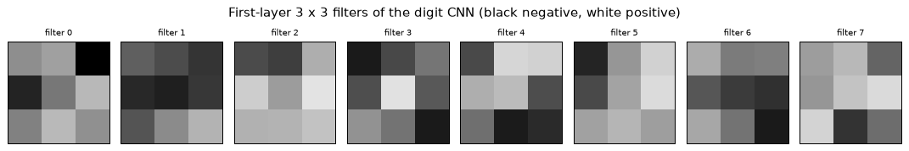
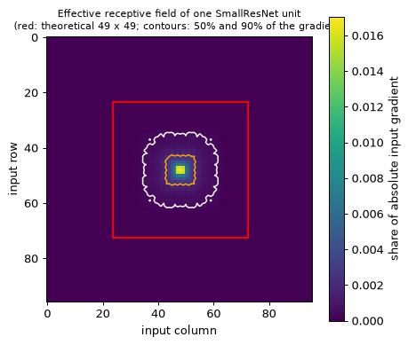
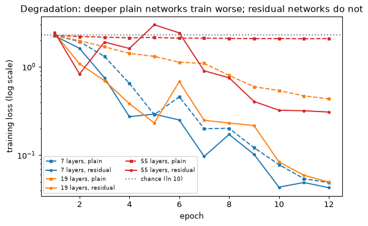
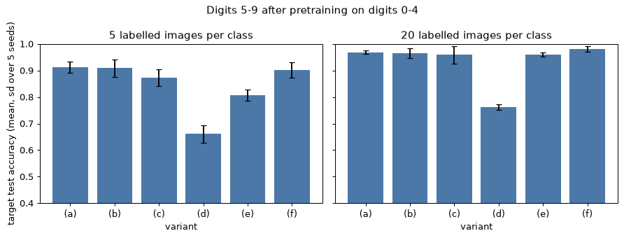
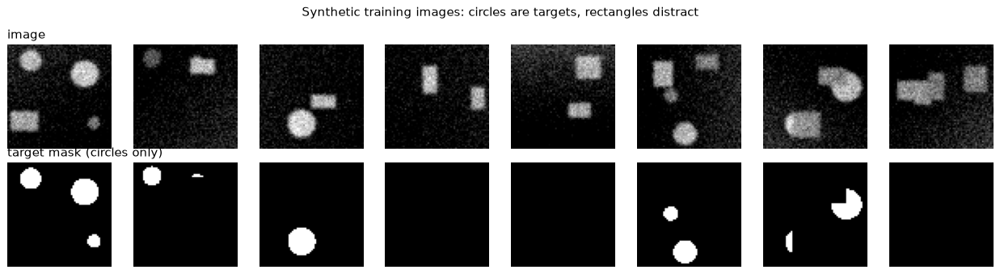
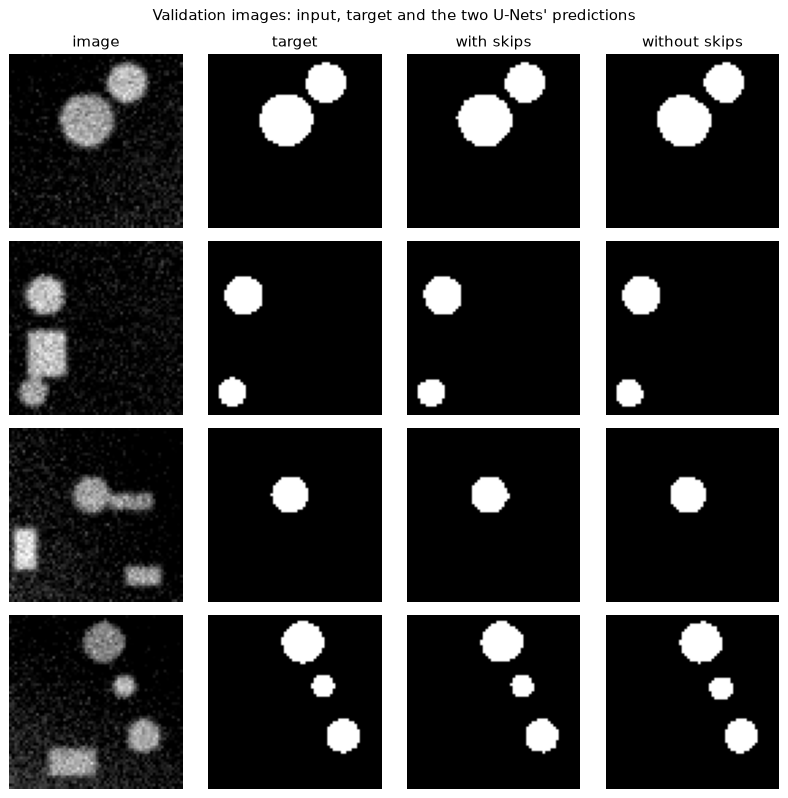
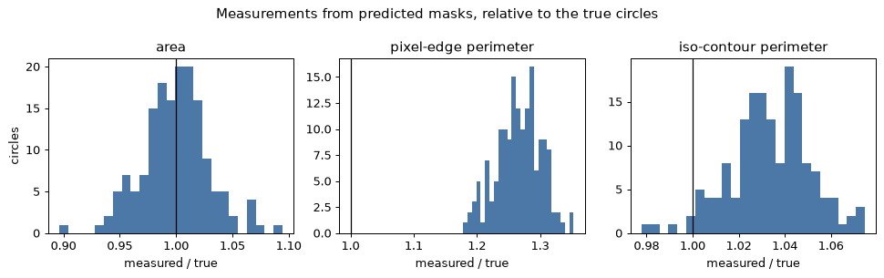
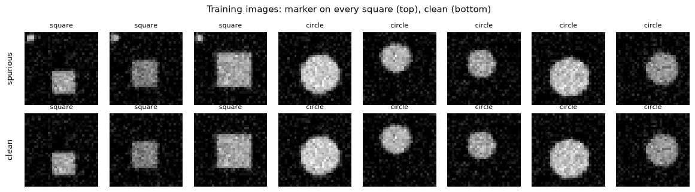
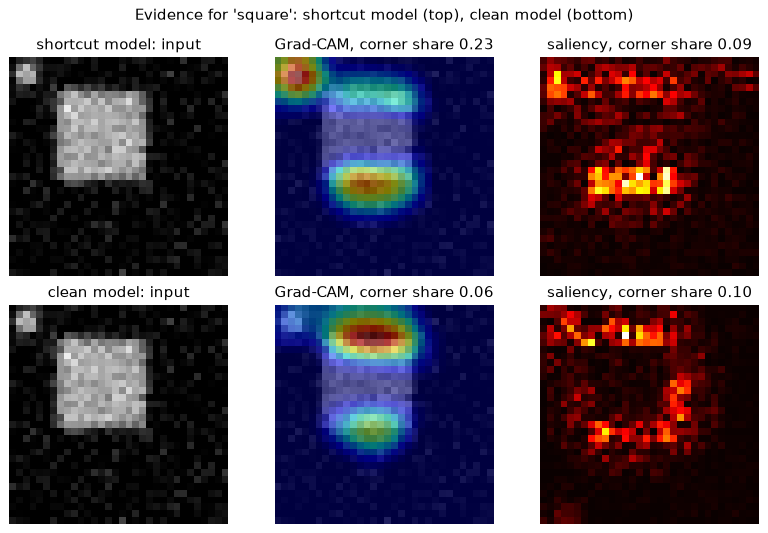

图像不是向量
一幅 224 × 224 像素的彩色图像有 224 × 224 × 3 = 150,528 个数。把它展平后，可以送入模块 02的多层感知机（multilayer perceptron），但在这个规模下会在两方面失败：计算成本和统计效率。
一个从 150,528 个输入到 1,000 个隐藏单元的全连接层，每个输入-单元对有一个权重，每个单元有一个偏置：
每个 float32 数占 4 字节，共 602,116,000 字节：仅一层就需要 574 MiB（按十进制单位是 602 MB），而梯度和 Adam 的两个矩估计（模块 02，第 8 节）还会使它翻为四倍。
统计上的问题更严重。每个权重只属于一个输入位置，所以该层必须分别学会：左上角的边缘和右下角的同一条边缘是同一种东西，而且要靠在每个位置都出现过边缘的样本来学。图像的两个性质可以同时消除这两个问题。
局部性
一个像素的含义，取决于它的邻域远多于取决于远处的像素：边缘、笔画和纹理都是相距几个位置的像素之间的关系。这一点可以测量。
load_digits 包含 1,797 幅 8 × 8 像素的图像，灰度为 0–16。保留标准差大于 0.5 的 52 个像素（其余的几乎总是空白），在所有图像上计算每一对像素的相关系数，再按它们在网格上的距离对相关系数取平均：
import numpy as np
from sklearn.datasets import load_digits
X = load_digits().data # (1797, 64), grey levels 0..16
keep = np.flatnonzero(X.std(axis=0) > 0.5) # skip pixels that are almost always blank
R = np.corrcoef(X[:, keep], rowvar=False) # correlation of every pair of pixels
row, col = np.divmod(keep, 8) # position of each kept pixel on the grid
dist = np.hypot(row[:, None] - row, col[:, None] - col)
iu = np.triu_indices(len(keep), k=1) # each pair once
r, d = R[iu], dist[iu]
for lo, hi in [(0, 1), (1, 1.5), (1.5, 2), (2, 3), (3, 4.5), (4.5, 12)]:
sel = (d > lo) & (d <= hi)
print(f"distance ({lo}, {hi}]: mean r = {r[sel].mean():+.2f} ({sel.sum()} pairs)")
distance (0, 1]: mean r = +0.42 (88 pairs)
distance (1, 1.5]: mean r = +0.17 (76 pairs)
distance (1.5, 2]: mean r = -0.04 (72 pairs)
distance (2, 3]: mean r = -0.06 (236 pairs)
distance (3, 4.5]: mean r = -0.04 (406 pairs)
distance (4.5, 12]: mean r = -0.03 (448 pairs)
前三个区间恰好对应距离 1、\sqrt{2} 和 2。相邻像素明显相关（+0.42），对角相邻的像素相关性较弱（+0.17）；从距离 2 起，均值接近零并略为负，这是因为穿过某个像素的细笔画，往往会在两个像素之外留下背景。邻近的像素彼此携带信息；相距较远的像素几乎不携带。
平稳性
第二个性质是平稳性（stationarity）：小图像块的统计特性在图像的各处相同。左上角的边缘和右下角的边缘看起来一样，所以在某个位置有用的检测器，在每个位置都有用。这就允许权值共享（weight sharing）：一小组权重，在所有位置上使用。
同一层，三种参数量
考虑一个从 224 × 224 × 3 的图像到 224 × 224 × 64 输出的层（3,211,264 个单元，即 50,176 个位置上各 64 个），并逐一施加这两个假设；图 3.1 画出了一个输出单元在三种情形下的连接。
全连接。每个输出单元看到全部 150,528 个输入：
局部连接（只利用局部性）。每个输出单元只看到自己的 3 × 3 × 3 窗口，拥有自己的 27 个权重：
卷积（利用局部性和权值共享）。一个窗口的 27 个权重由全部 50,176 个位置共享，每个输出通道有一组权重和一个偏置：
局部性把因子 150,528 换成了 27。权值共享随后除以位置数：86{,}704{,}128 / 1{,}728 = 50{,}176，其中 1{,}728 = 64 \times 27 是共享权重的个数。卷积的参数量与图像大小无关：对 1,024 × 1,024 的图像，它仍是 1,792。
一个输出单元作用于 6 × 6 输入，分三个面板。全连接：从全部 36 个像素到该单元都有连线。局部连接：来自一个 3 × 3 窗口的连线，另一处还有第二个单元，它的九条连线带有不同的权重（w1…w9 对 v1…v9）。卷积：同样的两个窗口，都标为 w1…w9。对 224 × 224 × 3 的输入和 224 × 224 × 64 的输出，三者的参数量分别为 4.83 × 10¹¹、8,670 万和 1,792。
权值共享还汇聚了统计强度。一个共享权重在每个位置上都起作用，所以由链式法则，它的梯度要对每幅训练图像的全部 50,176 个位置求和，而不共享的权重只能听到自己所在位置的信号。相邻位置是相关的，所以一幅图像并不相当于 50,176 个独立样本，但它的价值远高于一个样本。
等变性与不变性
记 T_{\boldsymbol{\tau}} 为把图像平移 \boldsymbol{\tau} = (\tau_1, \tau_2) 个像素的平移算子， (T_{\boldsymbol{\tau}} X)_{i,j} = X_{i-\tau_1,\, j-\tau_2}。图像的函数 f 称为
- 平移等变（translation equivariant），若 f(T_{\boldsymbol{\tau}} X) = T_{\boldsymbol{\tau}} f(X)： 输入平移，输出也平移相同的量；
- 平移不变（translation invariant），若 f(T_{\boldsymbol{\tau}} X) = f(X)：输入平移，输出不变。
卷积是等变的（第 2 节给出证明）；池化和全局平均给出近似的不变性（第 5 节）。需要哪一种由任务决定。“含有裂纹”这样的标签不会因为裂纹移动而改变，所以分类器应当是不变的；分割掩码或检测框必须随目标移动，所以这类网络应当是等变的。
归纳偏置，以及它不成立的地方
卷积是一个权重矩阵受到约束的全连接层：大多数元素为零（局部性），其余的元素被绑定在一起（权值共享），第 2 节会说明这一点。它能表示的函数比同样输入输出的全连接层少，而这正是关键所在：它放弃的函数是图像用不到的，而它所缺少的每个参数都不必从数据中估计。像这样内置于架构的假设称为归纳偏置（inductive bias）。实验 2 从两个方面检验它：用同一个固定的排列打乱每个数字图像的 64 个像素，MLP 的准确率不变，因为它本来就不知道哪些像素相邻；而 CNN 的准确率则从约 98.4% 降到约 96%。
这种偏置在具有局部、平稳统计特性的网格数据上有回报：图像、音频和传感器信号、光谱、CT 和显微镜体数据（第 13 节）。它对表格数据没有帮助，因为表格的列（年龄、压力、合金牌号）没有邻居，顺序也是任意的。
卷积是内置了局部性和平稳性的全连接层：对满足这两条的数据它大获全胜，对不满足的数据它毫无助益。
一个层用 5 × 5 窗口把 32 × 32 × 3 的图像映射为 32 × 32 × 16 的输出。作为带偏置的卷积，它有多少个参数？作为局部连接层，它有多少个权重？
查看答案
作为卷积，有 16 个滤波器，每个有 5 × 5 × 3 = 75 个权重，再加 16 个偏置： 16 \times 75 + 16 = 1{,}216 个参数。作为局部连接层，有 32 × 32 × 16 = 16,384 个输出单元，每个有 75 个权重：16{,}384 \times 75 = 1{,}228{,}800 个权重（外加 16,384 个偏置），约为前者的一千倍。
回答“图像里有裂纹吗？”的分类器，对平移应当是等变的还是不变的？对裂纹做分割的网络呢？
查看答案
分类器应当是不变的：裂纹移动时，它的标签不动。分割网络应当是等变的：它的掩码必须随裂纹移动。
卷积运算
对单通道图像 X \in \R^{H \times W}、卷积核（kernel）K \in \R^{k \times k} 和偏置 b，卷积层计算
下标从 0 开始，(i, j) 是卷积核所覆盖窗口的左上角：把卷积核盖在窗口上，把重叠的数对应相乘，把乘积与偏置相加，然后滑动一格，重复这一过程。窗口在每个轴上有 H - k + 1 个位置，所以不填充时，3 × 3 的卷积核把 5 × 5 的图像变成 3 × 3 的输出；边界的处理见第 3 节。
取
对 Y_{0,0}，窗口是第 0–2 行、第 0–2 列（图 3.2 画出了这个窗口和 Y_{1,2} 的窗口）。逐格相乘，每行写窗口的一行：
这个卷积核把窗口的左列相加，再减去右列。对 Y_{1,2}，窗口是第 1–3 行、第 2–4 列，左列是 3, 1, 2，右列是 1, 0, 1：
对全部九个位置同样计算，得到
正值表示窗口左边比右边亮，负值则相反：这个卷积核检测垂直边缘及其方向。
5 × 5 示例上的滑动窗口：输入图像上高亮了输出位置 (0, 0) 和 (1, 2) 的 3 × 3 窗口，旁边是卷积核，每个窗口的格子里写着九个乘积，箭头指向输出中对应的格子，输出各行为 (−1, −4, 0)、(−3, −2, 4) 和 (−1, −2, 1)。
互相关还是卷积
严格地说，上面的运算是互相关（cross-correlation），在本模块需要区分时写作 K \star X。数学和信号处理中的卷积要把卷积核翻转：
这里输出的下标位于窗口的右下角。把它移到左上角（i \to i + k - 1，j \to j + k - 1），并代入 u' = k - 1 - u，v' = k - 1 - v：和式变成 \sum_{u',v'} K_{k-1-u',\,k-1-v'}\, X_{i+u',\, j+v'}，即卷积核旋转 180° 之后的互相关。二者只差一次翻转 K_{u,v} \to K_{k-1-u,\,k-1-v}。对学出来的卷积核，这无关紧要，因为网络学到的就是翻转后的卷积核，所以每个深度学习框架计算的都是互相关，却称之为卷积。由此有三个推论：
scipy.signal.convolve2d会翻转卷积核，所以它与torch.nn.functional.conv2d不一致，而correlate2d与之一致，给convolve2d传入K[::-1, ::-1]也一致（实验 1）。- 旋转后不变的卷积核，例如模糊核，两种算法给出相同的结果。
- 反对称的卷积核会变号。把上面的边缘核旋转后取负，所以该例子的真正卷积是 -Y，各行为 (1, 4, 0)、(3, 2, −4) 和 (1, 2, −1)。
手工设计的卷积核
在卷积核由学习得到之前，它们是人工设计的，这些经典设计展示了 3 × 3 卷积核能做什么。有一条规律把它们组织起来。在常数区域 X_{i,j} = c 上，输出为 b + c \sum_{u,v} K_{u,v}：权重之和为 1 的卷积核保持平坦区域不变，只改变其上的结构；权重之和为 0 的卷积核在平坦区域输出零，只对变化有响应。
| 卷积核 | 权重 | 和 | 作用 |
|---|---|---|---|
| 均值模糊 | 全部为 \tfrac{1}{9} | 1 | 把每个像素替换为其窗口的均值 |
| 高斯模糊 | \tfrac{1}{16}\left[\begin{smallmatrix}1&2&1\\2&4&2\\1&2&1\end{smallmatrix}\right] | 1 | 向中心加权的均值 |
| 锐化 | \left[\begin{smallmatrix}0&-1&0\\-1&5&-1\\0&-1&0\end{smallmatrix}\right] | 1 | 恒等减去拉普拉斯：把像素推离它的邻居 |
| Sobel-x | \left[\begin{smallmatrix}-1&0&1\\-2&0&2\\-1&0&1\end{smallmatrix}\right] | 0 | 水平方向的变化，即垂直边缘 |
| 拉普拉斯 | \left[\begin{smallmatrix}0&1&0\\1&-4&1\\0&1&0\end{smallmatrix}\right] | 0 | 二阶差分：斑点、细线、角点 |
高斯模糊在 Y_{1,1} 处读取 X 的第 1–3 行、第 1–3 列，中心是 X_{2,2} = 1：
窗口的均值是 16/9 = 1.78，所以模糊把中心值拉到了离它很近的地方。对所有位置，
输入 0 到 4 的取值范围缩小到了 1.125–1.875。锐化核在同一位置给出 5 \cdot 1 - (3 + 2 + 0 + 4) = -4。把它看成恒等减去拉普拉斯，它计算的是 x_c + 4\,(x_c - \bar{x}_4)，其中 \bar{x}_4 = 2.25 是四个邻居的均值：1 + 4\,(1 - 2.25) = -4。对所有位置，它给出各行 (0, 11, 1)、(−7, −4, 17) 和 (11, 5, −9)：输入范围是 0 到 4，输出范围却是 −9 到 17。锐化放大差异，噪声也不例外。
网络第一层学到的滤波器与这些很像，是有方向的边缘检测器和斑点（实验 2 第 7 步画出了它的数字 CNN 学到的八个滤波器，第 14 节会讨论）；更深的层把它们组合成没人会手工设计的检测器。
平移等变性的证明
第 1 节声称卷积是平移等变的。取 (T_{\boldsymbol{\tau}} X)_{i,j} = X_{i-\tau_1,\, j-\tau_2}，证明只需两行：
第一行代入平移后的图像；第二行把同一个和式读作输出在 (i - \tau_1, j - \tau_2) 处的值。偏置在各处相同，直接通过。证明假设每个 X_{i+u-\tau_1,\, j+v-\tau_2} 都存在，这在无限网格上和循环填充下成立，循环填充时图像像环面一样首尾相接。对零填充，平移在一侧边界推入的像素是零，而不是从另一侧推出的像素，所以等变性在远离边界处严格成立，在边界附近不成立；实验 1 测量了这两种情形。
作为矩阵的卷积
卷积对 X 是线性的，所以它是一个矩阵乘积。在一维情形，长度为 5 的输入和卷积核 (1, 2, 3) 给出三个输出，把每个窗口的权重写成一行，得到
每一行都是上一行向右移一位：\mathbf{M} 是带状的 Toeplitz 矩阵，沿对角线为常数。在二维情形，图像按行展平后，矩阵是双重分块 Toeplitz 矩阵：每个卷积核行对应一个 Toeplitz 块，这些块再按 Toeplitz 的方式排列。这就是第 1 节那个论断的准确含义：卷积层是一个全连接层，它的矩阵每行有 k^2 个非零元素，且每行是同样的 k^2 个值。
反向传播与转置卷积
若 \mathbf{y} = \mathbf{M}\mathbf{x}，上一层传来梯度 \mathbf{g} = \partial \mathcal{L}/\partial \mathbf{y}，则由链式法则（模块 02，第 3 节）得
\mathbf{M} 的第 m 列保存了 x_m 进入各个输出时的权重，所以 \mathbf{M}^\top 把每个 g_i 经由卷积核散射回它的窗口读过的那些输入。结果是 \mathbf{g} 与卷积核的“完全”（full）卷积，包含每一处重叠，包括伸出两端的部分。对卷积矩阵取转置的运算称为转置卷积（transposed convolution）；第 12 节把它正向运行以做上采样。权重梯度随之得到，因为 K_{u,v} 只通过 K_{u,v} X_{i+u,j+v} 这一项进入 Y_{i,j}：
这是输入与输出梯度的互相关。因此反向传播是另外两个卷积，每个的乘加运算次数与前向相同：约为前向代价的两倍，和模块 02 的全连接层一样。
前向，取 \mathbf{x} = (1, 0, 2, 1, 3)：
反向，取 \mathbf{g} = (1, -1, 2)，每个输入收集所有窗口覆盖过它的输出的梯度：
图 3.3 画出了这两个乘积。中间的输入 x_2 被全部三个窗口读到，权重分别是 3、2 和 1。权重梯度是 \partial \mathcal{L}/\partial w_u = \sum_i g_i x_{i+u}： (1 - 0 + 4,\; 0 - 2 + 2,\; 2 - 1 + 6) = (5, 0, 7)。NumPy 的三个结果与此一致：
import numpy as np
w = np.array([1.0, 2.0, 3.0]) # kernel
x = np.array([1.0, 0.0, 2.0, 1.0, 3.0]) # input of length 5
M = np.zeros((3, 5))
for i in range(3):
M[i, i:i + 3] = w # row i: the kernel shifted i places
print(M @ x, np.correlate(x, w, "valid")) # forward pass, two ways
g = np.array([1.0, -1.0, 2.0]) # dL/dy arriving from above
print(M.T @ g, np.convolve(g, w, "full")) # dL/dx: the transposed convolution
print(np.correlate(x, g, "valid")) # dL/dw: input correlated with dL/dy
[ 7. 7. 13.] [ 7. 7. 13.]
[1. 1. 3. 1. 6.] [1. 1. 3. 1. 6.]
[5. 0. 7.]
作为矩阵的一维卷积。左：3 × 5 的带状矩阵 \mathbf{M}，三条对角线上分别是 1、2 和 3，其余为零，乘以 \mathbf{x} = (1, 0, 2, 1, 3)，得到 (7, 7, 13)。右：它的转置 \mathbf{M}^\top（5 × 3）乘以输出梯度 (1, −1, 2)，得到 (1, 1, 3, 1, 6)，标注为“转置卷积”。
卷积是一个稀疏的、权重绑定的矩阵：它的前向传播滑动做点积，它的反向传播是另外两个卷积。
为什么 F.conv2d 与 scipy.signal.correlate2d 一致，却与 scipy.signal.convolve2d 不一致？
查看答案
框架计算的是互相关；convolve2d 计算的是真正的卷积，它会翻转卷积核。先翻转卷积核，即 K[::-1, ::-1]，三者就一致了。
一个卷积核的权重之和为零。在远离边界处，它对常数图像输出什么？
查看答案
零（再加偏置）：每个窗口里的值都是同一个 c，而 \sum_{u,v} K_{u,v}\, c = c \sum_{u,v} K_{u,v} = 0。这类卷积核只对变化有响应。
对长度为 6 的输入和 3 个抽头的卷积核，不填充，\mathbf{M} 的形状是什么？它的元素中最多有多少个非零？
查看答案
有 6 - 3 + 1 = 4 个输出，所以 \mathbf{M} 是 4 × 6，有 12 个非零元素：每行三个，共 24 个元素。
输出尺寸、填充、步长、空洞与感受野
每张架构图都是一串形状的列表，每个形状都由一个公式得出，而一个递推式说明每个单元能看到图像的多少。两者都建立在三个设置之上。填充（padding）p 在某个轴的两端各加 p 个格子；步长（stride）s 是相邻窗口之间的步幅；空洞（dilation）d 使卷积核的各个抽头彼此相隔 d，所以 d = 2 的 3 × 3 卷积核读取 5 × 5 区域中每隔一个的像素。空洞保持 k^2 个权重不变，而跨度增长为 d(k-1) + 1。
输出尺寸
沿一个轴数窗口的位置。填充后有 H + 2p 个位置，编号为 0 到 H + 2p - 1。从 t 开始的窗口读取 t, t + d, \dots, t + (k-1)d，所以当 t + d(k-1) \le H + 2p - 1 时它放得下。窗口从 t = 0, s, 2s, \dots 开始，而 [0,\, H + 2p - d(k-1) - 1] 中 s 的倍数的个数是
当 d = 1 时，它是 \lfloor (H + 2p - k)/s \rfloor + 1，当 p = 0、s = 1 时，它就是第 2 节的 H - k + 1。宽度遵循同样的公式。
取 H = 11、k = 3，分子 H + 2p - d(k-1) - 1 与输出尺寸为：
| p | s | d | 分子 | H_{\text{out}} |
|---|---|---|---|---|
| 0 | 1 | 1 | 8 | 9 |
| 1 | 1 | 1 | 10 | 11 |
| 1 | 2 | 1 | 10 | 6 |
| 0 | 2 | 1 | 8 | 5 |
| 2 | 1 | 2 | 10 | 11 |
| 0 | 1 | 2 | 6 | 7 |
| 0 | 3 | 1 | 8 | 3 |
在最后一行，\lfloor 8/3 \rfloor = 2：窗口从 0、3 和 6 开始，读取第 0–2、3–5 和 6–8 列。第 9 列和第 10 列从未被读到。向下取整悄悄丢弃了输入，没有任何框架会发出警告。实验 1 用 PyTorch 核对了全部七行。
“Same”填充。当 s = 1 且 p = d(k-1)/2 时，分子是 H - 1，所以 H_{\text{out}} = H。这要求 d(k-1) 为偶数，在 d = 1 时意味着卷积核为奇数（3 × 3 配 p = 1，5 × 5 配 p = 2）。偶数大小的卷积核无法对称填充；这时 PyTorch 的 padding="same" 把多出的零放在右侧和下侧，并拒绝大于 1 的步长。
步长为 2。当 k = 3、p = 1、s = 2 时，公式给出 \lfloor (H - 1)/2 \rfloor + 1：H 为偶数时是 H/2，为奇数时是 (H + 1)/2。“步长为 2 则尺寸减半”只对偶数尺寸精确成立；7 变成 4。
填充模式。零填充是默认的；反射（镜像）、复制（重复边缘像素）和循环（环绕）则改用图像本身的内容填充边界。这个选择很重要：用零填充时，靠近边界的卷积核会看到一圈人为的暗框，于是网络可以学到边界在哪里，进而学到特征的绝对位置，而等变的层本来不该知道这一点。
感受野
一个单元的感受野（receptive field）是能影响它的输入位置的集合；沿一个轴，它的大小记为 r。在各层之间跟踪两个量：r_l，即第 l 层一个单元的感受野；以及跳距（jump）\Delta_l，即第 l 层相邻单元之间以输入像素计的距离，从 r_0 = 1 和 \Delta_0 = 1 出发。第 l 层的一个单元读取第 l - 1 层的 k_l 个相隔 d_l 的单元，所以它最外侧的输入相距 (k_l - 1)\,d_l\,\Delta_{l-1} 个输入像素，每个都带来大小为 r_{l-1} 的感受野；它自己的步长则使各单元之间的间距相乘：
池化层以同样的方式进入，其窗口作为 k_l，步长作为 s_l，且 d_l = 1。填充不改变 r；它只决定感受野伸出边界多远。
小卷积核，堆叠。每个步长为 1 的 3 × 3 层增加 2，所以 n 个这样的层达到 r = 2n + 1。设输入输出都有 C 个通道，两个堆叠的 3 × 3 层看到的范围与一个 5 × 5 层相同，但权重是 18C^2 而不是 25C^2（少 28%），三个堆叠的层与一个 7 × 7 层看到的范围相同，权重是 27C^2 而不是 49C^2（少 45%），而且每层之间还有非线性。这就是 VGG（第 7 节）的全部设计思路。
下采样使跳距成倍增长。经过一个步长为 2 的层之后，每个后续的 3 × 3 层增加 4 个像素而不是 2；经过五个之后，增加 64。网络正是这样在几十层之内获得整幅图像的上下文。
ResNet 在 224 × 224 图像上的 stem 是一个步长为 2、填充为 3 的 7 × 7 卷积，接着是一个步长为 2、填充为 1 的 3 × 3 最大池化：
卷积得到 r_1 = 1 + 6 \cdot 1 = 7，\Delta_1 = 2；池化增加 (3 - 1) \cdot 2 = 4，所以 r_2 = 11，\Delta_2 = 4，之后每个 3 × 3 层增加 8。
VGG-16 交替使用 3 × 3 卷积（步长 1）和 2 × 2 最大池化（步长 2）。在第 b 块中跳距为 2^{b-1}，所以每个卷积增加 2^b，池化增加 2^{b-1}：
| 块 | 层 | 每层之后的 r | 池化之后的跳距 |
|---|---|---|---|
| 1 | conv1_1, conv1_2, pool1 | 3, 5, 6 | 2 |
| 2 | conv2_1, conv2_2, pool2 | 10, 14, 16 | 4 |
| 3 | conv3_1 到 conv3_3, pool3 | 24, 32, 40, 44 | 8 |
| 4 | conv4_1 到 conv4_3, pool4 | 60, 76, 92, 100 | 16 |
| 5 | conv5_1 到 conv5_3, pool5 | 132, 164, 196, 212 | 32 |
十三个不带池化的 3 × 3 层只能达到 27。有了池化，最后的单元能看到 224 × 224 像素中的 212 × 212：接近全局的上下文，但只出现在最后一层。
空洞使感受野指数增长。d = 1, 2, 4, 8 的 3 × 3 堆叠每层增加 2d，得到 r = 3, 7, 15, 31，而不带空洞的堆叠要 15 层才能达到 31，并且不损失任何分辨率。有公因数的空洞会留下空隙：三个 d = 2 的层只读取每隔一个的输入，这种模式称为网格效应（gridding），从 d = 1 开始可以避免它。图 3.4 并排比较了扩大感受野的三种方式：堆叠、跨步和空洞。
一维中感受野的增长，分三个面板。每个面板都有一行输入点，上面是三层，并画出到达某个顶层单元的输入锥。左：三个步长为 1 的 3 抽头层，感受野为 3、5、7。中：中间层步长为 2，感受野为 3、5、9，并标出跳距 2。右：空洞为 1、2、4，感受野为 3、7、15，空洞抽头画成跳跃的连线。
有效感受野
理论感受野说明哪些像素能影响一个单元，却没说影响多大。数一数路径：在三个堆叠的 3 抽头层中，中心输入沿 7 条路径到达顶层单元，最外侧的输入各沿 1 条，每个轴上的计数 1, 3, 6, 7, 6, 3, 1 是 (1, 1, 1) 的三重自卷积。有 n 层时，计数是卷积核的 n 重自卷积，由中心极限定理，它趋于一个宽度按 \sqrt{n} 增长的高斯分布，而感受野按 n 增长。Luo 等人（2016）测量了这个有效感受野（effective receptive field），即一个输出单元的梯度实际落在的位置，发现它大致呈高斯形，并且比理论感受野小得多。对 SmallResNet 的最后一个阶段（第 8 节），理论感受野为 49 × 49，实验 3 测得约 44% 的输入梯度质量落在中央 9 × 9 之内，89% 落在 25 × 25 之内；一半位于约 11 × 11 之内，是理论面积的二十分之一。该实验的第 5 步画出梯度图，同时画出理论窗口以及包含 50% 和 90% 质量的等值线。
目标很大时，这一点很重要。如果网络的有效感受野比目标小，它就只能依据局部纹理来判断，而在 ImageNet 上训练的 CNN 确实表现出这种偏向：给它们形状指向一个类别、纹理指向另一个类别的图像，它们多半按纹理回答（Geirhos 等人，2019）。有了这个递推式，计算感受野只是五分钟的事；实验 3 展示如何观察有效感受野。
输入大小 64，k = 5，p = 2，s = 2，d = 1：输出大小是多少？
查看答案
\lfloor (64 + 4 - 5)/2 \rfloor + 1 = \lfloor 31.5 \rfloor + 1 = 32。
堆叠四个 3 × 3 层，第二层步长为 2，其余步长为 1。每一层之后的感受野是多少？
查看答案
3、5、9、13。前两层各增加 2；第二层的步长使跳距变为 2，所以第三层和第四层各增加 2 \times 2 = 4。
SmallResNet 的理论感受野是 49 × 49，但它的输入是 32 × 32。感受野怎么会比图像还大？
查看答案
窗口延伸到了填充区域。最后阶段的每个单元都能看到整幅图像加上边界，但它的有效感受野集中在中心附近。
通道、参数与 FLOPs
真实的输入有多个通道（红、绿、蓝，或者模拟中的各个场），而第一层之后的每一层都会产生许多通道。单通道的层通过对输入通道求和来推广：
权重张量的形状是 (C_{\text{out}}, C_{\text{in}}, k, k)，PyTorch 把激活存为 (B, C, H, W)，即通道在前；TensorFlow 默认通道在后，即 (B, H, W, C)。每个输出通道 c 有一个滤波器（filter）K_{c,\cdot,\cdot,\cdot}，形状为 C_{\text{in}} \times k \times k，它同时通过所有输入通道观察一个 k \times k 的图像块，并把结果求和成一个数。滤波器滑动时产生的映射是一张特征图（feature map）；一个层就是 C_{\text{out}} 个滤波器产生 C_{\text{out}} 张特征图，即下一层的通道（图 3.5）。
用方块表示的多通道卷积：一个 C_{\text{in}} \times H \times W 的输入张量；一个 C_{\text{in}} \times k \times k 的滤波器在其中滑动，产生一张输出图；C_{\text{out}} 个这样的滤波器叠起来，得到 C_{\text{out}} \times H_{\text{out}} \times W_{\text{out}} 的输出；并标出权重张量的形状 (C_{\text{out}}, C_{\text{in}}, k, k)。
把整个层写成一次矩阵乘法
固定一个输出位置，对 (c', u, v) 的求和是滤波器（展平为长度 C_{\text{in}}k^2）与窗口（以同样方式展平）之间的点积。把每个窗口收集为矩阵 \mathbf{X}_{\text{col}} 的一列，其形状为 C_{\text{in}}k^2 \times H_{\text{out}}W_{\text{out}}，这一步称为 im2col（“image to columns”，图像到列），再把 C_{\text{out}} 个展平的滤波器堆成 \mathbf{W} 的各行。整个层就成为一个矩阵乘积，
再加上偏置，并重塑为 (C_{\text{out}}, H_{\text{out}}, W_{\text{out}})。CPU 库和许多 GPU kernel 都是这样计算卷积的，因为矩阵乘法是数值计算中优化得最充分的例程；对某些形状还有基于 FFT 和 Winograd 的算法。代价是内存：步长为 1 时，每个输入值最多被复制到 k^2 列中，所以 3 × 3 层的列矩阵约为其输入的九倍。PyTorch 把 im2col 暴露为 F.unfold：
import torch
import torch.nn.functional as F
torch.manual_seed(0)
x = torch.randn(1, 64, 56, 56) # one image with 64 channels
w = torch.randn(128, 64, 3, 3) # 128 filters, each 64 x 3 x 3
cols = F.unfold(x, kernel_size=3, padding=1) # im2col: one column per position
y = (w.reshape(128, -1) @ cols).reshape(1, 128, 56, 56)
print(tuple(cols.shape), cols.numel() / x.numel())
print(torch.allclose(y, F.conv2d(x, w, padding=1), atol=1e-3))
(1, 576, 3136) 9.0
True
统计参数、MAC 和 FLOPs
计数可以直接从公式读出。每个输出通道有 k^2 C_{\text{in}} 个权重和一个偏置，所以一个层有 k^2 C_{\text{in}} C_{\text{out}} + C_{\text{out}} 个参数。每个输出值需要 k^2 C_{\text{in}} 次乘加运算（multiply-accumulate，MAC），每次包含一次乘法和一次加法，而输出值共有 C_{\text{out}} H_{\text{out}} W_{\text{out}} 个：
因子 2 就是模块 02，第 2 节“每次前向传播 2N FLOPs”背后的计数方式。
本模块的约定。计数以 MAC 给出，FLOPs = 2 × MACs；除非另有说明，偏置加法、激活、归一化和池化均不计入。许多论文报告的是乘加次数却称之为 FLOPs，ResNet、EfficientNet 和 ConvNeXt 都是如此；MobileNet 称之为 Mult-Adds。把一篇论文的数字与你自己的比较之前，先核对它的约定。由张量大小算出的内存采用二进制单位（1 MiB = 2²⁰ 字节，1 GiB = 2³⁰ 字节）；下载大小采用已发布的十进制 MB；两者差别明显时，只给出一次两种单位（第 1 节中的 574 MiB 与 602 MB）。本系列对 Transformer 的 FLOP 约定见模块 06，第 11 节；本模块用不到它。
一个从 64 到 128 通道、输出 56 × 56 特征图的 3 × 3 卷积（填充 1，步长 1）。
参数：3 \cdot 3 \cdot 64 \cdot 128 + 128 = 73{,}728 + 128 = 73{,}856。
MAC：73,728 个权重中的每一个在每个输出位置使用一次： 73{,}728 \times 56 \times 56 = 73{,}728 \times 3{,}136 = 231{,}211{,}008。
FLOPs：2 \times 231{,}211{,}008 = 462{,}422{,}016，约 4.62 亿。如果把 128 \times 3{,}136 = 401{,}408 次偏置加法也算上，则为 462,823,424，四舍五入为 463 MFLOPs。两者在各自的约定下都是对的，这就是这里每个计数都要说明其约定的原因。
im2col：列矩阵有 64 \times 9 = 576 行、3,136 列，共 1,806,336 个元素，即 float32 下的 7,225,344 字节（6.9 MiB）：是输入的 64 \times 56 \times 56 = 200{,}704 个元素的 9.0 倍。该层就是乘积 (128 \times 576)(576 \times 3{,}136)。
参数和计算量分别集中在哪里
参数 k^2 C_{\text{in}}C_{\text{out}} + C_{\text{out}} 与 H 和 W 无关；计算量与 H_{\text{out}}W_{\text{out}} 成正比。早期的层分辨率高而通道少，主导计算量。后期的层通道多而分辨率低，尤其是全连接的头部，主导参数量。
VGG-16 是五个块中的十三个 3 × 3 卷积（填充 1），块之间由 2 × 2 最大池化隔开，最后是三个全连接层。一小段脚本即可统计：
# VGG-16 on a 224x224 image, counted from its layer list
cfg = [64, 64, "M", 128, 128, "M", 256, 256, 256, "M",
512, 512, 512, "M", 512, 512, 512, "M"] # "M" is a 2x2 max pool
H, C, params, macs = 224, 3, 0, 0
for v in cfg:
if v == "M":
H //= 2 # pooling halves the map
continue
params += 3 * 3 * C * v + v # weights + biases
macs += 3 * 3 * C * v * H * H # padding 1: output is H x H
C = v
conv_params, conv_macs = params, macs
for n_in, n_out in [(512 * 7 * 7, 4096), (4096, 4096), (4096, 1000)]:
params += n_in * n_out + n_out # fc6, fc7, fc8
macs += n_in * n_out
print(f"parameters {params:,}, of which dense {params - conv_params:,}")
print(f"MACs: convolutions {conv_macs / 1e9:.2f} G, dense {(macs - conv_macs) / 1e9:.2f} G")
parameters 138,357,544, of which dense 123,642,856
MACs: convolutions 15.35 G, dense 0.12 G
三个全连接层占了 89% 的参数，却只执行 0.8% 的乘加运算。逐层看，对比更加鲜明：conv1_2 有 36,928 个参数，执行 1.85 G 次 MAC；fc6 有 1.028 亿个参数，执行 0.10 G 次。
按同样方法统计，224 × 224 下的 ResNet-18 有 11,689,512 个参数（含批归一化的缩放和平移）和 1.81 G 次 MAC。它的论文表 1 给出的是“1.8 × 10⁹ FLOPs”，所以论文里的 FLOPs 就是乘加次数。
内存、反向传播与偏置
激活内存。形状为 (C, H, W) 的输出在 float32 下每幅图像占 4CHW 字节，训练时要一直保留到反向传播用过它之后，这就是训练内存随深度乘以 batch 增长的原因（模块 02，第 3 节）。64 → 128 层的输出是 128 \times 56 \times 56 \times 4 = 1{,}605{,}632 字节，每幅图像 1.53 MiB，batch 为 256 时是 392 MiB（411 MB），而该层的参数只有 0.28 MiB。
反向代价。反向传播计算两个卷积，它们的 MAC 次数与前向相同（第 2 节），即输入梯度和权重梯度，所以一个训练步的代价约为前向 FLOPs 的三倍：上述层每幅图像约为 1.39 GFLOPs，对第一层则略少一些，因为它不需要输入梯度。
偏置与批归一化。卷积后面直接跟批归一化时不需要偏置：批归一化减去每个通道在 batch 上的均值，这会消去之前加上的任何常数 b_c，然后再加上它自己学习的平移。因此第 8 节的代码中卷积使用 bias=False；归一化本身见模块 02，第 10 节。
参数只取决于卷积核大小和通道数；计算量还随输出面积变化。每个计数都应说明它是 MAC 还是 FLOPs。
一个 5 × 5 卷积把 3 个通道映射到 16 个，带偏置，输出为 32 × 32。它有多少个参数，执行多少次 MAC？
查看答案
参数：5 \cdot 5 \cdot 3 \cdot 16 + 16 = 1{,}216。MAC： 1{,}200 \times 32 \times 32 = 1{,}228{,}800，与第 1 节第一个检查题中局部连接层的权重数相同，因为局部连接层对卷积用一个共享权重执行的每一次乘加运算，都各有一个权重。
把输入的高和宽加倍，卷积层的参数和 FLOPs 会怎样变化？
查看答案
参数不变；FLOPs 随输出面积增长为四倍。
一篇论文说某个网络的代价是“4 GFLOPs”；你的脚本数出 8 × 10⁹ 次浮点运算。你首先检查什么？
查看答案
论文是否把乘加次数当作 FLOPs：4 G 次乘加就是 8 GFLOPs，所以这两个计数可能是一致的。
池化、下采样与不变性
分类器必须把 224 × 224 的特征图变成一个标签，而且不应当一路都付出全分辨率的代价。随着网络加深而降低分辨率，可以同时满足这两个需求。
最大池化（max pooling）在每个 2 × 2 窗口上取最大值，步长为 2：它把 H 和 W 减半，保留每个窗口中最强的响应，并且没有参数。由于 \max(x_1, \dots, x_4) 对其最大的输入的导数为 1，对其余输入的导数为 0，所以反向传播把每个窗口的梯度完全送到持有最大值的位置（有并列时 PyTorch 取第一个）。平均池化（average pooling）对每个窗口取平均，并把四分之一的梯度传给每个位置。
全局平均池化（global average pooling，GAP）把每个通道的整张图平均成一个数，把 C \times H \times W 变成 C。它取代了早期网络末端那些巨大的全连接层，并使网络能够接受任意大小的输入。
VGG-16 的最后一个池化层输出 7 × 7 × 512。
展平加全连接。7 \cdot 7 \cdot 512 = 25{,}088 个值送入 4,096 个单元：仅 fc6 就有 25{,}088 \times 4{,}096 + 4{,}096 = 102{,}764{,}544 个参数，每个输入权重都绑定在某一个位置上。
GAP 加全连接。512 张图各平均成一个数，512 个输入送入 1,000 个类别：512 \times 1{,}000 + 1{,}000 = 513{,}000 个参数，比 fc6 少 200 倍，且没有权重绑定在某个位置上。
对 448 × 448 的输入，最后的特征图是 14 × 14 × 512：展平的头部期望 25,088 个输入，却收到 100,352 个，因此失败，而 GAP 仍然返回 512 个数。
同一张最终特征图上的两种分类头。展平 + 全连接：全部 C \cdot H \cdot W 个值都进入，每个值带有与位置相关的权重；VGG-16 的 7 × 7 × 512 = 25,088 个输入送入 4,096 个单元，需要 1.028 亿个参数。全局平均池化 + 全连接：每个通道平均成一个数，所以只有 C 个值进入；512 个输入送入 1,000 个类别，需要 50 万个参数。
步长卷积（strided convolution）同样使特征图减半，但由它的权重决定保留什么，而最大池化总是保留最大值，现代网络常常用这种方式下采样。ResNet 在各阶段之间用步长为 2 的卷积过渡，并在捷径上使用步长为 2 的 1 × 1 卷积（第 8 节）；ConvNeXt 使用单独的下采样层，即一个归一化加一个步长为 2 的 2 × 2 卷积（第 9 节）。
不变性只是近似的
人们常说池化使网络具有平移不变性。它只给出一点点不变性，而且只对某些平移成立。步长为 2 的运算只对 2 的倍数的平移是等变的：输入平移两个像素，输出移动一格，但平移一个像素则会改变哪些像素共用一个窗口。
向左平移一列，丢掉第一列并在末尾补零。窗口现在把不同的像素配成对：
尽管图像内容几乎没有移动，每个输出都变了。若改为平移两列，输出是 \left[\begin{smallmatrix} 2&0 \\ 5&0 \end{smallmatrix}\right]：原来的右列 (2, 5) 向左移了一格，正如步长为 2 下的等变性所预测的。
这就是混叠（aliasing），与信号处理中的情形一样：对包含高于新采样率一半的频率的信号做子采样，会把这些频率折叠成虚假的低频，因此结果取决于采样点落在哪里。经典的补救办法是在子采样之前做低通滤波。Zhang（2019）在每个步长运算之前做模糊（“抗混叠”池化），并报告输出对平移更稳定；Azulay 和 Weiss（2019）记录了现代 CNN 的预测会在一个像素的平移下发生变化。
实验 2 在 8 × 8 的数字上测量了这一效应。带有两个 2 × 2 最大池化和展平加全连接头部的 CNN，在居中的测试图像上得分约为 98.4%，在它们向右移动一个像素后约为 66%；同样大小的 MLP 则从约 97% 降到 44%。在随机放置于 16 × 16 画布上的数字上，同样的卷积加上第三层，用 GAP 时达到约 93%，用展平头部时为 89%（图 3.6 对比了这两种头部）。等变的层本身并不能造出不变的分类器：由头部和训练数据决定。
为什么要下采样
每次把 H 和 W 减半，之后每一层的 FLOPs 都减少为 1/4（第 4 节）。它使跳距加倍，所以后面的层让感受野增长得快一倍（第 3 节）。此外，通常的做法是在 H 和 W 减半的同时把 C 加倍，这使各阶段每层的计算量大致保持不变，因为 C 加倍使 C_{\text{in}} C_{\text{out}} 乘以 4，而特征图减半使 H_{\text{out}} W_{\text{out}} 除以 4。
SmallResNet（第 8 节）在 32 × 32 输入上的各个阶段为：32 × 32 配 32 个通道，16 × 16 配 64 个，8 × 8 配 128 个，4 × 4 配 256 个。每个阶段的第二个卷积，即从 C 到 C 通道的 3 × 3 卷积，代价为
VGG-16 呈现同样的规律：conv1_2、conv2_2、conv3_2 和 conv4_2 的代价都是 1.85 G 次 MAC。
池化和跨步换来计算量和感受野；平移不变性它们只能近似地换来，换来多少由头部和数据决定。
在 2 × 2 最大池化的反向传播中，梯度去了哪里？
查看答案
完全送到持有每个窗口最大值的位置；其余三个位置得到零。
一个以全局平均池化结尾的网络在 32 × 32 的图像上训练，现在输入 48 × 48 的图像。它能运行吗？你能相信它的答案吗？
查看答案
它能运行，因为 GAP 在任何输入大小下都返回 C 个数。但是现在目标相对于网络训练时所见的感受野处于不同的尺度，所以在相信它之前，应当先在新的尺寸上测试。
更廉价的卷积：1 × 1、分组与深度可分离
标准的 k \times k 卷积同时做两件事。它在空间上滤波，窗口为 k \times k；它还混合通道，因为每个输出通道都读取全部输入通道。它在每个输出位置上的开销是 k^2 C_{\text{in}} C_{\text{out}} 次乘加运算（第 4 节），正是这两件事的乘积。第 7 至 9 节的高效架构，要么把这两件事分开做，要么让昂贵的那一件在更少的通道上做。本节推导每种组件的开销，以及它放弃了什么。
1 × 1 卷积
取 k = 1，窗口就是单个像素，第 4 节的多通道公式变为
在每个位置上，长度为 C_{\text{in}} 的通道向量都乘以同一个 C_{\text{out}} \times C_{\text{in}} 矩阵 \mathbf{W}。1 × 1 卷积（1 × 1 convolution）就是在每个像素上独立应用的全连接层，有 C_{\text{in}} C_{\text{out}} + C_{\text{out}} 个参数，而且从不看邻居。它有两个用处：以很低的代价改变通道数；后接 ReLU 时，再给每个像素增加一次非线性。Lin 等人（2014）在每个空间卷积之后接一叠这样的层，也就是每个像素上的一个小 MLP（“Network in Network”）；同一篇论文还提出了全局平均池化。
瓶颈结构
在输出尺寸固定时，k \times k 卷积的开销为 k^2 C_{\text{in}} C_{\text{out}} H_{\text{out}} W_{\text{out}} 次 MAC，与两个通道数的乘积成正比。把两个通道数都除以 r，开销就降为原来的 1/r^2。瓶颈结构（bottleneck）正是利用了这一点：先用 1 × 1 卷积减少通道，再做昂贵的 k \times k 卷积；如果需要恢复宽度，再用第二个 1 × 1 卷积在其后扩张通道。Inception 用瓶颈结构来负担 5 × 5 分支；ResNet-50 及更深的变体在每个块中都用了一个（第 8 节）。
GoogLeNet 的模块（3a）读取 192 通道的 28 × 28 特征图，其 5 × 5 分支写出 32 个通道。输出位置共有 28 \cdot 28 = 784 个。
直接计算：5 \cdot 5 \cdot 192 \cdot 32 = 153{,}600 个权重，153{,}600 \times 784 = 120{,}422{,}400 次 MAC，即 120.4 M。
先用 1 × 1 卷积降到 16 个通道： 192 \cdot 16 + 5 \cdot 5 \cdot 16 \cdot 32 = 3{,}072 + 12{,}800 = 15{,}872 个权重， 15{,}872 \times 784 = 12{,}443{,}648 次 MAC，即 12.4 M。
降维后的分支便宜了 153{,}600 / 15{,}872 = 9.7 倍。代价是：该分支计算的一切信息，必须先经过每个像素 16 个数的窄口。图 3.7 展示了这个分支在整个模块中的位置，第 7 节会介绍该模块。
inception（3a）模块。四条并行分支从 28 × 28 × 192 的输入出发：一个 1 × 1 卷积到 64 个通道；一个 1 × 1 降维到 96 个通道，再接 3 × 3 卷积到 128 个通道；一个 1 × 1 降维到 16 个通道，再接 5 × 5 卷积到 32 个通道；一个 3 × 3 最大池化，再接 1 × 1 投影到 32 个通道。四路输出沿通道轴拼接成 28 × 28 × 256（64 + 128 + 32 + 32）。图中突出显示了 1 × 1 降维层，并在 5 × 5 分支上标注了降维前后的开销：120.4 M 对 12.4 M 次乘加。
分组卷积与逐通道卷积
分组卷积（grouped convolution）把 C_{\text{in}} 个输入通道分成 g 组，给每组配备各自的 C_{\text{out}}/g 个滤波器，这些滤波器只读取本组的通道。每个滤波器现在只跨越 C_{\text{in}}/g 个通道，所以该层有 k^2 C_{\text{in}} C_{\text{out}}/g 个权重，开销是完整层的 1/g。AlexNet 的分组层其实是硬件上的拆分：一半滤波器放在两块 GPU 的一块上，只读取同一块 GPU 上的特征图（第 7 节）。ResNeXt（Xie 等人，2017）则把分组数本身作为一个设计维度。
在极端情形 g = C_{\text{in}} = C_{\text{out}} = C 下，每组只有一个通道。这就是逐通道卷积（depthwise convolution）：每个通道一个 k \times k 滤波器，共 k^2 C 个权重，完全不混合通道。
深度可分离卷积
深度可分离卷积（depthwise-separable convolution）把两件事依次完成：先用逐通道 k \times k 卷积在空间上对每个通道滤波，再用逐点（1 × 1）卷积混合通道（图 3.8）。把步长放在逐通道层，使两种版本产生相同的输出尺寸，然后数每个输出位置的 MAC：
权重数遵循同样的比值，因为不含偏置时，每层的权重数等于它每个位置的 MAC 数。在较宽的层上，第一项可以忽略，3 × 3 的可分离层开销约为标准层的九分之一：节省的倍数大致是 k^2。
把第 4 节中输出为 56 × 56、从 64 到 128 通道的 3 × 3 卷积替换掉：
- 64 个通道上的逐通道 3 × 3：3 \cdot 3 \cdot 64 = 576 个权重；
- 从 64 到 128 通道的逐点卷积：64 \cdot 128 = 8{,}192 个权重；
- 合计 8,768 个权重；加上两层的偏置共 8,960 个参数 （576 + 64 + 8{,}192 + 128），而标准层为 73,728 个权重、73,856 个参数。
MAC：8{,}768 \times 3{,}136 = 27{,}496{,}448，即 55.0 MFLOPs，标准层为 462.4 MFLOPs （FLOPs = 2 × MAC，不计偏置加法）。比值为 73{,}728 / 8{,}768 = 8.41，与公式一致： 1/(1/128 + 1/9) = 1/0.11892 = 8.41。
标准卷积与深度可分离卷积的方块示意图。左：C_{\text{out}} 个滤波器，每个大小为 k \times k \times C_{\text{in}}，各自从全部输入通道产生一张输出图。右：C_{\text{in}} 个独立的 k \times k \times 1 滤波器，各自从自己的通道产生一张图，再接 C_{\text{out}} 个大小为 1 \times 1 \times C_{\text{in}} 的滤波器来混合这些图。两侧分别标注了每个输出位置的乘加次数：k^2 C_{\text{in}} C_{\text{out}} 对 k^2 C_{\text{in}} + C_{\text{in}} C_{\text{out}}。
分解放弃了什么
把两层复合起来。逐通道滤波器 D_{c'} 把通道 c' 变成一张滤波后的图，逐点权重 P_{c,c'} 把这些图加成输出通道 c（省略偏置）：
因此可分离层就是一个卷积核被强制写成 K_{c,c',u,v} = P_{c,c'} D_{c',u,v} 形式的标准卷积。对输入通道 c'，每个输出通道应用的都是同一个空间滤波器 D_{c'} 的缩放副本；而标准层可以让它的 C_{\text{in}} C_{\text{out}} 个通道对各有自己的空间模式。MobileNet 的表 4（Howard 等人，2017）给这一限制标了价。在 ImageNet 上，深度可分离网络达到 70.6% 的 top-1，用了 5.69 亿次乘加和 420 万个参数；同样的网络换成完整卷积，达到 71.7%，用了 48.66 亿次乘加和 2,930 万个参数。损失约一个点的精度，换来 8.5 倍的计算量减少。
把第 8 节 SmallResNet 每个块中的两个 3 × 3 卷积都换成逐通道 3 × 3（负责步长）加一个 1 × 1。参数量从 1,228,970 降到 187,018，缩小为原来的 1/6.6。各阶段分别为：18,560 → 2,752；57,728 → 9,440；230,144 → 35,264；919,040 → 136,064。
这个倍数低于单个 256 通道层的 8.7，原因有三。stem（928）、分类头（2,570）和批归一化的参数不变。1 × 1 的捷径投影，连同批归一化共 2,176 + 8,448 + 33,280 = 43,904 个参数，本来就是逐点的，不会缩小，因此在变小后的网络中占到 23%。此外，在 32 通道的第一阶段，比值只有 1/(1/32 + 1/9) = 7.0。
深度可分离层就是核被分解后的标准卷积：它的开销约为标准层的 1/k^2，同时只能表示这种分解形式的卷积核。
FLOPs 不等于运行时间
FLOPs 衡量的是算术量，而逐通道层每搬运一个字节只做很少的算术。以上面 64 通道、56 × 56 的特征图为例，逐通道 3 × 3 执行 9 \times 64 \times 3{,}136 = 1.8 百万次 MAC，同时读写 1.53 MiB 的激活，约每字节 1.1 次 MAC。标准 3 × 3 层在 2.58 MiB 的激活与权重上执行 2.31 亿次 MAC，约每字节 85 次。GPU 需要每字节几十次甚至更多运算才能让算术单元保持繁忙（模块 10 第 2 节的屋顶线模型），所以逐通道层远低于峰值运行，可分离网络的实测加速比小于它的 FLOP 比值。请在你将要部署的硬件上实测；实验 3 的扩展要问的是，为什么它的可分离网络训练起来并没有快 6.6 倍。
把一个 C_{\text{in}} = C_{\text{out}} = 256 的标准 3 × 3 卷积换成深度可分离卷积。开销比是多少？
查看答案
1/256 + 1/9 = 0.0039 + 0.1111 = 0.115：可分离层的开销是标准层的 11.5%，约少 8.7 倍。只有当 C_{\text{out}} 无限增大时，比值才会趋近 1/9。
一个 1 × 1 卷积在 14 × 14 的特征图上把 256 个通道映射到 64 个。含偏置时它有多少参数，开销是多少次 MAC？
查看答案
参数 256 \cdot 64 + 64 = 16{,}448。MAC 256 \cdot 64 \times 14 \cdot 14 = 16{,}384 \times 196 = 3{,}211{,}264，约 6.4 MFLOPs。
经典架构：LeNet、AlexNet、VGG 与 Inception
卷积架构的历史，最好看作一串单点的想法，每一个都加在前一个网络之上。它们论文中的每个数字都可以用第 3 至 6 节的工具验证，而验证正是理解一种设计的最快办法。
读一张架构表
架构表逐层列出输出形状、卷积核和步长，常常还有参数量和乘加次数。逐行检查：输出尺寸用第 3 节的公式，参数量和 MAC 用第 4 节的公式。某一行如果不符合公式，要么是印刷错误，要么藏着值得知道的东西：部分连接、偏置的约定，或者把乘加当成了 FLOPs 报告。
LeNet-5：基本模式
LeNet-5（LeCun 等人，1998）确立了此后每个网络都在其上展开的模式：卷积、子采样、卷积、子采样、全连接层。它读取 32 × 32 的图像，其中数字至多占据中央的 20 × 20，这样靠近数字边缘的笔画仍然落在顶层检测器感受野的中部。C1 应用 6 个 5 × 5 滤波器（6 张 28 × 28 的图）。S2 把每张图子采样到 14 × 14：一个单元把 2 × 2 窗口的四个值相加，乘以每张图一个的可训练系数，加上每张图一个的可训练偏置，再应用 sigmoid。C3 应用 5 × 5 滤波器得到 16 张 10 × 10 的图，但每张图只读取 S2 六张图中的 3、4 或 6 张，依照一张连接表；作者给出了两个理由：把连接数控制在范围内，以及打破各特征图之间的对称性（symmetry breaking）。S4 子采样为 16 张 5 × 5 的图。C5 是在 5 × 5 输入上用 120 个滤波器的 5 × 5 卷积，所以它的每张图都是 1 × 1：实质上是一个全连接层。F6 是 84 个单元的全连接层，后面是 10 个输出单元。20 世纪 90 年代中期，一套基于该网络的支票识别系统投入了商业使用。
参数量遵循 k^2 C_{\text{in}} C_{\text{out}} + C_{\text{out}}；连接数按每个输出位置上的每次乘加计算，含偏置。
| 层 | 输出 | 可训练参数 | 连接数 |
|---|---|---|---|
| C1 | 6 @ 28 × 28 | 6 × (5 · 5 · 1 + 1) = 156 | 28 · 28 · 156 = 122,304 |
| S2 | 6 @ 14 × 14 | 6 × 2 = 12 | 14 · 14 · 6 · 5 = 5,880 |
| C3 | 16 @ 10 × 10 | 60 · 25 + 16 = 1,516 | 10 · 10 · 1,516 = 151,600 |
| S4 | 16 @ 5 × 5 | 16 × 2 = 32 | 5 · 5 · 16 · 5 = 2,000 |
| C5 | 120 @ 1 × 1 | 120 × (5 · 5 · 16 + 1) = 48,120 | 48,120 |
| F6 | 84 | 84 × (120 + 1) = 10,164 | 10,164 |
| 输出 | 10 | 固定 | 10 · 84 = 840 |
| 合计 | 60,000 | 340,908 |
C3 的 60 是连接表中（输出图，输入图）对的数目：六张图读 3 个输入，九张读 4 个，一张读全部六个，6 \cdot 3 + 9 \cdot 4 + 1 \cdot 6 = 60，每一对都有自己的 5 × 5 卷积核。子采样单元有五个连接（四个输入加偏置）。输出单元把 F6 的 84 个值与固定的目标编码比较，所以它们的 840 个连接不含可训练参数。这些逐层的数目就是 LeCun 等人给出的。权值共享（weight sharing）在总数上一目了然：340,908 个连接是 60,000 个参数的 5.7 倍，仅 C1 就有 156 个参数却有 122,304 个连接。
现代的“LeNet-5”把 C3 全连接，用无权重的池化，并以一个线性的 10 路层收尾。它有 156 + 2{,}416 + 48{,}120 + 10{,}164 + 850 = 61{,}706 个参数，这是大多数教程打印出来的数字：
import torch, torch.nn as nn
lenet5 = nn.Sequential( # full C3, pooling without weights
nn.Conv2d(1, 6, 5), nn.Tanh(), nn.AvgPool2d(2), # C1, S2 -> 6 x 14 x 14
nn.Conv2d(6, 16, 5), nn.Tanh(), nn.AvgPool2d(2), # C3, S4 -> 16 x 5 x 5
nn.Conv2d(16, 120, 5), nn.Tanh(), nn.Flatten(), # C5 -> 120
nn.Linear(120, 84), nn.Tanh(), nn.Linear(84, 10)) # F6, output
sizes = [sum(p.numel() for p in m.parameters()) for m in lenet5]
print([n for n in sizes if n > 0], sum(sizes))
print(lenet5(torch.zeros(1, 1, 32, 32)).shape)
[156, 2416, 48120, 10164, 850] 61706
torch.Size([1, 10])
AlexNet：规模、ReLU 与正则化
AlexNet（Krizhevsky 等人，2012）保留了这一模式，并把它放大到 ImageNet 的规模：五个卷积层加三个全连接层，约 6,000 万个参数，在两块 GPU 上训练，这种拆分以分组卷积的形式保留了下来（第 6 节）。大部分参数在全连接层里：第一个全连接层把最后一张池化图的 6 \times 6 \times 256 = 9{,}216 个特征映射到 4,096 个单元，有 3,770 万个权重。四个要素使它得以训练并泛化：
- 用 ReLU 代替 tanh。他们的图 1 显示，一个四层 CNN 在 CIFAR-10 上达到 25% 的训练误差，用 ReLU 比用 tanh 单元快六倍。
- 前两个全连接层使用概率为 0.5 的 dropout （模块 02 第 11 节）。
- 数据增强：对 256 × 256 的图像做随机 224 × 224 裁剪、水平翻转，以及沿 RGB 值主成分方向的颜色抖动。
- 重叠最大池化：3 × 3 窗口，步长 2。
在 ILSVRC-2012 竞赛中，它的 top-5 测试误差为 15.3%，而第二名为 26.2%。它开启了整个领域向深度网络的转变。
VGG：只用 3 × 3
VGG（Simonyan 和 Zisserman，2015）要问的是，单靠深度能换来什么。它只用步长为 1、填充为 1 的 3 × 3 卷积（保持特征图尺寸），以及步长为 2 的 2 × 2 最大池化（使尺寸减半）；通道数在各次池化之间从 64 翻倍到 512，它所比较的网络有 11 到 19 个权重层，其中 VGG-16 和 VGG-19 至今仍在使用。第 3 节给出过论证：两个叠起来的 3 × 3 层看到 5 × 5 的窗口，每个通道对只有 18 个权重而不是 25 个，而且两层之间还有一次非线性。VGG-16 有 1.38 亿个参数，其中 89% 在三个全连接层里，每张 224 × 224 的图像约需 155 亿次乘加（第 4 节）。它在 2014 年的分类任务中位列第二，仅次于 GoogLeNet，而且因为简单，它至今仍是常用的骨干网络和特征提取器。
在 224 × 224 的输入下，五个块依次产生 224 × 224 × 64、112 × 112 × 128、56 × 56 × 256、28 × 28 × 512 和 14 × 14 × 512；最后一次池化留下 7 × 7 × 512 = 25,088 个特征。fc6 把它们映射到 4,096 个单元：25{,}088 \times 4{,}096 + 4{,}096 = 102{,}764{,}544 个参数，单这一层就占全网络 138,357,544 个参数的 74%。开销最大的层是全分辨率下的第二个 3 × 3：9 \cdot 64 \cdot 64 \times 224^2 = 36{,}864 \times 50{,}176 = 1.85 G 次 MAC，而参数只有 36,928 个。
Inception：并行分支
GoogLeNet（Szegedy 等人，2015）问的是该用多大的卷积核，答案是“全都用”。一个 inception 模块并行运行 1 × 1、3 × 3 和 5 × 5 卷积以及一个 3 × 3 最大池化，并把输出沿通道轴拼接起来（图 3.7）。第 6 节的 1 × 1 瓶颈结构使它的开销可以承受：模块（3a）整体有 163,328 个权重，开销为 1.28 亿次 MAC，其中降维后的 5 × 5 分支占 12.4 M。网络深 22 层（只计带参数的层），论文声称它使用的参数比 AlexNet 少 12 倍。它以 6.67% 的 top-5 误差赢得了 ILSVRC-2014 分类任务。两个辅助分类器是接在中间层上的小分类头，训练时它们的损失以 0.3 的权重相加，目的是把梯度推进早期的层：这是残差连接出现之前对深度问题的一种补救。
头条数字是怎么定义的
本模块中的 ImageNet 数字来自 ILSVRC 分类任务（Russakovsky 等人，2015）：1,000 个类别的 120 万张训练图像、5 万张验证图像和 10 万张测试图像。top-5 误差（top-5 error）在真实类别位于得分最高的五个类别之中时，就把预测算作正确；top-1 则要求它是得分最高的那个。这两者不能互相比较。竞赛的参赛作品常常是多个网络的集成，并在许多裁剪上评估，所以竞赛成绩并不是单个网络在单个视图上的精度。
一条主线
每个网络都是前一个加上一个想法：LeNet 的模式，AlexNet 的规模与正则化，VGG 统一的小卷积核，Inception 的廉价宽度。top-5 误差从 2012 年的 15.3% 降到 2014 年的 6.67%，参数量却不必因此上升：VGG-16 有 1.38 亿，GoogLeNet 只有几百万。剩下的障碍是深度，第 8 节会把它消除。
为什么 VGG-16 的 fc6 有 1.028 亿个参数？
查看答案
它的输入是展平后的 7 × 7 × 512 特征图，共 25,088 个数，输出有 4,096 个： 25{,}088 \times 4{,}096 + 4{,}096 = 102{,}764{,}544。每个位置和通道到每个输出都有自己的权重，而这正是全局平均池化所去除的（第 5 节）。
两个叠起来的 3 × 3 层与一个 5 × 5 层相比，都是 256 → 256 通道、不含偏置：各有多少个权重？
查看答案
2 \times 9 \times 256^2 = 1{,}179{,}648，对比 25 \times 256^2 = 1{,}638{,}400：感受野同为 5 × 5，权重少 28%，还多了一次非线性。
残差网络
到 2014 年，深度已经见效：VGG 达到 19 层，GoogLeNet 达到 22 层，并靠辅助分类器把梯度传下去。再往深走，网络反而变差，而且不是因为过拟合。
退化问题
He 等人（2016）在 CIFAR-10 上训练了 20 层和 56 层的朴素网络，即由 3 × 3 卷积、批归一化和 ReLU 堆成的网络。他们的图 1 显示 56 层网络的误差更高，在测试集上如此，在训练集上也是如此。更高的训练误差排除了过拟合：更深的网络连它见过的数据都拟合不好。它也并非容量不足。把训练好的 20 层网络复制到更深网络的前 20 层，并让其余 36 层计算恒等映射，结果的训练误差与较浅的网络完全相同。至少同样好的解是存在的，而优化器没有找到它。这就是退化问题（degradation problem），一种优化上的失败。实验 3 在 8 × 8 的数字上复现了它，并绘制了训练曲线。
残差块
解决办法是让恒等映射成为默认。残差块（residual block）计算
其中分支 F 是几层卷积。块只学习输入的变化量；如果什么都不需要改变，F = 0，输入就直接通过。在基本块中，F 是 conv 3 × 3、批归一化、ReLU、conv 3 × 3、批归一化，原始设计在加法之后再应用一个 ReLU。当块改变形状时（通过步长或新的通道数），捷径变成带批归一化的步长 1 × 1 卷积（即投影），使两项可以相加（图 3.9，左）。下面的代码就是这个块，以及用它搭成的四阶段网络，并打印了相关的算术。
import torch, torch.nn as nn, torch.nn.functional as F
class Block(nn.Module): # conv-BN-ReLU twice, with a residual path
def __init__(self, cin, cout, stride=1):
super().__init__()
self.c1 = nn.Conv2d(cin, cout, 3, stride, 1, bias=False)
self.b1 = nn.BatchNorm2d(cout)
self.c2 = nn.Conv2d(cout, cout, 3, 1, 1, bias=False)
self.b2 = nn.BatchNorm2d(cout)
self.skip = nn.Identity() if stride == 1 and cin == cout else nn.Sequential(
nn.Conv2d(cin, cout, 1, stride, bias=False), nn.BatchNorm2d(cout))
def forward(self, x):
y = F.relu(self.b1(self.c1(x)))
y = self.b2(self.c2(y))
return F.relu(y + self.skip(x))
class SmallResNet(nn.Module):
def __init__(self, classes=10):
super().__init__()
self.stem = nn.Sequential(
nn.Conv2d(3, 32, 3, 1, 1, bias=False), nn.BatchNorm2d(32), nn.ReLU())
self.stages = nn.Sequential(
Block(32, 32), Block(32, 64, 2), Block(64, 128, 2), Block(128, 256, 2))
self.head = nn.Linear(256, classes)
def forward(self, x):
x = self.stages(self.stem(x))
return self.head(x.mean(dim=(2, 3))) # global average pooling
net = SmallResNet()
print(sum(p.numel() for p in net.parameters())) # 1,228,970 parameters
x = torch.zeros(1, 3, 32, 32)
print(net(x).shape) # torch.Size([1, 10])
# output-size arithmetic for one layer
H, k, p, s = 32, 3, 1, 2
print((H + 2 * p - k) // s + 1) # 16
count = lambda m: sum(p.numel() for p in m.parameters())
print(count(net.stem), [count(b) for b in net.stages], count(net.head))
1228970
torch.Size([1, 10])
16
928 [18560, 57728, 230144, 919040] 2570
每个批归一化每个通道有两个参数（\gamma 和 \beta）。
- stem：3 \cdot 3 \cdot 3 \cdot 32 + 2 \cdot 32 = 864 + 64 = 928。
- Block(32, 32)：2 \times 9 \cdot 32 \cdot 32 + 2 \times 64 = 18{,}432 + 128 = 18{,}560。
- Block(32, 64, 2)：9 \cdot 32 \cdot 64 + 9 \cdot 64 \cdot 64 + 32 \cdot 64 + 3 \times 128 = 18{,}432 + 36{,}864 + 2{,}048 + 384 = 57{,}728，其中第三项是投影。
- Block(64, 128, 2)：73{,}728 + 147{,}456 + 8{,}192 + 768 = 230{,}144。
- Block(128, 256, 2)：294{,}912 + 589{,}824 + 32{,}768 + 1{,}536 = 919{,}040。
- 分类头：256 \cdot 10 + 10 = 2{,}570。
总计 1,228,970 个参数。对一张 32 × 32 的图像，四个阶段的特征图依次为 32 × 32、16 × 16、8 × 8 和 4 × 4。stem 的开销为 864 \times 1{,}024 = 884{,}736 次 MAC；每个阶段的第二个卷积开销为 9,437,184（第 5 节），第 1 阶段的第一个卷积也是；第 2 至 4 阶段带步长的第一个卷积各为 4,718,592，投影各为 524,288，分类头为 2,560。总共 63,801,856 次 MAC，即 127.6 MFLOPs。
残差块。左，原始设计：输入 \mathbf{h}_l 分成恒等路径（一条直线；形状不同时是带批归一化的步长 1 × 1 卷积）和分支 conv 3 × 3、BN、ReLU、conv 3 × 3、BN；两者在一次加法处汇合，随后是 ReLU。右，预激活变体：分支为 BN、ReLU、conv 3 × 3、BN、ReLU、conv 3 × 3，加法之后没有任何操作。
让恒等映射容易找到
朴素的层只有在权重学到恒等映射时才计算恒等映射，而在批归一化和 ReLU 夹在中间的情况下，这是个很难的目标。残差块通过让 F 变小来达到恒等映射。把每个分支最后一层初始化为接近零（实践中是把分支最后一个批归一化的缩放因子 \gamma 设为 0，Goyal 等人 2017 就是这样做的），每个块一开始就是恒等映射：深层 ResNet 起步时是一个浅层网络，随着分支的学习再逐步长进它的深度。
梯度为什么能保留下来
取 He 等人第二篇论文（2016b）的预激活块，其中 F 是两次“BN、ReLU、卷积”，加法之后没有任何操作（图 3.9，右）。对 i = l, \dots, L-1 写出块的方程并把它们相加，中间项两两抵消：
之后的每个表示，都是更早的某个表示加上一串分支输出之和。用链式法则求导，把梯度写成行向量，使它们从左边乘雅可比矩阵：
无论网络多深，恒等项都把顶层梯度原封不动地送到第 l 个块。要让总和消失，第二项必须对每个样本都恰好抵消恒等项。相比之下，朴素网络 \mathbf{h}_{i+1} = G_i(\mathbf{h}_i) 得到的是雅可比矩阵的连乘， \partial \mathbf{h}_L / \partial \mathbf{h}_l = \mathbf{J}_{L-1} \cdots \mathbf{J}_l （模块 02 第 3 节），当各因子略小于或略大于 1 时，它会按几何级数缩小或增长。逐块看，残差的雅可比矩阵是 \mathbf{I} + \partial F_i/\partial \mathbf{h}_i；把 L - l 个因子展开，得到对分支所有 2^{L-l} 个子集的求和，所以梯度沿着每一条路径传播，而最短的那条路径完全不经过任何分支（图 3.10）。
原始块中加法之后的 ReLU，会把每个块的雅可比矩阵乘上该 ReLU 的 0/1 导数，所以任何一个块里被关掉的单元，都会关闭它自己的高速通道（练习 6 会推导这一点）。这道门正是 He 等人转向预激活形式的原因。
把每层的雅可比矩阵看作一个标量增益。每层增益为 0.9 的朴素网络，经过 50 层只让 0.9^{50} = 0.0052 的梯度通过；增益为 1.1 时则把梯度乘以 1.1^{50} = 117.4。残差块的增益是 1 + \epsilon，其中 \epsilon 是分支的导数。每个块中 \epsilon = +0.01 时，50 个块给出 1.01^{50} = 1.64；\epsilon = -0.01 时给出 0.99^{50} = 0.61。偏离幅度与朴素层相当的分支仍然会连乘累积，但小分支能让乘积保持在 1 附近，无需任何调节。
沿五个残差块的梯度流。反向信号画了两次：一次穿过残差分支，被每个分支的雅可比矩阵相乘；一次沿恒等高速通道，从网络顶部到底部保持不变。下方写出： \partial \mathcal{L}/\partial \mathbf{h}_l = \partial \mathcal{L}/\partial \mathbf{h}_L \,(\mathbf{I} + \partial/\partial \mathbf{h}_l \sum_i F_i)。
实验 3 在 8 × 8 数字上，用 16 通道 3 × 3 层构成的网络测量了这一点。在初始化时且不做归一化，朴素网络中到达 stem 的梯度在 9 层时为 1.4 \times 10^{-5}，19 层时为 9 \times 10^{-10}，55 层时在 float32 中下溢为 0；残差网络的梯度在每个深度上都保持在 0.02 到 0.09 之间。朴素网络每层损失约 0.4 倍的梯度，接近 PyTorch 默认初始化所预测的 1/\sqrt{6} = 0.41，其权重方差是 He 初始化的六分之一（模块 02 第 6 节）。批归一化并不能治好朴素网络：加上它之后，55 层 stem 的梯度约为 190，变成了爆炸，而有捷径时为 0.8。带批归一化训练 12 个轮次（epoch）后，朴素 55 层网络的训练损失仍约为 2.1，仅略低于随机猜测，而残差网络约为 0.3；在 19 层时，朴素网络就已落后，约 0.4 对有捷径时的 0.04。深层残差网络受限的是学习率，而不是架构：把峰值学习率从 0.05 改为 0.03 或 0.02，它的损失在三个随机种子上降到 0.04 到 0.08，而朴素网络在所试的每个学习率下都远远落后。
残差块把输入加到输出上，所以梯度在每个块上都有一条乘以恒等映射的路径：深度不再使它消失。
瓶颈块
对 ResNet-50、101 和 152，分支是 1 × 1、3 × 3、1 × 1：256 通道的输入先降到 64 个通道，在 64 通道上用 3 × 3 滤波，再扩张回 256（第 6 节的瓶颈结构）。
瓶颈块：256 \cdot 64 + 9 \cdot 64 \cdot 64 + 64 \cdot 256 = 16{,}384 + 36{,}864 + 16{,}384 = 69{,}632 个权重。256 通道的基本块：2 \times 9 \times 256 \times 256 = 1{,}179{,}648，多 17 倍。ResNet 论文的图 5 把 256 通道的瓶颈块与 64 通道的基本块配成一对，后者 2 \times 9 \times 64 \times 64 = 73{,}728 个权重，开销相近：瓶颈块用同样的价格买到宽四倍的块。
结果
He 等人在 ImageNet 上训练了最深 152 层的 ResNet，它们的集成以 3.57% 的 top-5 误差赢得了 ILSVRC-2015 分类任务。在 CIFAR-10 上，有 170 万个参数的 ResNet-110 达到 6.43% 的测试误差（ResNet-20，27 万个参数：8.75%）。一个 1,202 层的网络达到了与 110 层网络相近的训练误差，但测试结果更差，为 7.93%：这是过拟合（5 万张训练图像上有 1,940 万个参数），而不是退化。深度已不再是障碍。
DenseNet：拼接而非相加
DenseNet（Huang 等人，2017）把一个块中的每一层与之前的每一层相连：第 \ell 层接收此前所有输出沿通道轴的拼接，并新增 k 个通道，即增长率（growth rate）。在 DenseNet-121 中，k = 32，进入第一个块的有 64 个通道，该块的第六层读取 64 + 5 \cdot 32 = 224 个通道，块的输出为 64 + 6 \cdot 32 = 256 个。DenseNet-121 约有 800 万个参数，每个参数的精度很强；代价是激活内存，因为每个拼接而成的特征图都要保留到反向传播。拼接（DenseNet，以及第 12 节的 U-Net）让特征保持分离并增加宽度；相加（ResNet）让宽度不变并把它们合并。
同样的形式 \mathbf{x} + F(\mathbf{x}) 包裹着 Transformer 的每个注意力和前馈子层（模块 06 第 5 节），上面的推导正是 Transformer 能够堆叠几十层深的原因。
一个带恒等捷径的残差块，其最后一个批归一化的 \gamma 被设为 0。该块在初始化时计算什么？
查看答案
分支最后一个批归一化输出 \gamma \hat{z} + \beta = 0（两者都从零开始），所以 F(\mathbf{h}) = 0，在采用原始的加法后 ReLU 时，块返回 \mathrm{ReLU}(\mathbf{h})。输入来自上一个 ReLU，是非负的，所以结果就是 \mathbf{h}：恒等映射。
为什么 ResNet 论文的图 1 证明的是优化问题而不是过拟合？
查看答案
更深的朴素网络的训练误差也更高，而不只是测试误差。过拟合的网络对训练数据的拟合比小网络更好；而这个网络拟合得更差，尽管它本可以精确表示那个较小的网络。
高效与现代 CNN，以及视觉 Transformer 的位置
ResNet 使深度变得可训练之后，工作转向了开销：一个网络每次乘加能给出多少精度，以及报告的提升中有多少真正来自架构。
MobileNet
MobileNet（Howard 等人，2017）通篇使用深度可分离块（第 6 节），并增加了两个用来在精度与开销之间折中的旋钮。宽度乘子（width multiplier）\alpha 把每个通道数缩放为 \alpha 倍；逐点层的开销与 C_{\text{in}} C_{\text{out}} 成正比，所以约降为 \alpha^2。分辨率乘子（resolution multiplier）\rho 缩放输入，从而缩放每张特征图的高和宽，所以开销降为 \rho^2。基线 MobileNet-224 有 420 万个参数，开销为 5.69 亿次乘加，ImageNet top-1 为 70.6%。它能在手机上运行。
取 \alpha = 0.5，每个逐点层的两个通道数都减半，所以它的 MAC 降为原来的 0.5^2 = 0.25。逐通道层的 MAC 是每个位置 k^2 C，只降为 0.5，因为它只有一个通道数；第一个完整卷积（它的 3 个输入通道是固定的）和分类器也是如此。按 Howard 等人的层表（他们的表 1，224 × 224 的输入）计数，总共 5.69 亿次 MAC，其中 95% 在 1 × 1 卷积里。所以总量降为原来的 0.95 \times 0.25 + 0.05 \times 0.5 = 0.26：同样的计数得到 1.49 亿次 MAC。
MobileNetV2：倒残差
MobileNetV2（Sandler 等人，2018）加入了捷径，其安排与 ResNet 的瓶颈结构恰好相反。它的倒残差（inverted residual）块先用 1 × 1 卷积把窄的输入扩张（扩张因子为 6），在宽的宽度上用逐通道 3 × 3 滤波，再用后面不带 ReLU 的 1 × 1 卷积投影回窄的宽度；捷径连接的是两个窄端。中间很宽却负担得起，因为它是逐通道的。投影之所以保持线性，是因为在窄的表示上用 ReLU 会把一部分置零，而在那里被置零的信息就丢失了：论文称之为线性瓶颈。
EfficientNet：复合缩放
网络可以用三种方式放大：更深、更宽，或更高的分辨率。EfficientNet（Tan 和 Le，2019）按固定比例同时缩放这三者。一个卷积的开销是 k^2 C_{\text{in}} C_{\text{out}} H W 次 MAC。把宽度乘以 w，两个通道数都乘上，开销乘以 w^2；把分辨率乘以 r，H 和 W 都乘上，开销乘以 r^2；把深度乘以 d，层数乘上，开销乘以 d。所以 FLOPs 按 d\,w^2 r^2 缩放。复合缩放令
约束 \alpha\beta^2\gamma^2 \approx 2 使 \phi 每增加一个单位，FLOPs 就翻倍。在小的基线 B0 上、\phi = 1 时做网格搜索，选定 \alpha = 1.2、\beta = 1.1、\gamma = 1.15；B1 到 B7 以更大的 \phi 缩放 B0。EfficientNet-B0 有 530 万个参数，开销 3.9 亿次 FLOPs（在这篇论文中指乘加），它在 ICML 论文的表 2 中达到 76.3% 的 top-1。后来的 arXiv 修订版报告为 77.1%，所以请引用你所引的那个版本的数字。
\alpha\beta^2\gamma^2 = 1.2 \times 1.1^2 \times 1.15^2 = 1.2 \times 1.21 \times 1.3225 = 1.92，约为 2。在 \phi = 3 时，该规则规定深度 \times 1.2^3 = 1.73、宽度 \times 1.1^3 = 1.33、分辨率 \times 1.15^3 = 1.52（224 像素变为约 341），FLOPs 约为 B0 的 1.92^3 = 7.1 倍。
ConvNeXt：把训练配方与架构分开
ConvNeXt（Liu 等人，2022）想要衡量的是，视觉 Transformer 的优势有多少在于它的训练配方，而不是架构。作者取 ResNet-50，先用 Transformer 时代的配方训练它：AdamW、300 个轮次、mixup、CutMix、RandAugment、随机擦除、随机深度和标签平滑。然后他们一步一步地改变架构，每一步之后都测量 ImageNet-1k 的 top-1。论文附录 C 的表 10 列出了每一步（图 2 绘制的是同样的数值）；四舍五入到 0.1：
| 步骤 | Top-1（%） |
|---|---|
| ResNet-50，原始配方 | 76.1 |
| 现代训练配方 | 78.8 |
| 阶段比例（3, 3, 9, 3） | 79.4 |
| 4 × 4、步长 4 的“patchify”stem | 79.5 |
| 逐通道卷积 | 78.3 |
| 宽度 64 → 96 | 80.5 |
| 倒瓶颈 | 80.6 |
| 逐通道层上移 | 79.9 |
| 7 × 7 卷积核 | 80.6 |
| 用 GELU 代替 ReLU | 80.6 |
| 更少的激活 | 81.3 |
| 更少的归一化 | 81.4 |
| 用层归一化代替批归一化 | 81.5 |
| 独立的下采样层 | 82.0 |
最后一个值是 81.97 \pm 0.06。有两步损失了精度，而紧接其后的一步把它补了回来：逐通道卷积削减了计算量，随后的加宽把它花掉了；把逐通道层上移，为它更大的卷积核腾出了空间。最终的 ConvNeXt-T（表 1）以 2,860 万个参数（印作 29M）和 45 亿次乘加达到 82.1%，而 Swin-T Transformer 在 2,800 万个参数和 45 亿次乘加下为 81.3%。
在表 10 中，配方把 ResNet-50 从 76.1% 提高到 78.8%，即 +2.7 个点，架构上的各步把它从 78.8% 提高到 82.0%，即 +3.2 个点。把已发表的 ConvNeXt-T（82.1%，表 1）与 76.1% 的基线相比，会把 6.0 个点都记在架构头上，其中 2.7 / 6.0 = 45\% 其实是配方。
读论文的教训是：只在相同的训练配方下比较架构。相对于用旧配方训练的基线所得的提升，可能大半是配方的功劳。
视觉 Transformer 的位置
视觉 Transformer（Dosovitskiy 等人，2021）把图像切成 16 × 16 的图像块，把每个图像块嵌入为一个 token（其实质是步长为 16 的 16 × 16 卷积），然后在这些 token 上运行 Transformer，不再使用其他卷积。由于内置的东西比 CNN 少，在只用 ImageNet-1k 训练时，它落后于同等规模的 ResNet；而在更大规模的数据集上预训练之后，它与 ResNet 持平或更好：这是实验 2 的归纳偏置（inductive bias）一课在大规模下的体现，模块 06 第 8 节会全面展开。
CNN 仍是默认选择的地方
截至 2026 年，在带标签数据稀缺、输入很大（高分辨率图像、三维体数据）、时延或功耗受限，以及输出是稠密的（每个像素或体素一个值）的场合，卷积网络仍然是默认选择。把卷积与注意力相结合的混合模型很常见。
为什么宽度和分辨率在 EfficientNet 的 FLOP 约束中是平方，而深度只是线性？
查看答案
卷积的 FLOPs 与 C_{\text{in}} C_{\text{out}} 成比例，而两个通道数都与宽度成正比；FLOPs 也与 HW 成比例，而两边都与分辨率成正比。FLOPs 与层数则只是线性关系。
一篇论文报告了一个新架构在 ImageNet 上 top-1 为 80.5%，对照的 ResNet-50 基线为 76.1%。你首先检查什么？
查看答案
两者是否使用了相同的训练配方。仅现代配方就能把 ResNet-50 提高到 78.8%，所以 4.4 个点中最多 2.7 个点可能与架构无关。
训练 CNN：数据增强、归一化与迁移学习
工程图像数据集通常很小：几百张带标签的显微图像，几千张检测照片。本节给出在这类数据上训练 CNN 的实用配方，并用测量说明每个要素何时有帮助、何时没有。优化器、学习率调度和过拟合单个 batch 的测试属于模块 02；对 CNN 来说，训练时用随机裁剪、在有效处用翻转，并用余弦调度。
数据增强
数据增强（augmentation）每次使用训练图像时，都对它施加随机变换。它是图像上最有效的正则化手段，但有一条规则：每个变换都必须让标签仍然成立。把 6 垂直翻转就成了 9，而镜像的 2 根本不是数字。
- 几何类：随机裁剪（填充后裁回，或裁取随机区域再缩放）、翻转、小幅旋转和缩放，以及弹性形变；U-Net 论文特别指出，弹性形变是标注很少的显微图像中的关键增强。只在标签具有旋转不变性的地方才旋转。
- 光度类：亮度、对比度、颜色抖动、噪声和模糊。
- 对分割任务，掩码与图像接受同样的几何变换，并用最近邻插值重采样，使其仍是一组标签；光度变换只作用于图像。
混合方法把两个训练样本混合起来。Mixup（Zhang 等人，2018）构造
其中 \mathbf{y} 为独热标签，a 约为 0.2，这使大多数 \lambda 接近 0 或 1。CutMix（Yun 等人，2019）把 \mathbf{x}_j 的一个随机矩形粘贴到 \mathbf{x}_i 中，并按粘贴面积的比例混合标签。两者都使目标变软。
把一张猫的图像与一张狗的图像混合：输入是逐像素的 0.7\,\mathbf{x}_{\text{cat}} + 0.3\,\mathbf{x}_{\text{dog}}，目标是 (0.7, 0.3)。对于预测的猫概率 q，针对这一目标的交叉熵为 \mathcal{L}(q) = -0.7 \ln q - 0.3 \ln(1 - q)。令导数为零， -0.7/q + 0.3/(1 - q) = 0，得 0.3q = 0.7(1 - q)，所以 q = 0.7：损失在恰好预测 (0.7, 0.3) 时最小。其最小值是目标的熵， -0.7 \ln 0.7 - 0.3 \ln 0.3 = 0.611，不是 0，所以网络因与混合图像一样“不确定”而得到奖励。
数据增强必须与部署相匹配
一个变换可以保持每个标签不变，却依然有害。数据增强告诉网络该忽略哪种变化；如果测试数据从不含这种变化，网络就白白把容量花在它上面。实验 2 的“动手试试”第 2、3 项在数字数据上测量了这两面；本模块编写时做的运行给出了这些数字：
- 在居中的 8 × 8 数字上，每类 20 张训练图像时，±1 像素的随机平移和 ±10° 的旋转，使验证精度从约 0.90 降到约 0.83。一个像素的平移是图像的八分之一，居中的测试集不含这样的平移，而 1,898 个参数的网络无法吸收这些额外的变化。
- 在 16 × 16 的画布上，数字确实出现在不同位置，每个轮次都把每个训练数字重新放到新的随机位置，使每类 5 张图像时的测试精度从 0.36 升到 0.66，每类 20 张时从 0.76 升到 0.90。
要用部署数据中确实存在的变化来做增强，并在与这些数据同样抽取的验证集上检查这一选择。
输入归一化
减去训练集每个通道的均值，再除以每个通道的标准差，使第一层看到量级为 1 的输入。使用预训练的骨干网络时，要用它的统计量，而不是你的数据集的：对 torchvision 的 ImageNet 模型，RGB 值缩放到 [0, 1]，然后均值取 (0.485, 0.456, 0.406)，标准差取 (0.229, 0.224, 0.225)。通道顺序、取值范围和缩放约定都是同一份契约的一部分。
白色像素 (1, 1, 1) 变为 \big((1 - 0.485)/0.229,\ (1 - 0.456)/0.224,\ (1 - 0.406)/0.225\big) = (2.25, 2.43, 2.64)，黑色像素 (0, 0, 0) 变为 (-0.485/0.229, -0.456/0.224, -0.406/0.225) = (-2.12, -2.04, -1.80)。跳过归一化，骨干网络收到的是 1.0 和 0.0，而它期望的是这些值；如果送入 0 到 255 的整数，它收到的是 255，是它通常尺度的一百倍。在实验 4 中，每类 10 张图像时，向预训练的数字骨干网络输入原始的 [0, 1] 像素而不是标准化后的像素，线性探测的精度从约 0.71 降到约 0.21，即五个类别的随机水平。
CNN 中的批归一化
在 CNN 中，批归一化对每个通道，在 batch 和两个空间轴 (B, H, W) 上计算统计量；conv、BN、ReLU 是 ResNet 的配方，至今仍很常见。其机制见模块 02 第 10 节。当每个 batch 少于约 16 个样本时，统计量变得不可靠，此时用组归一化（group normalisation，Wu 和 He，2018）代替，它在通道组上对每个样本分别归一化；也可以用层归一化。起作用的是相互独立的样本数，而不是数值的个数：两张 64 × 64 的图像每个通道有 8,192 个值，但只来自两个样本。用小 batch 微调时，要让预训练骨干网络的批归一化层保持在 eval 模式。requires_grad=False 只能阻止它们的权重变化，却阻止不了它们的滑动均值和方差，只要该层处于 train 模式，这些统计量就会随你的 batch 更新。
迁移学习
在大型通用数据集上预训练的骨干网络，已经学到了可迁移的边缘、纹理和形状检测器。把它的最后一层换成适合你标签的一层再微调：先以正常学习率单独训练新层，再以约十分之一的学习率训练整个网络。选项按训练参数从少到多排列（图 3.11 连同实验 4 的精度一起画出了它们）：
- 线性探测：冻结整个骨干网络，只在它的特征上训练一个新的线性头。
- 保留早期层：复制最前面的块并冻结，其余部分从随机权重开始训练。
- 微调：每一层都从预训练权重出发并全部训练，可以再改进为判别式学习率（discriminative learning rates，越早的层学习率越小）。
- 从头训练。
选择取决于两点：有多少带标签的图像，以及源数据与目标数据有多接近。线性探测需要的数据最少，但只有当骨干网络最后的特征适合新任务时才有效。Yosinski 等人（2014）发现早期层是通用的，后期层则专属于源任务，所以差异大或范围窄的源任务应当只贡献它的早期层。
实验 4 在一个窄的源任务上预训练一个三块的 CNN，即数字 0–4 的 675 张训练图像，然后用每类 n 张带标签图像把它适配到数字 5–9。以下是随机种子 0–4 的平均精度，在数字 5–9 的 224 张留出图像上测得：
| 策略 | n = 5 | n = 20 |
|---|---|---|
| (a) 从头训练 | 0.913 | 0.969 |
| (b) 保留第 1 块并冻结 | 0.909 | 0.966 |
| (c) 保留第 1–2 块并冻结 | 0.873 | 0.959 |
| (d) 线性探测 | 0.662 | 0.762 |
| (e) 先探测，再以十分之一的学习率微调全部 | 0.807 | 0.960 |
| (f) 第 1 块，再以十分之一的学习率微调全部 | 0.902 | 0.981 |
复制的特征越深，n = 5 时结果越差。第一块是笔画和边缘检测器，与从头训练持平（0.909 对 0.913）：它的特征是通用的，但它只有 144 个权重，从 25 张图像中学出来也很便宜，所以在这里复制它没有任何收益。复制第 1–2 块损失 4 个点，而线性探测比从头训练差 25 个点：最后一块的特征专属于数字 0–4。微调恢复了线性探测所损失的一部分（0.662 → 0.807），但在 n = 5 时仍落后于从头训练。各随机种子间的标准差为 0.007–0.034，所以在 n = 20 时，除线性探测外的每个选项都落在彼此约一个波动范围之内；论证依据的是 n = 5 和线性探测。窄的源任务除了它的第一块之外，几乎没有什么可迁移的。ImageNet 的 128 万张图像、1,000 个类别，正是它整个骨干网络能够迁移的原因（实验 4 给出了一个 torchvision ResNet-18 的版本作为不执行的扩展；这里没有任何数字依赖于它）。
在带新分类头的三块骨干网络上的四种迁移策略：(a) 从头训练，所有块都是新的；(b) 第一块保留并冻结（一把挂锁），另外两块是新的；(c) 线性探测，三块全部冻结，只训练分类头；(d) 微调，先训练分类头，再以十分之一的学习率训练所有块。每个子图都标注了实验 4 在每类 5 张图像时、五个随机种子的平均精度：0.91、0.91、0.66 和 0.81。
目标数据集很大时，预训练的帮助较小。He、Girshick 和 Dollár（2019）在 COCO 上从头训练检测器，在更长的训练计划下与 ImageNet 预训练的检测器持平；Raghu 等人（2019）发现，在大型医学影像数据集上，ImageNet 预训练带来的精度提升很小，但收敛更快。只有几百张带标签图像时，预训练仍是默认的起点，对看上去与预训练集毫无相似之处的科学图像也是如此。
小数据清单
- 从预训练的骨干网络出发，或者至少从预训练的早期层出发。
- 使用保持标签不变、并与部署相匹配的强数据增强。
- 让分类头保持小。
- 在按样品而不是按图像划分的验证集上早停 （模块 01 第 10 节）。
- 报告多个随机种子和多个折上的结果。
用测试数据中存在的变化做增强，严格按骨干网络的期望做归一化，并在源任务的接近程度所能支持的范围内，尽可能多地复用预训练网络。
你对预训练骨干网络设置了 requires_grad=False，并在整个模型处于 train 模式时训练新的分类头。骨干网络中还有什么会改变？
查看答案
它的批归一化滑动均值和方差，只要这些层处于 train 模式，它们就会随你的 batch 更新。要把被冻结块的批归一化层设为 eval 模式，并且在每次调用 model.train() 之后都要再设一次。
对俯拍的太阳能电池板图像检查裂纹。水平翻转、垂直翻转和 90° 旋转是否保持标签不变？
查看答案
三者都保持不变，前提是裂纹标签不带方向。如果标签编码了方向（例如“与汇流条平行的裂纹”），标签就必须随图像一起变换，或者放弃这些变换。
目标检测：边界框、锚框、IoU 与 NMS
检测系统必须说出在哪里、有多少：焊缝射线照片上的每一个气孔。目标检测（object detection）输出一组三元组（框，类别，得分），数目任意，也可以为空。一个框可以用它的两个角点 (x_1, y_1, x_2, y_2) 表示，也可以用中心和尺寸 (x, y, w, h) 表示。骨干网络就是前几节的 CNN；新的东西是框的几何、把稠密预测变成一个列表，以及给这个列表打分。
交并比
两个框用它们的交并比（intersection over union，IoU）来比较：
两个与坐标轴对齐的框，其交集仍是一个框：它的下角取两个下角中较大的那个，上角取两个上角中较小的那个；宽度为 \max\big(0, \min(x_2^A, x_2^B) - \max(x_1^A, x_1^B)\big)，高度同理。PASCAL VOC 规定，如果一个检测与同类别中某个尚未被匹配的真实框的 IoU 超过 0.5，它就算真阳性；COCO 在 0.50, 0.55, \dots, 0.95 这十个阈值上分别评估再取平均，从而奖励贴合得紧的框。
A = (0, 0, 10, 10)，B = (1, 1, 11, 11)，D = (5, 5, 15, 15)；每个框的面积都是 100。
- A 与 B：在两个轴上，交集都从 \max(0, 1) = 1 延伸到 \min(10, 11) = 10， 9 \times 9 = 81；并集为 100 + 100 - 81 = 119；IoU = 81/119 = 0.681。
- A 与 D：两个轴上都从 5 到 10，交集 25；并集 175；IoU = 0.143。
- B 与 D：从 5 到 11，交集 36；并集 164；IoU = 0.220。
一个 10 像素的框沿对角线移动一个像素，IoU 就已经损失了三分之一。
锚框与框的参数化
网络无法直接回归数目未知的框。Faster R-CNN（Ren 等人，2015）在每个特征图位置放置 k 个锚框（anchor box），即若干种尺度和长宽比的参考框：3 种尺度 × 3 种长宽比，k = 9（图 3.12，左）。对每个锚框，网络预测类别得分和四个偏移量：
解码时把这一过程反过来：x = x_a + t_x w_a，w = w_a e^{t_w}。除以锚框的尺寸使平移与尺度无关，对数则保证解码出的宽度总是正的，并使尺寸误差成为相对误差。一张 1000 × 600 的图像在步长 16 下约有 60 × 40 = 2,400 个位置，因而约有 20,000 个锚框，这正是 Ren 等人给出的数字。
锚框：中心 (50, 50)，尺寸 32 \times 32。目标：中心 (54, 46)，尺寸 40 \times 24。
网络学习的是小的修正量，而不是像素坐标。
锚框与 NMS。左：图像上画出一个特征图单元及其 9 个锚框（3 种尺度 × 3 种长宽比）。右：A–D 示例在阈值 0.5 下做 NMS 之前与之后的样子，每个框都标有得分，被抑制的 B 显示为灰色。
损失
损失由两项组成：在采样的锚框上的分类项，加上在与目标匹配的锚框上的框回归项：
其中目标 t^* 按上面的方式计算；当 |e| < 1 时 \operatorname{smooth}_{L_1}(e) = 0.5e^2，否则为 |e| - 0.5：在零附近是二次的，对离群值是线性的。后来的检测器使用基于 IoU 的框损失，直接优化评估所衡量的量。
两阶段还是单阶段
两阶段检测器（two-stage detector）先提出候选，再分类。在 Faster R-CNN 中，区域提议网络（region proposal network）给每个锚框打出“目标或背景”的分数，保留几百到大约两千个候选区域。RoI 池化（RoI pooling）把每个候选区域在特征图上对应的部分最大池化成固定的 7 × 7 网格，第二个头对该区域分类并修正它的框。Mask R-CNN（He 等人，2017）用 RoI 对齐（RoI align）取代了它，后者用双线性插值采样，而不是对区域边界取整。两阶段方法精确，但较慢。图 3.13 把这两种流程，连同下文介绍的集合预测检测器，并排画了出来。
单阶段检测器（one-stage detector）一次前向传播就在每个单元或锚框上预测类别和框。YOLO（Redmon 等人，2016）把图像分成 7 × 7 的网格；每个单元预测 2 个框，每个框 5 个数（四个坐标和一个置信度），外加 20 个类别概率，输出为 7 \times 7 \times (2 \cdot 5 + 20) = 7 \times 7 \times 30。SSD（Liu 等人，2016）在多张特征图上放置锚框。在约 20,000 个锚框中，几乎全是容易判断的背景，它们的交叉熵加起来会淹没少数几个目标。RetinaNet（Lin 等人，2017）为此提出了焦点损失（focal loss）；记 p_t 为预测的真实类别概率，
即乘以 (1 - p_t)^\gamma 的交叉熵，论文中取 \gamma = 2，目标类别的 \alpha = 0.25。
暂不考虑 \alpha_t：
| p_t | -\ln p_t | (1 - p_t)^2 | 焦点损失 |
|---|---|---|---|
| 0.99（容易） | 0.01005 | 10^{-4} | 1.0 \times 10^{-6} |
| 0.5 | 0.693 | 0.25 | 0.173 |
| 0.1（困难） | 2.303 | 0.81 | 1.865 |
19,900 个 p_t = 0.99 的容易负样本贡献了 19{,}900 \times 0.01005 = 200 的交叉熵，与 87 个困难样本相当，但焦点损失只有 0.020。
三种检测流程的框图。单阶段：骨干网络，在每个锚框上输出类别和框的稠密检测头，NMS。两阶段：骨干网络，区域提议网络，RoI 池化或对齐，分类与框修正，NMS。DETR：骨干网络，Transformer，N 个框预测，以及只在训练中使用的、与真实框之间的匈牙利匹配。
非极大值抑制
检测器会在每个目标周围的许多锚框上触发。非极大值抑制（non-maximum suppression，NMS）只保留一个（图 3.12，右）：把框按得分排序；保留得分最高的；删除其余与它同类别且 IoU 超过阈值（常用 0.5）的所有框；再对剩下的最佳框重复这一过程。
A（得分 0.9）、B（0.8）、C = (20, 20, 30, 30)（0.7）和 D（0.6），其中 A、B、D 同上。阈值为 0.5 时：保留 A；删除 B（与 A 的 IoU 为 0.681）；保留 C（与 A 的 IoU 为 0）；保留 D（与 A 为 0.143；B 已被删除，所以它与 D 的 0.220 不起作用）。结果：A、C、D。阈值为 0.1 时，D 与 A 的 0.143 超过了阈值，它也被删除：A、C。
NMS 在拥挤场景中会失效：如果两个真实框的重叠超过阈值，得分较低的那个会被删掉。Soft-NMS（Bodla 等人，2017）不删除重叠的框，而是把它们的得分乘以一个随 IoU 增大而减小的因子。
平均精度
把一个类别的检测按得分排序；在每个名次上，精确率是到目前为止的检测中真阳性所占的比例，召回率是已找到的真实目标所占的比例。召回率 r 处的插值精确率，是召回率 \ge r 的所有位置上的最高精确率；平均精度（average precision，AP）是这条曲线下的面积。mAP 对各类别的 AP 取平均，COCO 的 AP 还对十个 IoU 阈值取平均。
按得分排序的五个检测依次为 TP、TP、FP、TP、FP，真实目标有 4 个：
| 名次 | 结果 | 精确率 | 召回率 |
|---|---|---|---|
| 1 | TP | 1/1 = 1.000 | 1/4 = 0.25 |
| 2 | TP | 2/2 = 1.000 | 0.50 |
| 3 | FP | 2/3 = 0.667 | 0.50 |
| 4 | TP | 3/4 = 0.750 | 0.75 |
| 5 | FP | 3/5 = 0.600 | 0.75 |
插值精确率在召回率 0.5 之前为 1，在 0.5 到 0.75 之间为 0.75，所以全点 AP 为 0.25 \times 1 + 0.25 \times 1 + 0.25 \times 0.75 = 0.6875。召回率从未达到 1，所以最后四分之一没有贡献。VOC 2007 的 11 点规则在同一列表上给出 0.682：引用 AP 时要说明用的是哪条规则。
集合预测
DETR（Carion 等人，2020）在 CNN 骨干网络上接一个 Transformer（模块 06），输出固定数目的（框，类别）预测，其中大多数是“无目标”。在损失内部，匈牙利算法以最低总代价把预测与真实框一一匹配，于是每个目标恰好被一个预测认领，重复的预测在训练中被消除：不需要锚框，也不需要 NMS。Mask R-CNN 的掩码分支把检测扩展到实例分割（第 12 节）。
检测器是在锚框或单元上的稠密分类器加框回归器；IoU 定义了什么算匹配，NMS 把稠密预测变成一个集合，AP 给这个排好序的集合打分。
为什么预测 \ln(w/w_a) 而不是 w - w_a？
查看答案
它保证解码出的宽度 w_a e^{t_w} 是正的，并使误差成为相对误差：10 个像素对 20 像素的框比对 400 像素的框重要得多。
两个相邻的人产生的真实框 IoU 为 0.55。阈值为 0.5 的 NMS 会做什么？有哪些办法？
查看答案
它会删掉得分较低的那个人。可以提高阈值，使用 Soft-NMS，或者使用 DETR 这类不需要 NMS 的集合预测检测器。
分割：FCN、转置卷积、U-Net 与 Dice
语义分割（semantic segmentation）给每个像素标上一个类别；实例分割（instance segmentation）还要区分同一类别的不同目标，所以两个相接触的细胞会得到两个标签（Mask R-CNN 给每个检测到的框加了一个掩码头）。对语义分割，网络输出一张 logits 图 \mathbf{Z} \in \R^{C \times H \times W}，每个像素每个类别一个得分，基本的损失是模块 01的交叉熵在像素上的平均：
全卷积网络
Long 等人（2015）注意到，分类器的全连接层就是卷积：作用在 1 \times 1 特征图上、从 C 个输入到 C' 个输出的全连接层，就是权重同为 C' \times C 的 1 \times 1 卷积；读取 7 \times 7 \times 512 特征图的全连接层，就是一个 7 \times 7 卷积。这样改写之后，分类器就能在更大输入的每个位置上运行，这就是全卷积网络（fully convolutional network，FCN）。它的得分图很粗：经过五次池化，步长为 32，所以 512 × 512 的图像只给出 16 × 16 的得分。FCN 把它们上采样到原尺寸，并融合来自更精细特征图（步长 16 和 8）的预测。此后的每个分割网络都先下采样以汇集上下文，再上采样以恢复位置。
上采样与转置卷积
解码器上采样的方式有两种：插值后接一个卷积，或者用转置卷积（transposed convolution）。后者把每个输入值通过卷积核散布出去：对每个抽头 t，输入 i 把 K_t \, x_i 加到输出位置 i s + t - p 上。它就是带步长的卷积对其输入的梯度（第 2 节），只不过作为一个权重可学习的层正向运行。它的输出尺寸是卷积输出尺寸的反算：
其中 output_padding 用来在多个输入尺寸中挑出一个，因为带步长的卷积会把这几个尺寸映射到同一个输出尺寸。
输出位置 o 从每个满足 t \equiv o + p \pmod s 的抽头 t 各得到一份贡献。如果 s 整除 k，每个剩余类都含 k/s 个抽头，每个内部输出得到的贡献数相同。如果不整除，有些位置得到 \lceil k/s \rceil 份，另一些得到 \lfloor k/s \rfloor 份，在二维中两个这样的模式相乘就是棋盘格（图 3.14）。训练可能把它掩盖掉，但这种伪影很容易产生，却很难去除（Odena 等人，2016）。让卷积核尺寸能被步长整除（s = 2 时取 k = 2 或 4），或者先缩放再卷积，都能避免它。
把 16 × 16 的特征图放大一倍：
- k = 4，s = 2，p = 1：15 \times 2 - 2 + 3 + 1 = 32。
- k = 3，s = 2，p = 1，
output_padding= 1：30 - 2 + 2 + 1 + 1 = 32。
对全为 1 的输入和卷积核、p = 0，沿一个轴每个输出位置得到的贡献数为：k = 3 时是 1, 1, 2, 1, 2, 1, 2, …（不均匀，所以在二维中是棋盘格）；k = 4 时每个内部位置都是 2；k = 2 时处处为 1。
一维情形下 k = 3、s = 2 的转置卷积：四个输入单元，每个把卷积核的一个 3 格副本散布到输出中，下方写着重叠次数（1, 1, 2, 1, 2, 1, 2, 1, 1）；旁边是全 1 输入所产生的二维棋盘格。
U-Net
U-Net（Ronneberger 等人，2015）是一个对称的编码器-解码器（encoder-decoder）。收缩路径重复两个带 ReLU 的 3 × 3 卷积和一个 2 × 2 最大池化，通道数从 64 翻倍到 1,024。扩张路径重复一个把通道数减半的 2 × 2 上卷积、与同一分辨率的编码器特征图的拼接（concatenation），以及两个 3 × 3 卷积。最后一个 1 × 1 卷积把 64 个通道映射为类别得分（图 3.15）。瓶颈处以十六分之一的分辨率看到宽广的上下文；跳跃连接把它丢掉的细节直接送过去，所以精细的边界得以保留。
原始设计使用不填充的卷积，所以每个 3 × 3 卷积减少 2 个像素。输入为 572 × 572 时：
- 编码器：572 → 570 → 568，池化到 284 → 282 → 280，池化到 140 → 138 → 136，池化到 68 → 66 → 64， 池化到 32 → 30 → 28，到达底部。
- 解码器：上采样到 56 → 52，上采样到 104 → 100，上采样到 200 → 196，上采样到 392 → 388。
输出为 388 × 388，每张编码器特征图在拼接之前都要裁剪：第一条跳跃连接把 568 裁到 392，每边裁去 (568 - 392)/2 = 88 个像素。大图像以带重叠上下文的方式分块处理（重叠分块策略）。现代实现会填充，所以只要输入尺寸能被 2^{\text{深度}}（这里是 16）整除，输出就与输入同样大小。
原论文风格的 U-Net。编码器各块逐级下降，标有卷积后的特征图尺寸（568、280、136、64、28）和通道数（64、128、256、512、1,024）；解码器各块逐级上升；灰色的“复制并裁剪”箭头把跳跃连接送过去；红色箭头表示 2 × 2 最大池化，绿色箭头表示 2 × 2 上卷积，最后一个 1 × 1 卷积产生类别图。
实验 5 在合成图像上测量了跳跃连接带来的收益：分割出圆形，而不是同样亮度的矩形（Dice 和 IoU 的定义见下文，在全部验证像素上合并计算）。调好的全局阈值达到 Dice 0.64（IoU 0.47），因为亮度无法区分形状。在完整模式下，U-Net 达到 Dice 0.965（IoU 0.933），去掉跳跃连接的同一网络为 0.952（0.908）。差异更大的是边界：在距真实边缘 2 个像素以内，有跳跃连接时像素精度为 0.950，没有时为 0.920，实验的预测图显示，无跳跃连接模型的错误都沿着目标轮廓分布。
Dice、IoU 与软 Dice 损失
记 P 为预测的前景，G 为真实的前景，Dice 系数（Dice coefficient）和 IoU（Jaccard 指数）为
二者是绑定在一起的。由第二式，\mathrm{TP} + \mathrm{FP} + \mathrm{FN} = \mathrm{TP}/J，所以 2\mathrm{TP} + \mathrm{FP} + \mathrm{FN} = \mathrm{TP}(1 + J)/J，于是
D \ge J，而且由于 D 随 J 单调递增，二者对模型的排序完全相同。只报告其中一个，并说明是哪一个。
要直接以 Dice 为目标训练，把集合换成概率 p_i \in [0, 1] 和二值目标 g_i。记 I = \sum_i p_i g_i，P = \sum_i p_i，G = \sum_i g_i，软 Dice 损失（soft Dice loss）为
（Milletari 等人 2016 把分母中的各项取了平方。）由商的求导法则，利用 \partial I/\partial p_i = g_i 和 \partial P/\partial p_i = 1，
在前景像素上为正，在背景像素上为负。每个梯度都依赖全局的总和，所以这个损失按目标大小做了归一化。Dice 加交叉熵是常用的组合。
硬计数 \mathrm{TP} = 80，\mathrm{FP} = 20，\mathrm{FN} = 20：D = 160/200 = 0.80，J = 80/120 = 0.667，而 2(0.667)/1.667 = 0.80，与恒等式一致。
软的情形，在四个像素上取 \mathbf{p} = (0.9, 0.8, 0.3, 0.1)、\mathbf{g} = (1, 1, 0, 0)：I = 0.9 + 0.8 = 1.7，P = 2.1，G = 2，所以 D = 3.4/4.1 = 0.829，损失为 0.171。D 在前景像素上的梯度为 (2 \cdot 4.1 - 3.4)/4.1^2 = 4.8/16.81 = +0.286；在背景像素上为 -3.4/16.81 = -0.202。
背景通常占绝大多数。256 × 256 图像中一个 20 × 20 的目标只占像素的 400/65{,}536 = 0.61\%，所以全部预测为背景能得到 99.4% 的像素精度，而 Dice 为 0。应当按类别报告 Dice 或 IoU。空掩码带来相反的问题：预测和真值中都没有前景时，Dice 为 0/0。\epsilon 项把它定义为 1，在整个 batch 上计算 Dice 则能避开它；无论哪种做法，都要说明没有目标的图像是如何计分的。
U-Net 是生物医学分割的标准架构。它的输出是一张标签掩码，正是网格化步骤所需要的输入：等值面算法把它变成一个曲面，就可以测量体积和面积，第 13 节就是这样做的，并给出了它的误差预算。
分割就是为了上下文而下采样、为了位置而上采样；U-Net 的跳跃连接恢复边界，而说明目标是否被找到的是 Dice，不是像素精度。
Dice 为 0.9。IoU 是多少？
查看答案
把 D = 2J/(1 + J) 反解：J = D/(2 - D) = 0.9/1.1 = 0.818。
一个带填充、有四次 2 × 2 池化的 U-Net 接收一张 100 × 100 的图像。会出什么问题？怎么解决？
查看答案
编码器给出 100 → 50 → 25 → 12 → 6，在 25 → 12 时向下取整丢掉了一行。解码器把 6 翻倍为 12，能对上，再把 12 翻倍为 24，就无法与 25 × 25 的编码器特征图拼接。把输入填充到 2^4 = 16 的倍数（112 × 112），再把输出裁回 100 × 100。
信号与体数据：一维和三维卷积，以及从掩码到曲面
传感器数据流、数字孪生的观测序列和光谱都是一维信号；CT 扫描和共聚焦显微镜的图像栈是三维体数据。卷积原封不动地推广到这两者；变化的是一维中的因果性和三维中的开销。
一维卷积与因果性
带空洞率 d 的一维卷积计算 y_t = \sum_{u=0}^{k-1} w_u\, x_{t - u d}，这样写使窗口终止于 t。第 3 节的感受野算术不变：步长为 1 的堆叠有 r = 1 + \sum_l (k_l - 1) d_l。新的是方向。预测器不能看到未来，所以因果卷积（causal convolution）只在左侧填充 (k - 1)d 个零：输出保持与输入同样的长度，且时刻 t 的输出只依赖 t 及之前的输入。对称填充会让每个输出读到 (k - 1)d/2 个未来样本，这种泄漏会让预测器在离线评估时显得比实际更好。
空洞能获得很长的历史，而不会像步长那样损失时间分辨率。WaveNet（van den Oord 等人，2016）堆叠了卷积核为 2 的因果卷积，空洞率逐层翻倍；图 3.16 画出了这种堆叠的前三层。
卷积核为 2，空洞率 1, 2, 4, \dots, 512（十层）：
三个这样的块达到 1 + 3 \times 1{,}023 = 3{,}070。不带空洞、卷积核为 2 的层需要 1,023 层才能得到同样的感受野。
空洞因果堆叠：四行圆点（输入，以及空洞率为 1、2、4、卷积核为 2 的三层）。时刻 t 的一个输出的连接向后扇出到输入 t - 7, \dots, t，没有一条伸向未来；图中标出了大小为 8 的感受野。
这样的残差堆叠，即时间卷积网络（temporal convolutional network，Bai 等人，2018），在序列任务上是能与循环神经网络抗衡的强基线。模块 04 练习 15 用空洞因果堆叠替换 LSTM 预测器，并比较两者。
三维卷积及其开销
一个三维层有 k^3 C_{\text{in}} C_{\text{out}} + C_{\text{out}} 个参数，开销为 k^3 C_{\text{in}} C_{\text{out}} D_{\text{out}} H_{\text{out}} W_{\text{out}} 次 MAC：比二维多一个因子 k。3D U-Net（Çiçek 等人，2016）就是第 12 节的 U-Net 换成 3 × 3 × 3 卷积，用稀疏标注的切片训练。
从 32 到 32 通道的 3 × 3 × 3 卷积有 27 \times 32 \times 32 + 32 = 27{,}680 个参数，而二维的 3 × 3 卷积为 9 \times 32 \times 32 + 32 = 9{,}248 个。
下面的块（卷积、组归一化、ReLU，重复两次，然后池化，并返回池化前的特征图供跳跃连接使用）在 1 → 32 通道时，第一个卷积有 27 \times 32 + 32 = 896 个参数，它的组归一化 64 个，第二个卷积 27,680 个，它的归一化 64 个：共 28{,}704 个。
import torch.nn as nn
import torch.nn.functional as F
class Down3D(nn.Module):
def __init__(self, cin, cout):
super().__init__()
self.conv = nn.Sequential(
nn.Conv3d(cin, cout, 3, padding=1), nn.GroupNorm(8, cout), nn.ReLU(),
nn.Conv3d(cout, cout, 3, padding=1), nn.GroupNorm(8, cout), nn.ReLU())
def forward(self, x):
skip = self.conv(x) # kept for the decoder's skip connection
return F.max_pool3d(skip, 2), skip
print(sum(p.numel() for p in Down3D(1, 32).parameters()))
28704
之所以用组归一化，是因为体数据的一个 batch 通常只有一两个图像栈，在这种情况下批归一化的统计量（模块 02 第 10 节）毫无意义；组归一化对每个样本在通道组和全部体素上归一化，与 batch 无关。
内存决定图像块大小
在三维中，起决定作用的约束是为反向传播保存的激活。
float32，batch 为 1，128^3 的图像块，四个层级分别有 32、64、128 和 256 个通道，每个层级保存六个张量（两个卷积输出、两个归一化输出、两个激活）。一张 32 通道的特征图为 128^3 \times 32 \times 4\ \text{B} = 256\ \text{MiB}。每个层级把每个轴减半、通道数加倍，所以特征图每级缩小为原来的四分之一：
这还没算解码器，它的开销大致相同。一张 512 × 512 切片的 32 通道特征图只有 32 MiB。
所以体数据以图像块为单位训练，batch 为一或二。滑动窗口推理（sliding-window inference）用相互重叠的图像块铺满整个体数据，并对重叠部分做融合，取平均或用高斯权重（对图像块中心的信任高于其填充过的边缘），使拼接处不留接缝。U-Net 论文的重叠分块策略就是它的二维版本。
各向异性体素与更廉价的三维卷积
共聚焦图像栈常常在平面内以 0.5 × 0.5 µm 采样，切片之间相距 2 µm：一个 3 × 3 × 3 卷积核在横向上跨越 1.5 µm，在深度上却跨越 6 µm。补救办法有：重采样为各向同性的体素，使用各向异性的卷积核（早期层用 1 × 3 × 3），或者用二维方法逐片分割。无论选哪一种，体素间距都必须随数据一起传递。
(2+1)D 分解把一个 3 × 3 × 3 卷积替换为一个 1 × 3 × 3 的空间卷积和一个 3 × 1 × 1 的轴向卷积：宽度为 C 时，权重为 9C^2 + 3C^2 = 12C^2，而不是 27C^2。三维逐通道卷积同第 6 节。
从掩码到曲面
在标注好的显微图像或 CT 上训练的 U-Net 产生一个概率体，阈值化后得到掩码。体积等于体素数乘以单个体素的体积。曲面是用移动立方体算法（marching cubes，Lorensen 和 Cline，1987）提取的等值面：遍历由 8 个相邻体素中心构成的每个立方体；把它的各个角点分为内或外（2^8 = 256 种情形，在旋转和取补意义下为 15 种）；在两端角点归属不同的每条棱上，按概率在 0.5 水平处做线性插值放置一个顶点；再按查找表把这些顶点连成三角形。按体素间距缩放后，网格给出面积和所围的体积。
数暴露的体素面，无论在什么分辨率下都是有偏的。对凸物体，朝 +x 方向的面加起来等于它在 yz 平面上的投影面积，所以一个球呈现出 6\pi r^2 的面，而真实面积是 4\pi r^2，无论体素多大，都差 1.5 倍。在二维中，圆盘的像素边周长为 8r，而真实周长为 2\pi r，差 4/\pi = 1.27 倍。图 3.17 在两种维度下把阶梯与等值面并排画出。
用 NumPy 和 contourpy，圆盘的中心相对像素中心偏移 (0.2, 0.2) 像素，球的中心相对体素中心偏移 (0.3, 0.3, 0.3) 个体素。
- 半径为 8 的圆盘：201 个像素，而 \pi \times 64 = 201.1；像素边周长 64 = 8r，比 2\pi r = 50.3 多 27%；在二值掩码上用移动正方形算法（二维的移动立方体算法）得到 52.9（+5%），在用 0.9 像素的高斯模糊过的掩码上得到 50.2。
- 半径为 10 的球：4,199 个体素，而真值为 4,188.8；暴露面 1,884，而 4\pi r^2 = 1{,}256.6，比值 1.50（r = 5 时为 1.51，r = 20 时为 1.50）。
在实验 5 的预测掩码上（完整模式，161 个孤立的验证圆中被 U-Net 找到的 160 个），按像素计数的面积平均为 \pi r^2 的 0.999 倍（标准差 0.029），像素边周长为 2\pi r 的 1.266 倍（接近 4/\pi），预测概率的 0.5 等值线为 1.033 倍（标准差 0.017）。
阶梯与等值面。左：半径为 8 的数字圆盘，及其像素边边界（长度 64）、经 0.9 像素高斯模糊后的掩码的移动正方形等值线（50.2）和真实的圆（50.3）。右：一个剖开的体素化球体，旁边是它平滑的移动立方体网格。下方：移动立方体算法 15 种基本情形的图标。
误差预算
模块 01 第 8 节中偏差与方差的拆分，可以用来组织一次测量。偏差来自离散化（阶梯）、阈值水平和系统性的分割误差；方差来自噪声，以及物体落在体素网格上的位置。
半轴为 12、9 和 7 µm，体素间距 0.5 × 0.5 × 2.0 µm（每个体素 0.5 µm³）。真实体积 \frac{4}{3}\pi \times 12 \times 9 \times 7 = 3{,}166.7 µm³；真实面积 1,083.1 µm²。
- 在某一个亚体素位置上，有 6,372 个体素：6{,}372 \times 0.5 = 3{,}186.0 µm³，+0.6%。
- 在 20 个随机位置上：均值约 3,170（偏差 +0.1%），标准差约 30（1%）。体积误差主要是方差。
- 暴露面：约 1,610 µm²，+48.6%。
- 在二值掩码上做移动立方体（scikit-image）：约 1,316 µm²，+21%。二值场把每个顶点都放在棱的中点，所以网格保留了阶梯的台阶，而 4:1 的体素形状使台阶很粗；在相同形状下加密网格并不能消除这部分多出的面积，各向同性的体素则能减小它。经 0.5 µm 的高斯模糊后，约 1,137 µm²，+5%。应当对概率体或经轻度平滑的掩码做网格化。
- 若按 1 × 1 × 1 的间距读取：6,372 µm³，是真值的两倍。
练习 14 在第二个椭球上重复这一分析。
同一体数据的各个切片几乎是重复的，所以评估数据要按样品划分，而不是按切片划分（模块 01 第 10 节）。
一维和三维卷积是同一种运算；在三维中，内存决定图像块大小，体素间距是数据的一部分，而测得的曲面需要等值面和误差预算。
k = 3、d = 4 的一维因果卷积需要多少左侧填充，才能使输出与输入一样长？
查看答案
(k - 1)d = 2 \times 4 = 8 个零，全部在左侧。
为什么体素化球体的暴露面面积不会随着体素变小而收敛到 4\pi r^2？
查看答案
每个面都与坐标轴对齐，这些面加起来等于在每个坐标平面上投影面积的两倍，即 6\pi r^2，与分辨率无关：加密只会让阶梯更细，不会让它更平。
在 32^3 图像块的 64 个通道上用 16 组的组归一化：每个均值由多少个值算出？
查看答案
每组 64/16 = 4 个通道，所以是 4 \times 32^3 = 131{,}072 个值，全部来自同一个样本。
看进网络内部：滤波器、显著图与 Grad-CAM
测试得分很高的分类器，仍可能在使用错误的证据。本节给出检查 CNN 依据什么做判断的廉价工具，推导其中最有用的一个，即 Grad-CAM，并说明这类图能显示什么、不能显示什么。
滤波器与特征图
早期滤波器学到边缘和色斑；后面的层依次对纹理、部件、再到整个物体产生响应。Krizhevsky 等人（2012，图 3）把 AlexNet 第一层的 96 个滤波器显示为小幅彩色图像，Zeiler 和 Fergus（2014）把更深单元的最强激活投影回像素空间，以显示每一层响应的是什么。第一层滤波器可以直接显示，因为它们的权重就位于像素空间：作用于灰度图像的 3 × 3 滤波器就是一幅 3 × 3 的图像。实验 2 第 7 步就这样显示了它的数字 CNN 的八个第一层滤波器；在 8 × 8 图像上训练一分钟后，它们是第 2 节表中边缘和斑点检测器的带噪版本。更深的滤波器不能这样显示，因为它们的输入是其他滤波器的输出。对它们，要看给定输入产生的特征图，或者收集最能激活某个单元的输入图像块。
显著图
显著图（saliency map，Simonyan 等人，2014）要问的是，类别得分对哪些像素最敏感。记 y^c 为类别 c 在 softmax 之前的得分，X_{c',i,j} 为输入，
即各颜色通道上梯度绝对值的最大者。一次反向传播就能以完整的输入分辨率算出它。它也很嘈杂：深层 ReLU 网络的输入梯度在相邻像素之间变化剧烈，所以显著图看上去满是斑点。
Grad-CAM 的推导
Grad-CAM（Selvaraju 等人，2017）改在最后一个卷积层上工作，那里的特征是语义的，但仍保有空间信息。记 A^k（k = 1, \dots, K）为该层的特征图，每张有 Z = H \times W 个位置。首先，用类别得分对每张图在其各位置上的平均梯度作为该图的权重：
然后求加权和，保留其正的部分，并上采样到输入尺寸：
\alpha_k^c 衡量特征 k 在多大程度上提高类别 c 的得分；加权和说明这些特征出现在哪里。ReLU 保留那些特征会提高类别得分的区域；负的区域是支持其他类别的证据。
K = 2 张 2 × 2 的特征图，以及它们的梯度：
权重：\alpha^1 = (0.2 + 0.2 + 0.4 + 0)/4 = 0.2，\alpha^2 = (-0.1 - 0.3 + 0 + 0)/4 = -0.1。加权和：
右上角的格子被关掉了，那里特征 2（反对该类别的证据）很强。
Grad-CAM 是 CAM 的推广。Zhou 等人（2016）的类激活图（class activation map，CAM）适用于分类头是全局平均池化接一个线性层的网络，例如第 8 节的 SmallResNet。此时
在每个位置上都成立，对位置取平均不改变任何东西：\alpha_k^c = w_k^c / Z。于是 Grad-CAM 就是 CAM，即 \sum_k w_k^c A^k，只差常数 1/Z 和 ReLU；梯度形式把它推广到任意架构。
实验 6 的网络以一张 32 通道的 16 × 16 特征图、全局平均池化和一个线性层结束，所以分类头对 16 \times 16 = 256 个位置取平均，推导预测 \alpha_k^c = w_k^c / 256。实验用反向传播计算 \alpha，并打印所有 k 上 |\alpha_k^c - w_k^c/256| 的最大值：约 2 \times 10^{-10}，即 float32 的舍入误差。
图 3.18 画出了这类网络的完整流程。
Grad-CAM 流程：输入、CNN、画成一叠的最后卷积特征图 A^1, \dots, A^K、全局平均池化和线性分类头、类别得分 y^c。一个反向箭头从 y^c 指向这些特征图，它们的梯度经全局平均得到权重 \alpha_k^c；加权和与 ReLU 给出一张粗糙的 16 × 16 图，上采样后叠加在输入上。
这张图的粗细与它所来自的层相同：ResNet-50 在 224 × 224 图像上为 7 × 7，实验 6 的 32 × 32 输入为 16 × 16。它说明的是大致在哪里，而不是哪些像素。
真正重要的用途：抓住捷径
图像分类器最常见的无声失败方式，是利用了训练中恰好与标签同时出现的背景、标记或采集伪影。Geirhos 等人（2020）称之为捷径学习（shortcut learning）。一个有记录的案例：Zech 等人（2018）用来自几个医院系统的胸部 X 光片训练肺炎分类器；CNN 能以很高的准确率识别出图像来自哪个医院系统，而这些分类器在训练中没见过的医院上往往表现更差。与训练集同样抽取的测试集无法揭示捷径，因为它包含同样的捷径。
两个小 CNN 在 32 × 32 图像上区分圆形和方形。在捷径模型的训练数据中，每个方形的左上角都带有一个 3 × 3 的亮标记。
- 准确率：在标记规则相同的验证数据上，捷径模型得分 1.00；在干净图像上为 0.75；标记随机放置时为 0.72。在干净数据上训练的模型，在干净图像上得 0.98，标记随机放置时得 0.96。
- Grad-CAM，在 100 个带标记的方形上取平均：捷径模型把图中 27% 的质量放在 6 × 6 的左上角，而该区域只占图像的 36/1{,}024 = 3.5\%；干净模型放在那里的是 10%，高于面积占比，因为一个明亮、角点锐利的小块也会激发它的边缘检测器。
- 显著图显示出同样的倾向，但不那么清楚：角落占比分别为 9% 和 6%。
验证得分什么也没显示出来；Grad-CAM 指出了捷径，而一个标记不再能预测类别的测试集证实了它。
这些图不能显示什么
- 一张图可以看似合理，却与模型无关。Adebayo 等人（2018）发现，有些显著性方法在权重被随机化之后产生几乎相同的图，它们的行为更像边缘检测器，而不是解释。要做这个测试：实验 6 重新初始化捷径模型的最后一个卷积层和分类头，发现其 Grad-CAM 与训练好的图之间的相关系数约为 0.18，测试通过。
- 一张图显示的是在哪里找到了证据，而不是证据是什么，也不是它为什么起作用。裂纹上的一块亮区，可能意味着裂纹的形状，也可能意味着它周围的变色。
- 在你看过的图像上得到干净的图，并不是证明。要用反事实测试：移动或移除物体、改变背景，检查预测是否跟随物体。然后在来自不同来源的数据上测试。
Grad-CAM 用最后卷积特征图的平均梯度对它们加权；它廉价、粗糙，是抓住“答对了但理由不对”的分类器的最快办法，但它是一项检查，而不是证明。
为什么 Grad-CAM 要对加权和应用 ReLU？
查看答案
为了只保留那些特征会提高类别得分的区域；负的区域是支持其他类别的证据。
在 224 × 224 图像上对 ResNet-50 做 Grad-CAM，得到一张 7 × 7 的图。它能分辨分类器用的是两条相邻的 10 像素裂纹中的哪一条吗？
查看答案
不能。每个格子覆盖约 32 × 32 个输入像素，所以两条裂纹落在同一个格子或相邻的格子里。可以在更早、更精细的层上做 Grad-CAM，用显著图，或者做遮挡测试：依次遮住每条裂纹，观察得分的变化。
常见问题与排查
每一条都给出你遇到时的症状、原因和修复方法，并注明解释其机制的小节或实验。
预训练骨干网络与归一化层
迁移学习“不管用”：微调后的模型比从头训练的还差。 原因：跳过了骨干网络的输入预处理：它的均值和标准差、通道顺序、0–1 还是 0–255 的取值范围，或缩放约定。修复：严格按骨干网络的方式做预处理，并在预处理之后打印一个 batch 每个通道的均值和标准差；它们应接近 0 和 1。在实验 4 中，跳过这一步使线性探测从 0.71 降到 0.21，即五个类别的随机水平（第 10 节）。
在三维或高分辨率模型中，训练噪声很大，测试精度随 batch 的组成而变化。 原因：在一两个体数据组成的 batch 上使用批归一化，其统计量不可靠，并且与测试时使用的滑动平均不同。修复：使用组归一化或层归一化，或者使用预训练网络冻结的批归一化统计量。批归一化需要每个 batch 大约 16 个以上相互独立的样本（第 10 节；体数据见第 13 节）。
本应冻结的骨干网络在微调中漂移：尽管没有任何权重被更新，它的特征以及在这些特征上的线性探测却在各轮次之间变化。 原因：requires_grad=False 阻止了权重更新，但只要层处于 train 模式，批归一化的滑动统计量仍会更新。修复：把被冻结块的批归一化层设为 eval 模式，并在每次调用 model.train() 之后再设一次。
感受野与数据增强
网络按纹理而不是形状分类，在比训练中更大的物体上失败。 原因：有效感受野比物体小；理论感受野也许覆盖了它，但影响集中在其中心附近。修复：计算感受野（第 3 节），用梯度图查看有效感受野（实验 3），并增加下采样或空洞，或者缩放输入。
加入数据增强后，某些类别的精度崩溃。 原因：增强改变了标签（翻转手性物体，旋转有方向的零件或 6 和 9 这样的数字），或者几何变换作用于图像却没有作用于它的掩码。修复：只保留在该领域中保持标签不变的变换，并对掩码也施加几何变换，使用最近邻插值。
尽管每个变换都保持标签不变，数据增强仍降低了精度。 原因：它加入了部署数据中不存在的变化，或者相对于图像尺寸或模型容量而言太强。在第 10 节引用的运行中，对居中的 8 × 8 数字做平移和旋转（实验 2，“动手试试”第 2 项），使精度从 0.90 降到 0.83。修复：让增强与测试时预期的变化相匹配，并在与部署数据同样抽取的验证集上检查。
在新数据上站不住的得分
测试得分极好，在新样品上却崩溃。 原因：数据泄漏：同一体数据的切片、同一视频的帧或同一张切片的图块出现在划分的两侧。相邻切片共享解剖结构、扫描仪和对比度，所以得分衡量的是对已见过样品的识别。修复：按样品、患者、视频或切片划分（分组交叉验证），可能的话留出一整个采集站点（模块 01 第 10 节）。
分类器答对了但理由不对：精度很高，在新来源的数据上却崩溃。 原因：它学到了同时出现的背景、标记或采集伪影。修复：在正确和错误的预测上检查 Grad-CAM，做反事实测试（移动物体、改变背景），并修正数据（第 14 节，实验 6）。
分割与测量
分割得到的体积或面积在另一台扫描仪上差一个常数倍。 原因：模型在一种体素间距下训练，却在另一种间距下应用，或者间距在流程中某处被丢掉了。修复：让每个体数据和掩码都带着它的间距，重采样到训练时的间距，并让测量步骤拒绝没有间距的掩码，而不是假定为 1 × 1 × 1。在第 13 节中，错误的间距使体积翻了一倍。
U-Net 拼接处出现形状不匹配的错误，而且只在某些图像尺寸下出现。 原因：输入尺寸不能被 2^{\text{深度}} 整除，所以编码器的向下取整与解码器的翻倍对不上。修复：把输入填充到 2^{\text{深度}} 的倍数并裁剪输出，或者裁剪或填充跳跃连接的张量（第 12 节）。
分割或生成的输出中出现棋盘格图案。 原因：卷积核尺寸不能被步长整除的转置卷积，其重叠不均匀。修复：使用能被 s 整除的 k（s = 2 时取 k = 2 或 4），或者用双线性上采样后接一个 3 × 3 卷积。
Dice 损失为 NaN，或者模型在没有目标的图像上全部预测为背景。 原因：在空掩码上 Dice 为 0/0，而在训练早期，预测概率很小、一个图像块可能完全没有前景，很小的分母会给出巨大的梯度。修复：在分子和分母上加平滑项 \epsilon，在整个 batch 上计算 Dice，并与交叉熵组合使用。
像素精度达到 99%，目标却被漏掉了。 原因：类别不平衡；背景在像素数中占绝大多数，对 256 × 256 图像中一个 20 × 20 的目标，全部预测为背景就能得到 99.4%。修复：按类别报告 Dice 或 IoU（对小目标按目标报告），并用 Dice 损失或焦点损失训练。
平移敏感性与检测
图像移动一个像素，预测就翻转；或者检测器漏掉两个重叠目标中的一个。 原因：带步长的池化会产生混叠，不具有平移不变性（第 5 节）；NMS 阈值太低会抑制真实的相邻目标，太高则会保留重复的框。修复：用平移做数据增强，并考虑抗混叠下采样，即在每次子采样之前加一个低通滤波器（Zhang，2019）；在验证数据上按类别调节 NMS 的 IoU 阈值，或者使用 Soft-NMS（第 11 节）。
实验 1 — 从零实现卷积
目标。你用 NumPy 把二维卷积层实现两遍：一遍用显式循环，也就是把定义直接写成代码；一遍用 im2col，把整个层变成一次矩阵乘法。两者都在填充、步长和空洞的七种组合下与 torch.nn.functional.conv2d 比对，第 3 节的输出尺寸公式也与代码实际产生的尺寸比对。在此过程中你会确认：深度学习中的“卷积”其实是互相关；平移等变性在循环填充下严格成立，在零填充下只在边界处失效；循环版本处理一个 PyTorch 几毫秒就能跑完的层，大约需要一分钟。步骤 1 到 4 只需要第 2 节；步骤 5 到 8 需要第 3 节和第 4 节。数据是合成的，无需下载，本实验在台式机 CPU 上约需 3 秒，在笔记本电脑上也远不到一分钟。
步骤 1：公式与朴素实现
该层把形状为 (B, C_{\text{in}}, H, W) 的输入和形状为 (C_{\text{out}}, C_{\text{in}}, k, k) 的权重映射为 (B, C_{\text{out}}, H_{\text{out}}, W_{\text{out}})。按第 2 节和第 4 节，定义为
其中步长为 s，空洞为 d，X^{\text{pad}} 是零填充后的输入。输出尺寸为 H_{\text{out}} = \lfloor (H + 2p - d(k-1) - 1)/s \rfloor + 1，推导见第 3 节。
第一个函数就是这个公式。第二个函数就是这个和式，每个下标一层 Python 循环：batch、输出通道、输出行、输出列、输入通道，以及两个卷积核偏移。它故意写得很慢，这样其中就不可能藏着难以察觉的错误。
import time
import numpy as np
import torch
import torch.nn.functional as F
from scipy.signal import correlate2d, convolve2d
np.random.seed(0)
torch.manual_seed(0)
rng = np.random.default_rng(0)
def out_size(H, k, p=0, s=1, d=1):
"""Output length along one axis: floor((H + 2p - d(k-1) - 1) / s) + 1."""
return (H + 2 * p - d * (k - 1) - 1) // s + 1
def conv2d_naive(x, w, b=None, stride=1, padding=0, dilation=1):
"""Convolution as the definition: one explicit loop per index of the sum."""
B, C_in, H, W = x.shape
C_out, _, k, _ = w.shape
H_out = out_size(H, k, padding, stride, dilation)
W_out = out_size(W, k, padding, stride, dilation)
xp = np.pad(x, ((0, 0), (0, 0), (padding, padding), (padding, padding)))
y = np.zeros((B, C_out, H_out, W_out), dtype=x.dtype)
for n in range(B):
for c in range(C_out):
for i in range(H_out):
for j in range(W_out):
acc = 0.0 if b is None else b[c]
for c_in in range(C_in):
for u in range(k):
for v in range(k):
acc += (w[c, c_in, u, v]
* xp[n, c_in, i * stride + u * dilation,
j * stride + v * dilation])
y[n, c, i, j] = acc
return y
print(out_size(32, 3, p=1, s=2)) # the layer of Section 3: 32 -> 16
16
步骤 2：第 2 节的示例
第 2 节的 5 × 5 图像和垂直边缘卷积核（三行 [1, 0, -1]）已在那里手算过。函数必须精确重现手算结果： [[-1,-4,0],[-3,-2,4],[-1,-2,1]]。
X5 = np.array([[1, 2, 0, 1, 3],
[0, 1, 3, 2, 1],
[2, 0, 1, 4, 0],
[1, 3, 2, 0, 1],
[0, 1, 1, 2, 2]], dtype=np.float64)
K_edge = np.array([[1, 0, -1]] * 3, dtype=np.float64)
y5 = conv2d_naive(X5[None, None], K_edge[None, None])
print(y5[0, 0])
[[-1. -4. 0.]
[-3. -2. 4.]
[-1. -2. 1.]]
步骤 3：互相关还是卷积
深度学习库把这个运算称为卷积，却不翻转卷积核；严格地说，它是互相关（第 2 节）。取一幅随机的 6 × 6 图像和一个非对称卷积核，三次比较就能区分这几种情形：correlate2d（不翻转）、convolve2d（翻转），以及传给 convolve2d 一个事先翻转过的卷积核，这会抵消它自己的翻转。
img = rng.standard_normal((6, 6))
ker = np.array([[1, 2, 0], [0, 1, -1], [3, 0, 1]], dtype=np.float64)
ours = F.conv2d(torch.from_numpy(img)[None, None], torch.from_numpy(ker)[None, None])[0, 0]
ours = ours.numpy()
corr = correlate2d(img, ker, mode="valid")
conv = convolve2d(img, ker, mode="valid")
conv_flipped = convolve2d(img, ker[::-1, ::-1], mode="valid")
print(f"F.conv2d vs correlate2d : {np.abs(ours - corr).max():.1e}")
print(f"F.conv2d vs convolve2d : {np.abs(ours - conv).max():.1e}")
print(f"F.conv2d vs convolve2d, flipped kernel: {np.abs(ours - conv_flipped).max():.1e}")
F.conv2d vs correlate2d : 8.9e-16
F.conv2d vs convolve2d : 6.7e+00
F.conv2d vs convolve2d, flipped kernel: 1.8e-15
对网络而言，这个区别无关紧要，因为卷积核是学出来的，翻转后的卷积核不过是另一组权重。当你与信号处理库比对，或者拿手工构造的滤波器去对照教科书时，它才变得重要。
步骤 4：平移等变性
第 2 节证明了输入平移则输出平移，也说明了证明在边界处不成立。两部分都来检验。用 torch.roll 把一幅随机的 32 × 32 图像平移 (2, 3)；它是环绕式的，所以没有像素离开图像。在循环填充下，边界就是环绕，这也正是 torch.roll 的做法，所以恒等式应当严格成立。在零填充下则不可能成立：那一圈零不属于图像，不会随图像移动。
x = torch.randn(1, 1, 32, 32)
w = torch.randn(1, 1, 3, 3)
shift = (2, 3)
def conv_pad(x, mode):
"""3 x 3 convolution that keeps the size, padding by `mode`."""
if mode == "circular":
return F.conv2d(F.pad(x, (1, 1, 1, 1), mode="circular"), w)
return F.conv2d(x, w, padding=1)
for mode in ("circular", "zeros"):
y_then_shift = torch.roll(conv_pad(x, mode), shifts=shift, dims=(2, 3))
shift_then_y = conv_pad(torch.roll(x, shifts=shift, dims=(2, 3)), mode)
err = (y_then_shift - shift_then_y).abs()[0, 0]
interior = err[4:-4, 4:-4].max().item()
whole = err.max().item()
print(f"{mode:9s} interior error {interior:.1f} whole-map error {whole:.1f}")
# where do the zero-padding errors sit? count them inside and outside a 4-pixel frame
bad = err > 1e-6
frame = torch.ones_like(bad)
frame[4:-4, 4:-4] = False
print(f"erroneous positions: {int(bad.sum())} of {bad.numel()};"
f" inside the interior: {int((bad & ~frame).sum())},"
f" in the 4-pixel border frame: {int((bad & frame).sum())} of {int(frame.sum())}")
circular interior error 0.0 whole-map error 0.0
zeros interior error 0.0 whole-map error 10.1
erroneous positions: 240 of 1024; inside the interior: 0, in the 4-pixel border frame: 240 of 448
步骤 5：输出尺寸
第 3 节示例中的七种配置，H = 11、k = 3，公式预测的尺寸为 9、11、6、5、11、7、3。最后一种的步长为 3，所以窗口从第 0、3、6 列开始，第 9 列和第 10 列从未被读到。PyTorch 自己给出的答案在步骤 7 中比对。这里使用公式，并在 5 × 5 示例上以填充 1、步长 2 运行朴素函数。
CONFIGS = [(0, 1, 1), (1, 1, 1), (1, 2, 1), (0, 2, 1), (2, 1, 2), (0, 1, 2), (0, 3, 1)]
H, k = 11, 3
print([out_size(H, k, p, s, d) for p, s, d in CONFIGS])
y5s = conv2d_naive(X5[None, None], K_edge[None, None], stride=2, padding=1)
print(y5s[0, 0])
[9, 11, 6, 5, 11, 7, 3]
[[-3. 0. 3.]
[-4. -2. 6.]
[-4. 2. 2.]]
在 5 × 5 的输入上，填充 1、步长 2 得到 3 × 3 的输出。
步骤 6：im2col，把层写成一次矩阵乘法
第 4 节把该层写成了一次矩阵乘法。诀窍是：对每个输出位置，把它的窗口读取的 C_{\text{in}} k^2 个输入值排成一列，于是每幅图像得到一个形状为 (C_{\text{in}} k^2,\; H_{\text{out}} W_{\text{out}}) 的数组。把权重重塑为 (C_{\text{out}},\; C_{\text{in}} k^2) 再与它相乘，乘积经重塑就是输出。构建这些列不需要对位置做循环：对 k^2 个卷积核偏移 (u, v) 中的每一个，填充后输入的一个带步长的切片就同时包含了所有输出位置上该偏移读取的值。
def im2col(x, k, stride=1, padding=0, dilation=1):
"""(B, C, H, W) -> (B, C*k*k, H_out*W_out); column order matches w.reshape(C_out, -1)."""
B, C, H, W = x.shape
H_out = out_size(H, k, padding, stride, dilation)
W_out = out_size(W, k, padding, stride, dilation)
xp = np.pad(x, ((0, 0), (0, 0), (padding, padding), (padding, padding)))
cols = np.empty((B, C, k, k, H_out, W_out), dtype=x.dtype)
for u in range(k):
for v in range(k):
r0, c0 = u * dilation, v * dilation
cols[:, :, u, v] = xp[:, :, r0:r0 + stride * (H_out - 1) + 1:stride,
c0:c0 + stride * (W_out - 1) + 1:stride]
return cols.reshape(B, C * k * k, H_out * W_out)
def conv2d_im2col(x, w, b=None, stride=1, padding=0, dilation=1):
"""One matrix multiply: (C_out, C*k*k) @ (B, C*k*k, P) -> (B, C_out, P)."""
B, C_in, H, W = x.shape
C_out, _, k, _ = w.shape
H_out = out_size(H, k, padding, stride, dilation)
W_out = out_size(W, k, padding, stride, dilation)
cols = im2col(x, k, stride, padding, dilation)
y = w.reshape(C_out, -1) @ cols
if b is not None:
y = y + b[None, :, None]
return y.reshape(B, C_out, H_out, W_out)
y_check = conv2d_im2col(X5[None, None], K_edge[None, None])
print(y_check[0, 0])
[[-1. -4. 0.]
[-3. -2. 4.]
[-1. -2. 1.]]
剩下的唯一循环遍历 k^2 = 9 个卷积核偏移，这是一个与图像大小无关的常数；对位置、通道和 batch 的计算都在 NumPy 向量化的切片复制和矩阵乘法内部完成。
步骤 7：两者都与 PyTorch 比对，使用 float64
float64 使这次比较检验的是逻辑而不是舍入：如果下标有错，误差是 1 的量级；如果正确，误差是 10^{-15} 的量级。表中每种配置打印 PyTorch 的输出宽度、公式给出的宽度以及两个误差。
xt = rng.standard_normal((2, 3, 11, 11))
wt = rng.standard_normal((4, 3, 3, 3))
bt = rng.standard_normal(4)
print(" p s d | torch W | formula | max|naive-torch| | max|im2col-torch|")
for p, s, d in CONFIGS:
ref = F.conv2d(torch.from_numpy(xt), torch.from_numpy(wt), torch.from_numpy(bt),
stride=s, padding=p, dilation=d).numpy()
a = conv2d_naive(xt, wt, bt, stride=s, padding=p, dilation=d)
c = conv2d_im2col(xt, wt, bt, stride=s, padding=p, dilation=d)
print(f" {p} {s} {d} | {ref.shape[-1]:7d} | {out_size(11, 3, p, s, d):7d} |"
f" {np.abs(a - ref).max():16.1e} | {np.abs(c - ref).max():17.1e}")
p s d | torch W | formula | max|naive-torch| | max|im2col-torch|
0 1 1 | 9 | 9 | 3.6e-15 | 1.8e-15
1 1 1 | 11 | 11 | 3.6e-15 | 8.9e-16
1 2 1 | 6 | 6 | 3.6e-15 | 1.1e-15
0 2 1 | 5 | 5 | 3.6e-15 | 1.8e-15
2 1 2 | 11 | 11 | 4.0e-15 | 8.9e-16
0 1 2 | 7 | 7 | 4.0e-15 | 1.8e-15
0 3 1 | 3 | 3 | 3.6e-15 | 1.8e-15
每一行都吻合到舍入误差，公式预测了每一个宽度。步长为 3 的那一行证实了输入被悄悄丢弃：宽度为 3 的输出来自只读取第 0 到 8 列的窗口。
步骤 8：循环的代价
第 4 节的那一层，输入 (1, 64, 56, 56)，输出 128 个通道，3 × 3 卷积核，填充 1，执行 9 \cdot 64 \cdot 128 \cdot 56 \cdot 56 = 231{,}211{,}008 次乘加运算。在它上面运行循环版本大约要一分钟，所以改为给一个小层计时，即 (1, 8, 16, 16) 到 16 个通道（294,912 次 MAC），由此推出每次 MAC 的开销并外推。然后在大层本身上给 im2col 版本和 PyTorch 计时，并打印列数组的大小。
def best_of(fn, repeats=3):
"""Smallest wall-clock time over a few repeats, in seconds."""
times = []
for _ in range(repeats):
t0 = time.perf_counter()
fn()
times.append(time.perf_counter() - t0)
return min(times)
xs = rng.standard_normal((1, 8, 16, 16)).astype(np.float32)
ws = rng.standard_normal((16, 8, 3, 3)).astype(np.float32)
macs_small = 9 * 8 * 16 * 16 * 16
t_small = best_of(lambda: conv2d_naive(xs, ws, padding=1), repeats=2)
per_mac = t_small / macs_small
macs_big = 9 * 64 * 128 * 56 * 56
print(f"small layer: {macs_small:,} MACs; naive loop under half a second:",
t_small < 0.5)
est = per_mac * macs_big
print(f"big layer: {macs_big:,} MACs; naive estimate between 20 s and 3 min:",
20 < est < 180)
xb = rng.standard_normal((1, 64, 56, 56)).astype(np.float32)
wb = rng.standard_normal((128, 64, 3, 3)).astype(np.float32)
xb_t, wb_t = torch.from_numpy(xb), torch.from_numpy(wb)
t_im2col = best_of(lambda: conv2d_im2col(xb, wb, padding=1))
t_torch = best_of(lambda: F.conv2d(xb_t, wb_t, padding=1))
print("im2col under 100 ms:", t_im2col < 0.1, " F.conv2d under 100 ms:", t_torch < 0.1)
print(f"naive estimate is over 100 times slower than im2col: {est > 100 * t_im2col}")
# the exact times differ on every machine and every run, so print them yourself:
# print(est, t_im2col, t_torch)
cols = im2col(xb, 3, padding=1)
print("column array shape:", cols.shape[1:], " entries:", f"{cols[0].size:,}",
" ratio to input:", f"{cols[0].size / xb[0].size:.1f}")
small layer: 294,912 MACs; naive loop under half a second: True
big layer: 231,211,008 MACs; naive estimate between 20 s and 3 min: True
im2col under 100 ms: True F.conv2d under 100 ms: True
naive estimate is over 100 times slower than im2col: True
column array shape: (576, 3136) entries: 1,806,336 ratio to input: 9.0
k^2 = 9 这个比值就是 im2col 的代价：每个输入值被复制到最多九列中。快速的库会避免把这个数组实际构造出来，这是 F.conv2d 还要更快的原因之一，也是隐式 GEMM kernel 存在的原因。计时取决于机器以及同时在运行的其他程序，所以代码只打印对计时的检查；结果是这些数量级。
你应该看到什么
- 在全部七种配置下，两种实现都与 PyTorch 吻合到舍入误差，在 float64 下约为 10^{-15}。公式预测了每一个输出宽度，包括步长为 3 时的 3。
F.conv2d是互相关。它与correlate2d吻合到舍入误差，与convolve2d相差很大，把卷积核翻转后又与convolve2d吻合。- 等变性在循环填充下严格成立。在零填充下，误差在内部为零，只在距边界几个像素之内不为零（4 像素边框的 448 个位置中有 240 个，边框以内的 576 个位置中没有一个），因为平移后的图像在不同的位置看到那一圈零。
- 朴素循环每次乘加运算的开销不到一微秒，所以那个 64 到 128 通道的层在笔记本电脑 CPU 上大约要一分钟（估计值在 20 秒到 3 分钟之间时，检查都打印
True）。把层写成一次矩阵乘法，可以把它降到毫秒级，代价是一个九倍于输入大小的中间数组。PyTorch 的 kernel 通常还要更快。按代码注释所说，自己打印这三个时间；要学的是比值，而不是绝对时间。
动手试试
- 给
conv2d_im2col加一个groups参数，并用F.conv2d检验逐通道卷积（groups = C_in）。每一组都是在自己那部分通道上独立的一次 im2col 和矩阵乘法。 - 写出
conv2d_im2col的反向传播：\partial\mathcal{L}/\partial W = dY\, \text{cols}^{\top}；\partial\mathcal{L}/\partial X 则先计算 W^{\top} dY，再经 im2col 的逆运算（col2im，在窗口重叠处相加）把结果散射回去。像模块 02 那样，用有限差分检验两者。 - 数值检验第 2 节的伴随性质：对随机的 x 和 y 以及同一个卷积核，\langle \text{conv2d}(x), y\rangle = \langle x, \text{conv\_transpose2d}(y)\rangle，使用
F.conv2d和F.conv_transpose2d。
实验 2 — CNN 对 MLP：归纳偏置换来了什么
目标。你在参数量相同的条件下，用 scikit-learn 的 8 × 8 digits 数据集测量卷积的假设值多少，方法有三种：破坏这些假设（对 64 个像素做一个固定的打乱，这会摧毁局部性）；检验一个你可能会预期的推论（把测试图像平移一个像素）；以及让这些假设变得重要（把数字放在更大画布上的随机位置）。结果对 CNN 而言，在居中的数字上不如坊间说法那么好看，在位置变化时则好看得多；它还表明，第 1 节的两个性质，即局部性和权值共享，在每种情形下各自起了什么作用。数据随 scikit-learn 一起提供，无需下载。本实验在台式机 CPU 上约需 30 秒，在笔记本电脑上需一到两分钟。
步骤 1：数据
load_digits 有 1,797 幅 8 × 8 像素的图像，取值为 0 到 16 的整数。它们被缩放到 [0, 1]，并用 train_test_split(test_size=0.25, stratify=y, random_state=0) 划分，得到 1,347 幅训练图像和 450 幅测试图像，实验 3 也使用这一划分。然后用训练集的均值和标准差对图像做标准化（两个标量；逐像素的统计量会在始终空白的角落像素上除以零），并重塑为 (N, 1, 8, 8)。原始的 [0, 1] 数组也保留下来，因为步骤 5 的平移检验必须先用背景填充，再做标准化。
import numpy as np
import torch
import torch.nn as nn
import torch.nn.functional as F
import matplotlib.pyplot as plt
from sklearn.datasets import load_digits
from sklearn.model_selection import train_test_split
np.random.seed(0)
torch.manual_seed(0)
digits = load_digits()
X_all = (digits.data / 16.0).astype(np.float32).reshape(-1, 8, 8)
y_all = digits.target
X_tr_raw, X_te_raw, y_tr, y_te = train_test_split(
X_all, y_all, test_size=0.25, stratify=y_all, random_state=0)
mean, std = X_tr_raw.mean(), X_tr_raw.std()
def standardise(a):
"""Training-set mean and standard deviation, as a float tensor of shape (N, 1, H, W)."""
return torch.from_numpy(((a - mean) / std).astype(np.float32))[:, None]
X_tr, X_te = standardise(X_tr_raw), standardise(X_te_raw)
y_tr_t, y_te_t = torch.from_numpy(y_tr), torch.from_numpy(y_te)
print("train", tuple(X_tr.shape), "test", tuple(X_te.shape))
print(f"pixel mean {mean:.3f}, std {std:.3f}; images per class: "
f"{np.bincount(y_tr).min()}-{np.bincount(y_tr).max()} train, "
f"{np.bincount(y_te).min()}-{np.bincount(y_te).max()} test")
train (1347, 1, 8, 8) test (450, 1, 8, 8)
pixel mean 0.305, std 0.376; images per class: 131-137 train, 43-46 test
步骤 2：两个同样大小的网络
CNN 有两个卷积阶段，以及作用在展平后 64 个特征上的线性头部：\text{Conv}(1, 8, 3) \to \text{ReLU} \to \text{MaxPool}(2) \to \text{Conv}(8, 16, 3) \to \text{ReLU} \to \text{MaxPool}(2) \to \text{flatten} \to \text{Linear}(64, 10)。它的参数为 8 \cdot 9 + 8 = 80、16 \cdot 8 \cdot 9 + 16 = 1{,}168 和 64 \cdot 10 + 10 = 650，共 1,898 个。MLP 有一个 25 个单元的隐藏层：64 \cdot 25 + 25 + 25 \cdot 10 + 10 = 1{,}885 个参数。两者只差 13 个，所以比较的公平程度在百分之一以内。这里选用微型网络是对的：问题在于架构贡献了什么，而不是容量贡献了什么。
def make_cnn():
return nn.Sequential(
nn.Conv2d(1, 8, 3, padding=1), nn.ReLU(), nn.MaxPool2d(2),
nn.Conv2d(8, 16, 3, padding=1), nn.ReLU(), nn.MaxPool2d(2),
nn.Flatten(), nn.Linear(16 * 2 * 2, 10))
def make_mlp():
return nn.Sequential(nn.Flatten(), nn.Linear(64, 25), nn.ReLU(), nn.Linear(25, 10))
def n_params(model):
return sum(p.numel() for p in model.parameters())
print("CNN parameters:", f"{n_params(make_cnn()):,}")
print("MLP parameters:", f"{n_params(make_mlp()):,}")
CNN parameters: 1,898
MLP parameters: 1,885
步骤 3：训练两者，各用五个种子
随机种子改变初始权重和 mini-batch 的顺序，这么小的网络单次运行的波动肉眼可见，所以下面的每次比较都用多个种子，并报告均值和标准差。训练使用 Adam，学习率 3 \times 10^{-3}，batch 大小 64，60 个轮次，在 logits 上计算交叉熵。本实验中的每个网络都由同一个函数训练。训练好的模型保留下来，供平移检验使用。
def accuracy(model, X, y):
model.eval()
with torch.no_grad():
return (model(X).argmax(dim=1) == y).float().mean().item()
def fit(model, X, y, epochs, lr=3e-3, batch=64, seed=0):
"""Mini-batch Adam on cross-entropy; the seed fixes the batch order."""
g = torch.Generator().manual_seed(seed)
opt = torch.optim.Adam(model.parameters(), lr=lr)
n = len(X)
for _ in range(epochs):
model.train()
order = torch.randperm(n, generator=g)
for i in range(0, n, batch):
idx = order[i:i + batch]
opt.zero_grad()
F.cross_entropy(model(X[idx]), y[idx]).backward()
opt.step()
return model
def run_seeds(make, Xtr, ytr, Xte, yte, seeds, epochs):
models, accs = [], []
for seed in seeds:
torch.manual_seed(seed)
m = fit(make(), Xtr, ytr, epochs, seed=seed)
models.append(m)
accs.append(accuracy(m, Xte, yte))
return models, np.array(accs)
def report(name, accs):
per_seed = ", ".join(f"{a:.3f}" for a in accs)
print(f"{name:13s} test accuracy {accs.mean():.3f} +/- {accs.std():.3f}"
f" (seeds: {per_seed})")
SEEDS = range(5)
cnns, acc_cnn = run_seeds(make_cnn, X_tr, y_tr_t, X_te, y_te_t, SEEDS, epochs=60)
mlps, acc_mlp = run_seeds(make_mlp, X_tr, y_tr_t, X_te, y_te_t, SEEDS, epochs=60)
report("CNN", acc_cnn)
report("MLP", acc_mlp)
CNN test accuracy 0.984 +/- 0.003 (seeds: 0.984, 0.987, 0.984, 0.978, 0.984)
MLP test accuracy 0.972 +/- 0.005 (seeds: 0.964, 0.978, 0.971, 0.978, 0.969)
在居中的数字上，CNN 领先的幅度不大，约 98.4% 对 97.2%，即约 1.6% 的测试图像被错分对 2.8%。图像只有 8 × 8：经过两次池化后特征图是 2 × 2，一个数字几乎没有空间容纳卷积所利用的“同一特征出现在不同位置”的结构。CNN 在这里的优势主要来自局部性（每个单元看一个邻域），以及它在各个位置上共享自己为数不多的权重。
步骤 4：破坏局部性假设
对每幅训练图像和测试图像的 64 个像素位置施加同一个固定的随机排列，然后重新训练两个网络。对人来说，排列后的数字无法辨认。对 MLP 来说，它们与之前一样容易：它的第一层是一个完整的 64 \times 25 矩阵，对输入做排列只是对这个矩阵的列做排列，所以函数类不变，优化问题也是等价的。CNN“相邻像素属于一体”的假设现在是错的，它的 3 × 3 卷积核看到的是互不相干的像素。
perm = np.random.default_rng(0).permutation(64)
def permute(a):
return a.reshape(len(a), 64)[:, perm].reshape(-1, 8, 8)
Xp_tr, Xp_te = standardise(permute(X_tr_raw)), standardise(permute(X_te_raw))
_, acc_cnn_p = run_seeds(make_cnn, Xp_tr, y_tr_t, Xp_te, y_te_t, SEEDS, epochs=60)
_, acc_mlp_p = run_seeds(make_mlp, Xp_tr, y_tr_t, Xp_te, y_te_t, SEEDS, epochs=60)
report("CNN permuted", acc_cnn_p)
report("MLP permuted", acc_mlp_p)
CNN permuted test accuracy 0.960 +/- 0.008 (seeds: 0.949, 0.962, 0.967, 0.953, 0.971)
MLP permuted test accuracy 0.976 +/- 0.003 (seeds: 0.976, 0.980, 0.971, 0.976, 0.980)
排列使 CNN 失去了领先：它从约 98.4% 降到 96.0%，低于 MLP，而 MLP 在噪声范围内没有变化（97.6% 对 97.2%）。CNN 的分类结果仍远高于随机猜测（10%），因为 8 × 8 的数字足够小，最后的全连接层可以把卷积提取出的任何东西重新组合起来。它失去的是优势：使它成为 CNN 的那个结构，正是起作用的东西。
步骤 5：平移测试图像
卷积是平移等变的，所以人们可能希望 CNN 对平移具有鲁棒性。用步骤 3 的模型测试向右平移一个像素的测试图像，空出的那一列用背景填充（原始像素中为零，之后再标准化）。不重新训练任何东西。对人来说，把居中的数字平移一个像素几乎没有改变什么。
def shift_right(a, pixels=1):
out = np.zeros_like(a)
out[:, :, pixels:] = a[:, :, :-pixels]
return out
X_te_shift = standardise(shift_right(X_te_raw))
acc_cnn_s = np.array([accuracy(m, X_te_shift, y_te_t) for m in cnns])
acc_mlp_s = np.array([accuracy(m, X_te_shift, y_te_t) for m in mlps])
report("CNN shifted", acc_cnn_s)
report("MLP shifted", acc_mlp_s)
CNN shifted test accuracy 0.655 +/- 0.055 (seeds: 0.564, 0.640, 0.736, 0.662, 0.673)
MLP shifted test accuracy 0.444 +/- 0.014 (seeds: 0.458, 0.444, 0.451, 0.418, 0.447)
两者都大幅下降，CNN 降到约 66%，MLP 降到约 44%，而且 CNN 各种子之间的波动很大。CNN 降得少一些，但等变的层并不能造出不变的分类器：展平之后，线性头部对最终 2 × 2 特征图每个位置上的每个通道都有单独的权重，所以它学到的是东西在哪里。不变性需要一个丢弃位置的步骤，例如全局平均池化，还需要位置有变化的训练数据。步骤 6 两者都提供。
步骤 6：随机位置上的数字
每个 8 × 8 的数字被粘贴到一块 16 × 16 画布上的随机偏移处，每个方向的偏移为 0 到 8（共 81 个位置）。训练集使用种子为 1 的随机数生成器，测试集使用种子 2，所以两个集合的摆放位置不同。比较三个大小大致相当的网络：
CNN-GAP：\text{Conv}(1, 8) \to \text{ReLU} \to \text{pool} \to \text{Conv}(8, 16) \to \text{ReLU} \to \text{pool} \to \text{Conv}(16, 32) \to \text{ReLU} \to 全局平均池化 \to \text{Linear}(32, 10)，有 80 + 1{,}168 + 4{,}640 + 330 = 6{,}218 个参数；CNN-flatten：同样的三个卷积，但把 32 \times 4 \times 4 的特征图展平后送入 \text{Linear}(512, 10)：11,018 个参数；MLP：256 \to 23 \to 10，有 6,151 个参数。
第一个和第三个的大小几乎相同；第二个展示了位置相关的头部会带来什么。训练使用 40 个轮次，种子为 0 到 2。
def place_on_canvas(imgs, rng, size=16):
"""Paste each 8x8 image at a uniformly random offset in 0..size-8 on a blank canvas."""
out = np.zeros((len(imgs), size, size), dtype=np.float32)
for n, im in enumerate(imgs):
r, c = rng.integers(0, size - 8 + 1, size=2)
out[n, r:r + 8, c:c + 8] = im
return out
Ct_tr_raw = place_on_canvas(X_tr_raw, np.random.default_rng(1))
Ct_te_raw = place_on_canvas(X_te_raw, np.random.default_rng(2))
c_mean, c_std = Ct_tr_raw.mean(), Ct_tr_raw.std()
Ct_tr = torch.from_numpy((Ct_tr_raw - c_mean) / c_std)[:, None]
Ct_te = torch.from_numpy((Ct_te_raw - c_mean) / c_std)[:, None]
def conv_stack():
return [nn.Conv2d(1, 8, 3, padding=1), nn.ReLU(), nn.MaxPool2d(2),
nn.Conv2d(8, 16, 3, padding=1), nn.ReLU(), nn.MaxPool2d(2),
nn.Conv2d(16, 32, 3, padding=1), nn.ReLU()]
def make_cnn_gap():
return nn.Sequential(*conv_stack(), nn.AdaptiveAvgPool2d(1), nn.Flatten(),
nn.Linear(32, 10))
def make_cnn_flat():
return nn.Sequential(*conv_stack(), nn.Flatten(), nn.Linear(32 * 4 * 4, 10))
def make_mlp16():
return nn.Sequential(nn.Flatten(), nn.Linear(256, 23), nn.ReLU(), nn.Linear(23, 10))
for name, make in [("CNN-GAP", make_cnn_gap), ("CNN-flatten", make_cnn_flat),
("MLP", make_mlp16)]:
_, accs = run_seeds(make, Ct_tr, y_tr_t, Ct_te, y_te_t, range(3), epochs=40)
print(f"{n_params(make()):6,} parameters", end=" ")
report(name, accs)
6,218 parameters CNN-GAP test accuracy 0.931 +/- 0.010 (seeds: 0.918, 0.940, 0.936)
11,018 parameters CNN-flatten test accuracy 0.893 +/- 0.014 (seeds: 0.873, 0.904, 0.900)
6,151 parameters MLP test accuracy 0.440 +/- 0.029 (seeds: 0.413, 0.427, 0.480)
位置变化之后，局面反转了。用全局平均池化的 CNN 保住了大部分精度（约 93%，展平头部为 89%，MLP 为 44%），而参数量与 MLP 相当，因为同样的 3 × 3 滤波器无论笔画出现在哪里都能检测到它，而头部只看到每种特征有多少。MLP 必须从 1,347 个样本中学会每个数字在 81 个位置中每一个位置上的样子，平均每个位置约 17 个样本，且要覆盖全部十个类别，结果只达到 44%。展平头部介于两者之间：它的卷积特征在各位置间共享，但它的头部不共享。
步骤 7：第一层学到了什么
取步骤 3 中一个 CNN 第一层的八个 3 × 3 滤波器，显示为放大的灰度图块。第 14 节讨论了这类滤波器的样子；在训练一分钟的 8 × 8 网络中，它们是带噪声的有向边缘检测器和斑点检测器，而不是在照片上训练的网络那种干净的滤波器。
filters = cnns[0][0].weight.detach().numpy()[:, 0] # (8, 3, 3)
fig, axes = plt.subplots(1, 8, figsize=(12, 2.0))
vmax = np.abs(filters).max()
for k, (ax, f) in enumerate(zip(axes, filters)):
ax.imshow(f, cmap="gray", vmin=-vmax, vmax=vmax, interpolation="nearest")
ax.set_title(f"filter {k}", fontsize=8)
ax.set_xticks([])
ax.set_yticks([])
fig.suptitle("First-layer 3 x 3 filters of the digit CNN (black negative, white positive)")
plt.tight_layout()
plt.show()
你应该看到什么
- 在同样大小下，CNN 在居中的数字上犯错更少，但增益不大，因为 8 × 8 的图像太小了。
- 对像素做固定的排列不会伤害 MLP，因为它本来就没有相邻像素的概念，但这会消除 CNN 的领先：它的局部性假设现在不成立了。
- 在这些图像上，两个网络都不具有平移不变性。CNN 的全连接头部带有位置相关的权重，所以等变的层本身并不能给出不变的分类器。
- 当位置变化时，带全局平均池化头部的 CNN 在同样的参数预算下保住了精度，而 MLP 必须从 1,347 个样本中学会每个数字在 81 个位置中每一个上的样子，因而失败。这就是归纳偏置的回报。
动手试试
- 居中数字上的数据效率。用每类 5、10、20 和 50 幅图像训练两个网络（150 个轮次，batch 32）。两者的差距始终在约一个百分点之内：居中的 8 × 8 数字完全不需要平移等变性。与步骤 6 比较，并说明架构在什么时候才重要。
- 数据增强，第一部分。在居中的数字上，每类 20 幅图像、300 个轮次，训练步骤 2 的 CNN，分别带与不带数据增强：\pm 10° 以内的随机旋转（
scipy.ndimage.rotate，order=1）和 \pm 1 像素的平移（填充 1，再随机裁剪 8 × 8）；不要翻转，因为翻转后的 2 或 5 不再是 2 或 5。使用 batch 32 和种子 0 到 2，并在步骤 1 的测试划分上评估。画出两者的训练损失和验证损失。不做增强时，训练损失塌缩到接近零，而验证损失上升；做增强时，训练损失保持在较高水平。解释为什么这里做了增强之后验证精度仍可能更低，并与第 10 节比较。 - 数据增强，第二部分。在 16 × 16 画布上用 CNN-GAP，以每类 5 或 20 幅图像训练，一次让每个数字固定在一个位置，另一次在每个轮次都把每个数字重新放到一个新的随机位置（300 个轮次，batch 32，种子 0 到 2，在步骤 6 的测试画布上评估；具体精度会随种子变动几个百分点，但增益的方向和大致幅度不变）。把增益与第一部分比较，并说出规律：当数据增强加入了测试数据具有、而模型自己无法生成的变化时，它才有帮助。
- 把步骤 2 的展平头部换成全局平均池化，并重做步骤 5 的平移检验。池化去掉了什么？在 2 × 2 的特征图上它的代价是什么？

实验 3 — ResNet 内部：计数、感受野与深度
目标。你取第 8 节的 SmallResNet，用代码检验本模块对它的说法：它的参数量和乘加次数（用测量每一层的前向钩子）、它的理论感受野（用第 3 节的递推式），以及它的有效感受野（用梯度）。然后你在 8 × 8 的数字上复现退化问题：深的朴素网络比浅的训练得更差，这体现在训练损失上，而不只是在测试集上；恒等捷径消除了这个问题。对初始化时梯度的测量说明了原因。计数和感受野部分使用合成张量，深度实验使用 scikit-learn 的 digits，划分与实验 2 相同。无需下载。本实验在台式机 CPU 上约需两分钟，在笔记本电脑上需三到四分钟。
步骤 1：网络及其参数
两个类就是第 8 节中的那两个，未作改动。Block 是两个 3 × 3 卷积，中间有批归一化和 ReLU，再与一条捷径相加：形状不变时捷径是恒等映射，形状改变时是带批归一化的步长 1 × 1 卷积。SmallResNet 由一个 3 × 3 的 stem、四个块（三次使宽度加倍、分辨率减半）、全局平均池化和一个线性头部组成。卷积不带偏置，因为每个卷积后面的批归一化都有自己的平移。预期的计数就是第 8 节示例中的那些：stem 928 个，四个块分别为 18,560、57,728、230,144 和 919,040 个，头部 2,570 个，共 1,228,970 个。
import numpy as np
import torch
import torch.nn as nn
import torch.nn.functional as F
import matplotlib.pyplot as plt
np.random.seed(0)
torch.manual_seed(0)
class Block(nn.Module): # conv-BN-ReLU twice, with a residual path
def __init__(self, cin, cout, stride=1):
super().__init__()
self.c1 = nn.Conv2d(cin, cout, 3, stride, 1, bias=False)
self.b1 = nn.BatchNorm2d(cout)
self.c2 = nn.Conv2d(cout, cout, 3, 1, 1, bias=False)
self.b2 = nn.BatchNorm2d(cout)
self.skip = nn.Identity() if stride == 1 and cin == cout else nn.Sequential(
nn.Conv2d(cin, cout, 1, stride, bias=False), nn.BatchNorm2d(cout))
def forward(self, x):
y = F.relu(self.b1(self.c1(x)))
y = self.b2(self.c2(y))
return F.relu(y + self.skip(x))
class SmallResNet(nn.Module):
def __init__(self, classes=10):
super().__init__()
self.stem = nn.Sequential(
nn.Conv2d(3, 32, 3, 1, 1, bias=False), nn.BatchNorm2d(32), nn.ReLU())
self.stages = nn.Sequential(
Block(32, 32), Block(32, 64, 2), Block(64, 128, 2), Block(128, 256, 2))
self.head = nn.Linear(256, classes)
def forward(self, x):
x = self.stages(self.stem(x))
return self.head(x.mean(dim=(2, 3))) # global average pooling
def count(module):
return sum(p.numel() for p in module.parameters())
net = SmallResNet()
print("total parameters:", f"{count(net):,}")
print("stem:", f"{count(net.stem):,}", " blocks:", [f"{count(b):,}" for b in net.stages],
" head:", f"{count(net.head):,}")
total parameters: 1,228,970
stem: 928 blocks: ['18,560', '57,728', '230,144', '919,040'] head: 2,570
步骤 2：用钩子统计乘加次数
前向钩子（forward hook）是一个函数，PyTorch 在某个模块运行之后调用它，并传入该模块的输入和输出。在每个 Conv2d 和 Linear 上注册一个钩子，就能记录每一层的输出形状，再按第 4 节由此算出 MAC：对有 g 组的卷积为 k_h k_w (C_{\text{in}}/g)\, C_{\text{out}}\,
H_{\text{out}} W_{\text{out}}，对线性层为
\text{in\_features} \times \text{out\_features}。与第 4 节一样，批归一化、ReLU、加法和池化都不计入：它们的算术量很小，尽管内存访问量并不小。在 eval 模式下输入一幅形状为 (1, 3, 32, 32) 的全零图像就够了，因为计数只取决于形状。
records = []
def make_hook(name):
def hook(module, inputs, output):
if isinstance(module, nn.Conv2d):
kh, kw = module.kernel_size
macs = (kh * kw * (module.in_channels // module.groups) * module.out_channels
* output.shape[2] * output.shape[3])
else:
macs = module.in_features * module.out_features
records.append((name, tuple(output.shape[1:]), macs))
return hook
net = SmallResNet().eval()
handles = [m.register_forward_hook(make_hook(n)) for n, m in net.named_modules()
if isinstance(m, (nn.Conv2d, nn.Linear))]
with torch.no_grad():
net(torch.zeros(1, 3, 32, 32))
for h in handles:
h.remove()
print(f"{'layer':16s} {'output (C,H,W)':>16s} {'MACs':>12s}")
for name, shape, macs in records:
print(f"{name:16s} {str(shape):>16s} {macs:12,d}")
total = sum(m for _, _, m in records)
print(f"{'total':16s} {'':>16s} {total:12,d} = {2 * total / 1e6:.1f} MFLOPs")
print("check stages.0.c1 by hand:", f"{9 * 32 * 32 * 32 * 32:,}")
layer output (C,H,W) MACs
stem.0 (32, 32, 32) 884,736
stages.0.c1 (32, 32, 32) 9,437,184
stages.0.c2 (32, 32, 32) 9,437,184
stages.1.c1 (64, 16, 16) 4,718,592
stages.1.c2 (64, 16, 16) 9,437,184
stages.1.skip.0 (64, 16, 16) 524,288
stages.2.c1 (128, 8, 8) 4,718,592
stages.2.c2 (128, 8, 8) 9,437,184
stages.2.skip.0 (128, 8, 8) 524,288
stages.3.c1 (256, 4, 4) 4,718,592
stages.3.c2 (256, 4, 4) 9,437,184
stages.3.skip.0 (256, 4, 4) 524,288
head (10,) 2,560
total 63,801,856 = 127.6 MFLOPs
check stages.0.c1 by hand: 9,437,184
每一行都可以手算核对。对 stages.0.c1，就是九个卷积核偏移乘以 32 个输入通道，乘以 32 个输出通道，再乘以 32 × 32 的特征图。第 2 至 4 阶段带步长的卷积，开销是第 1 阶段不带步长的卷积的一半，因为它们产生的位置数是四分之一，而输出通道数是两倍；1 × 1 投影很便宜。总数与第 8 节的示例一致。用代码计数，正是发现手算错误、或者发现从别处记来的数字有误的方法。
步骤 3：理论感受野
第 3 节的递推式在各层之间跟踪两个数：当前层一个单元的感受野 r（以输入像素计），以及跳距 \Delta，即相邻单元之间以输入像素计的距离（代码中的变量 jump）。卷积核为 k、步长为 s、空洞为 d 的层按 r \leftarrow r + (k-1)\,d\,\Delta 和
\Delta \leftarrow \Delta\,s 依次更新它们。只需列出主路径上的卷积：带步长的 1 × 1 投影只读取一个位置，它位于旁边 3 × 3 卷积的窗口之内，因此不增加任何东西。
def receptive_field(layers):
"""layers: list of (kernel, stride, dilation). Returns [(r, jump)] after each layer."""
r, jump, out = 1, 1, []
for k, s, d in layers:
r = r + (k - 1) * d * jump # uses the jump *before* this layer's stride
jump = jump * s
out.append((r, jump))
return out
main_path = [("stem", 3, 1)]
for stage, block in enumerate(net.stages):
for conv in ("c1", "c2"):
main_path.append((f"stages.{stage}.{conv}", 3, getattr(block, conv).stride[0]))
rf = receptive_field([(k, s, 1) for _, k, s in main_path])
print("layer r jump")
for (name, _, _), (r, jump) in zip(main_path, rf):
print(f"{name:14s} {r:3d} {jump:3d}")
layer r jump
stem 3 1
stages.0.c1 5 1
stages.0.c2 7 1
stages.1.c1 9 2
stages.1.c2 13 2
stages.2.c1 17 4
stages.2.c2 25 4
stages.3.c1 33 8
stages.3.c2 49 8
最后一个单元看到输入的一个 49 \times 49 窗口，比该网络所针对的 32 × 32 CIFAR 图像还大。这是理论感受野：能够影响该单元的最大输入像素集合。步骤 4 测量的是实际上有哪些像素影响它。
步骤 4：实测的感受野
一个单元的激活对输入的梯度，恰好在输入能影响它的地方不为零。为了得到干净的答案，让每条路径都为正：把每个卷积权重设为 1/\text{fan-in}，使激活保持为正；使用全 1 的输入（全零会给出零梯度，因为在 PyTorch 中 ReLU 在 0 处的导数为 0）；并切换到 eval 模式，使批归一化成为一个固定的缩放。输入为 96 \times 96，所以最后一个阶段是 12 \times 12 的特征图，考察的单元是它的中心 (6, 6)，对各通道求和。反向传播随后对每个输入像素返回它对该单元的贡献大小。
torch.manual_seed(0)
probe = SmallResNet().eval()
for m in probe.modules():
if isinstance(m, nn.Conv2d):
fan_in = m.in_channels * m.kernel_size[0] * m.kernel_size[1]
nn.init.constant_(m.weight, 1.0 / fan_in)
x = torch.ones(1, 3, 96, 96, requires_grad=True)
feat = probe.stages(probe.stem(x)) # (1, 256, 12, 12)
feat[0, :, 6, 6].sum().backward()
grad = x.grad[0].abs().sum(dim=0).numpy() # (96, 96), summed over colour channels
rows = np.where(grad.sum(axis=1) > 0)[0]
cols = np.where(grad.sum(axis=0) > 0)[0]
print("last-stage map:", tuple(feat.shape[2:]))
print(f"nonzero gradient: rows {rows.min()}-{rows.max()} ({len(rows)} wide),"
f" columns {cols.min()}-{cols.max()} ({len(cols)} wide)")
last-stage map: (12, 12)
nonzero gradient: rows 24-72 (49 wide), columns 24-72 (49 wide)
非零区域恰好是步骤 3 的 49 \times 49 窗口，所以递推式是对的；它位于第 24 到 72 行和列，即该单元的位置（6 × 8 = 48）上下各 24。
步骤 5：有效感受野
非零不等于重要。把梯度的绝对值归一化，使其和为 1，再看这些质量中有多少落在以中心为准、逐渐增大的窗口之内。这就是 Luo 等人（2016）的有效感受野，即第 3 节的那个概念。用默认的随机初始化重复这一检验，它的符号是随机的，所以梯度不那么规则。然后画出这张图，勾出理论窗口，并画出包含 50% 和 90% 质量的等值线。
def mass_in_windows(g, centre=48, sizes=(9, 17, 25, 33, 49)):
g = g / g.sum()
return [g[centre - s // 2:centre + s // 2 + 1, centre - s // 2:centre + s // 2 + 1].sum()
for s in sizes]
def input_gradient(model):
x = torch.ones(1, 3, 96, 96, requires_grad=True)
model.eval()
feat = model.stages(model.stem(x))
feat[0, :, 6, 6].sum().backward()
return x.grad[0].abs().sum(dim=0).numpy()
torch.manual_seed(1)
default_net = SmallResNet()
grad_default = input_gradient(default_net)
sizes = (9, 17, 25, 33, 49)
print("window size ", " ".join(f"{s:5d}" for s in sizes))
print("1/fan-in weights ", " ".join(f"{v:5.2f}" for v in mass_in_windows(grad, 48, sizes)))
print("default init ", " ".join(f"{v:5.2f}" for v in mass_in_windows(grad_default, 48, sizes)))
g = grad / grad.sum()
order = np.sort(g.ravel())[::-1]
cum = np.cumsum(order)
levels = [order[np.searchsorted(cum, q)] for q in (0.5, 0.9)]
fig, ax = plt.subplots(figsize=(5.2, 4.6))
im = ax.imshow(g, cmap="viridis")
ax.contour(g, levels=sorted(levels), colors=["white", "orange"], linewidths=1.2)
ax.add_patch(plt.Rectangle((23.5, 23.5), 49, 49, fill=False, edgecolor="red", linewidth=1.5))
ax.set_xlabel("input column")
ax.set_ylabel("input row")
ax.set_title("Effective receptive field of one SmallResNet unit\n"
"(red: theoretical 49 x 49; contours: 50% and 90% of the gradient)", fontsize=9)
fig.colorbar(im, ax=ax, label="share of absolute input gradient")
plt.tight_layout()
plt.show()
window size 9 17 25 33 49
1/fan-in weights 0.44 0.72 0.89 0.98 1.00
default init 0.52 0.73 0.87 0.97 1.00

理论窗口宽 49 个像素，但约 90% 的梯度落在中间 25 个像素之内，98% 落在中间 33 个之内，单是中央 9 × 9 的像素就占了 40% 以上。随机初始化给出几乎相同的分布。该单元对靠近其中心的像素远比对其理论感受野边缘的像素敏感。经过堆叠卷积的梯度像随机游走之和那样累加，所以权重大致像高斯分布那样衰减，其宽度只按深度的平方根增长。如果任务需要一个单元看到给定大小的目标，那么可用的感受野要比递推式报告的小。
步骤 6：初始化时的梯度
初始化时的梯度说明了深度为什么会损害朴素网络。这里的网络足够小，可以在 8 × 8 的数字上运行：一个到 16 个通道的 3 × 3 stem，然后是 n 个块，每块两个 16 通道的 3 × 3 卷积，再接全局平均池化和一个线性层。取 n = 1, 4, 9, 27 个块，网络分别有 1 + 2n = 3, 9, 19 和 55 个卷积层。每种都以四种方式构建：带与不带恒等捷径，带与不带批归一化。用 PyTorch 的默认初始化，在 256 幅训练图像上做一次前向和反向传播，得到到达 stem 权重的梯度范数。
from sklearn.datasets import load_digits
from sklearn.model_selection import train_test_split
digits = load_digits()
X_all = (digits.data / 16.0).astype(np.float32).reshape(-1, 8, 8)
X_tr_raw, X_te_raw, y_tr, y_te = train_test_split(
X_all, digits.target, test_size=0.25, stratify=digits.target, random_state=0)
mean, std = X_tr_raw.mean(), X_tr_raw.std()
X_tr = torch.from_numpy((X_tr_raw - mean) / std)[:, None]
X_te = torch.from_numpy((X_te_raw - mean) / std)[:, None]
y_tr, y_te = torch.from_numpy(y_tr), torch.from_numpy(y_te)
class DepthBlock(nn.Module):
"""Two 16-channel 3x3 convolutions, with or without BN and an identity shortcut."""
def __init__(self, width, residual, bn):
super().__init__()
self.residual = residual
self.c1 = nn.Conv2d(width, width, 3, padding=1, bias=not bn)
self.c2 = nn.Conv2d(width, width, 3, padding=1, bias=not bn)
self.b1 = nn.BatchNorm2d(width) if bn else nn.Identity()
self.b2 = nn.BatchNorm2d(width) if bn else nn.Identity()
def forward(self, x):
y = self.b2(self.c2(F.relu(self.b1(self.c1(x)))))
return F.relu(y + x) if self.residual else F.relu(y)
class DepthNet(nn.Module):
def __init__(self, blocks, residual, bn, width=16):
super().__init__()
self.stem = nn.Conv2d(1, width, 3, padding=1, bias=not bn)
self.stem_bn = nn.BatchNorm2d(width) if bn else nn.Identity()
self.blocks = nn.Sequential(*[DepthBlock(width, residual, bn) for _ in range(blocks)])
self.head = nn.Linear(width, 10)
def forward(self, x):
x = self.blocks(F.relu(self.stem_bn(self.stem(x))))
return self.head(x.mean(dim=(2, 3)))
def stem_gradient_norm(blocks, residual, bn):
torch.manual_seed(0)
model = DepthNet(blocks, residual, bn).train()
loss = F.cross_entropy(model(X_tr[:256]), y_tr[:256])
loss.backward()
return model.stem.weight.grad.norm().item()
layers = [1 + 2 * n for n in (1, 4, 9, 27)]
print("conv layers: ", " ".join(f"{L:9d}" for L in layers))
for bn in (False, True):
for residual in (False, True):
norms = [stem_gradient_norm(n, residual, bn) for n in (1, 4, 9, 27)]
label = f"{'BN' if bn else 'no BN':5s} {'residual' if residual else 'plain':8s}"
print(f"{label} stem grad:", " ".join(f"{v:9.2e}" for v in norms))
conv layers: 3 9 19 55
no BN plain stem grad: 5.24e-03 1.41e-05 9.38e-10 0.00e+00
no BN residual stem grad: 2.18e-02 3.30e-02 5.18e-02 8.71e-02
BN plain stem grad: 5.70e-02 9.52e-02 4.99e-01 1.92e+02
BN residual stem grad: 7.30e-02 1.76e-01 2.30e-01 7.89e-01
这个规律正是第 8 节推导出的那个。不做归一化时，朴素网络的梯度每层缩小一个大致恒定的倍数，这是几何衰减：PyTorch 的默认卷积初始化以方差 1/(3\,\text{fan-in}) 抽取权重，是 He 初始化 2/\text{fan-in} 的六分之一（模块 02，第 6 节），所以每个 ReLU 层把信号缩放约 1/\sqrt{6} \approx 0.41，到 55 层时它在 float32 中已下溢为零。批归一化在每一层恢复前向信号的尺度，但它对反向传播的影响并不温和：在深的朴素网络中，梯度反而爆炸了。恒等捷径在两种情况下都使梯度保持在 1 的量级，因为每个块都给自己的雅可比矩阵加上了一个恒等项。
步骤 7：退化实验
现在开始训练。朴素网络和残差网络都带批归一化，深度为 7、19 和 55 个卷积层（n = 3, 9, 27 个块），在 digits 上用 SGD（动量 0.9，权重衰减 10^{-4}）训练，配合单周期余弦调度：学习率升到峰值 0.05，再降到接近零；batch 大小 64，12 个轮次，种子 0。训练损失按轮次记录，取该轮次各 mini-batch 的均值。训练结束时，每个网络在 eval 模式下在整个训练集上评估，以得到不依赖训练时 batch 统计量的训练损失，并在测试集上评估。如果更深的朴素网络在训练集上更差，那么失败的就是优化，而不是泛化：网络不是在过拟合，而是拟合不了。
def train_depth(blocks, residual, epochs=12, batch=64, peak=0.05, seed=0):
torch.manual_seed(seed)
model = DepthNet(blocks, residual, bn=True)
opt = torch.optim.SGD(model.parameters(), lr=peak, momentum=0.9, weight_decay=1e-4)
steps = epochs * ((len(X_tr) + batch - 1) // batch)
sched = torch.optim.lr_scheduler.OneCycleLR(
opt, max_lr=peak, total_steps=steps, anneal_strategy="cos", cycle_momentum=False)
g = torch.Generator().manual_seed(seed)
curve = []
for _ in range(epochs):
model.train()
order = torch.randperm(len(X_tr), generator=g)
total = 0.0
for i in range(0, len(X_tr), batch):
idx = order[i:i + batch]
opt.zero_grad()
loss = F.cross_entropy(model(X_tr[idx]), y_tr[idx])
loss.backward()
opt.step()
sched.step()
total += loss.item() * len(idx)
curve.append(total / len(X_tr))
model.eval()
with torch.no_grad():
train_loss = F.cross_entropy(model(X_tr), y_tr).item()
test_acc = (model(X_te).argmax(1) == y_te).float().mean().item()
return curve, train_loss, test_acc
results = {}
for blocks in (3, 9, 27):
for residual in (False, True):
results[(blocks, residual)] = train_depth(blocks, residual)
print("training loss per epoch (mean over mini-batches)")
for (blocks, residual), (curve, _, _) in results.items():
label = f"{1 + 2 * blocks:2d} layers {'residual' if residual else 'plain '}"
print(f"{label}:", " ".join(f"{v:5.2f}" for v in curve))
print()
print("after training, evaluation mode: train loss / test accuracy")
for (blocks, residual), (_, tl, acc) in results.items():
label = f"{1 + 2 * blocks:2d} layers {'residual' if residual else 'plain '}"
print(f"{label}: {tl:.3f} / {acc:.3f}")
training loss per epoch (mean over mini-batches)
7 layers plain : 2.27 1.93 1.31 0.65 0.29 0.46 0.20 0.20 0.12 0.08 0.05 0.05
7 layers residual: 2.25 1.62 0.75 0.27 0.29 0.25 0.10 0.17 0.10 0.04 0.05 0.04
19 layers plain : 2.27 1.97 1.69 1.42 1.31 1.13 1.09 0.80 0.60 0.54 0.47 0.43
19 layers residual: 2.41 1.08 0.70 0.38 0.23 0.68 0.25 0.23 0.22 0.08 0.06 0.05
55 layers plain : 2.27 2.21 2.17 2.13 2.15 2.11 2.11 2.10 2.09 2.09 2.08 2.09
55 layers residual: 2.47 0.83 1.91 1.61 3.00 2.43 0.90 0.75 0.41 0.32 0.32 0.31
after training, evaluation mode: train loss / test accuracy
7 layers plain : 0.037 / 0.987
7 layers residual: 0.034 / 0.984
19 layers plain : 0.399 / 0.842
19 layers residual: 0.044 / 0.987
55 layers plain : 2.079 / 0.202
55 layers residual: 0.279 / 0.900
然后画出曲线，损失取对数坐标轴，使三个要紧的尺度（约 0.05、0.5 和 2）都能看清。虚线是随机猜测水平 \ln 10 = 2.30，即一个始终预测均匀分布的网络的损失。
fig, ax = plt.subplots(figsize=(6.4, 4.2))
styles = {3: "tab:blue", 9: "tab:orange", 27: "tab:red"}
for (blocks, residual), (curve, _, _) in results.items():
ax.plot(range(1, len(curve) + 1), curve, color=styles[blocks],
linestyle="-" if residual else "--", marker="o" if residual else "s",
markersize=3, label=f"{1 + 2 * blocks} layers, {'residual' if residual else 'plain'}")
ax.axhline(np.log(10), color="grey", linestyle=":", label="chance (ln 10)")
ax.set_yscale("log")
ax.set_xlabel("epoch")
ax.set_ylabel("training loss (log scale)")
ax.set_title("Degradation: deeper plain networks train worse; residual networks do not")
ax.legend(fontsize=7, ncol=2)
plt.tight_layout()
plt.show()
更深的朴素网络训练损失更高。在 7 层时，朴素网络和残差网络相差无几，都在 0.04 附近。在 19 层时，朴素网络已明显落后（约 0.4，残差网络为 0.04），在 55 层时，经过 12 个轮次它仍停留在随机猜测水平附近，为 2.08，而 ln 10 = 2.30。它约 20% 的测试精度，属于一个几乎什么都没学到的网络。原则上，更深的朴素网络能表示较浅网络能表示的任何东西（把多出来的层设为恒等映射即可）；它们做不到，是因为优化找不到那个解。残差块把恒等映射作为默认，把学习对它的修正作为任务。
55 层的残差网络是唯一的瑕疵。在训练中途、学习率接近峰值时，它的损失跳升到 3.0，最终停在 0.28，测试精度 90%，比更浅的同类网络差：朴素网络训练不动，它训练得动，但在这个峰值学习率下并不稳定。步骤 8 要问的是，这其中有多少归因于学习率。
步骤 8：深层残差网络的稳定性
残差连接消除了梯度消失，但 55 层的网络有最多的层，每一层都可能放大一次更新，适合 7 层的学习率对它可能太大。用三个峰值学习率、每个三个种子训练 55 层残差网络，并打印最终训练损失和测试精度。

print("55-layer residual network: final train loss / test accuracy, three seeds")
for peak in (0.05, 0.03, 0.02):
runs = [train_depth(27, True, peak=peak, seed=seed) for seed in range(3)]
cells = " ".join(f"{tl:.3f} / {acc:.3f}" for _, tl, acc in runs)
print(f"peak {peak:.2f}: {cells}")
print("plain networks at the lower peaks, seed 0: final train loss / test accuracy")
for peak in (0.03, 0.02):
cells = " ".join(
f"{layers} layers {tl:.2f} / {acc:.2f}"
for layers, (_, tl, acc) in ((2 * b + 1, train_depth(b, False, peak=peak, seed=0))
for b in (9, 27)))
print(f"peak {peak:.2f}: {cells}")
55-layer residual network: final train loss / test accuracy, three seeds
peak 0.05: 0.279 / 0.900 0.322 / 0.904 0.105 / 0.938
peak 0.03: 0.061 / 0.969 0.084 / 0.971 0.063 / 0.962
peak 0.02: 0.044 / 0.976 0.052 / 0.967 0.047 / 0.964
plain networks at the lower peaks, seed 0: final train loss / test accuracy
peak 0.03: 19 layers 0.93 / 0.64 55 layers 1.66 / 0.32
peak 0.02: 19 layers 0.88 / 0.68 55 layers 1.91 / 0.27
峰值为 0.05 时，三个种子的最终训练损失为 0.1 到 0.3；在 0.03 和 0.02 时，三个都在 0.04 到 0.09 之间，测试精度为 96% 到 98%，与较浅的残差网络处于同一水平。降低学习率救不了朴素网络：在第二个循环中，峰值为 0.03 和 0.02 时，它们 19 层的训练损失仍约为 0.9，55 层的为 1.7 到 1.9，测试精度为 0.27 到 0.68。退化是架构的属性，而不是某一个学习率的属性。捷径使深度变得可训练；适中的峰值学习率、预热或零初始化的分支缩放因子（动手试试第 2 项）使很深的网络变得稳定。
你应该看到什么
- 每个钩子计数都与第 4 节的公式和第 8 节的示例一致：1,228,970 个参数和 63,801,856 次 MAC。当手算的计数与记住的数字不一致时，以代码打印的计数为准。
- 递推式给出的 49 恰好是非零梯度的范围。大部分梯度集中在中间，所以有效感受野远小于理论感受野。
- 不做归一化时，朴素网络的梯度随深度几何级数地消失。只加批归一化时，深的朴素网络的梯度反而爆炸。恒等捷径在两种情况下都使它保持在 1 的量级。
- 更深的朴素网络训练损失更高，这是优化的失败而不是过拟合；在 55 层时，它几乎没有离开随机猜测水平（ln 10 = 2.30）。残差版本在 7 层和 19 层时达到约 0.04；在 55 层时，它们需要更低的峰值学习率（0.03 或 0.02）才能降到 0.04–0.08，而所试的任何学习率都救不了朴素网络。
动手试试
- 深度可分离块。把
Block中的c1和c2换成一个逐通道 3 × 3 后接一个 1 × 1（称之为SepBlock）。参数量从 1,228,970 降到 187,018，缩小为原来的 1/6.6（第 6 节的示例；如果 stem 只接收 1 个输入通道，则每个计数各减去 576）。在实验 2 的 16 × 16 平移数字上把两者各训练 10 个轮次，比较精度和每个轮次的用时。解释为什么用时没有降到 1/6.6：逐通道层每搬运一个字节只做很少的算术（第 6 节）。 - 零初始化的残差分支。把每个残差分支最后一个批归一化的缩放因子置零（
nn.init.zeros_(block.b2.weight)），重做 55 层残差网络的运行。把前两个轮次与默认情况比较：每个块一开始都是恒等映射。 - 不带批归一化的朴素网络。在朴素网络中去掉批归一化，改用 He 初始化（
nn.init.kaiming_normal_）。它能深到什么程度，训练才会停滞？ - 全尺寸的 CIFAR-10。下面的代码块不在本实验中运行：它需要
torchvision的 CIFAR-10 加载器（下载约 170 MB），最好在免费的 Google Colab GPU 上运行。用随机裁剪、水平翻转和余弦调度把SmallResNet训练 30 个轮次，分别带与不带数据增强，并画出两条验证曲线。本模块的其他内容都不依赖它的结果。
import torchvision, torchvision.transforms as T
from torch.utils.data import DataLoader
norm = T.Normalize((0.4914, 0.4822, 0.4465), (0.2470, 0.2435, 0.2616))
aug = T.Compose([T.RandomCrop(32, padding=4), T.RandomHorizontalFlip(), T.ToTensor(), norm])
plain = T.Compose([T.ToTensor(), norm])
device = "cuda" if torch.cuda.is_available() else "cpu"
def run(train_tf, epochs=30):
train = torchvision.datasets.CIFAR10("data", train=True, download=True, transform=train_tf)
val = torchvision.datasets.CIFAR10("data", train=False, download=True, transform=plain)
tl = DataLoader(train, batch_size=128, shuffle=True, num_workers=2)
vl = DataLoader(val, batch_size=512)
model = SmallResNet().to(device)
opt = torch.optim.SGD(model.parameters(), lr=0.1, momentum=0.9, weight_decay=5e-4,
nesterov=True)
sched = torch.optim.lr_scheduler.CosineAnnealingLR(opt, epochs * len(tl))
curve = []
for _ in range(epochs):
model.train()
for xb, yb in tl:
opt.zero_grad()
F.cross_entropy(model(xb.to(device)), yb.to(device)).backward()
opt.step()
sched.step()
model.eval()
with torch.no_grad():
hits = sum((model(xb.to(device)).argmax(1).cpu() == yb).sum().item()
for xb, yb in vl)
curve.append(hits / len(val))
return curve
curves = {"augmented": run(aug), "not augmented": run(plain)}
实验 4 — 逐层看迁移学习
目标。 你在数字 0 到 4 上预训练一个小型 CNN，然后只用每类 5 张或 20 张带标签图像，把它适配到数字 5 到 9。在完全相同的条件下比较六种适配方式：从头训练，复制并冻结三个卷积块中的一个、两个或三个，以及在冻结起步之后再微调。这一比较说明哪些层能迁移、哪些层不能，为什么冻结的骨干网络可能是糟糕的特征提取器，以及随着目标数据集增大，差距缩小了多少。最后一步重现第 10 节中的输入归一化错误：一个完全没问题的骨干网络，看上去却根本无法迁移。本实验只需要第 10 节。数据随 scikit-learn 提供，无需下载，整个实验在笔记本电脑的 CPU 上运行一到两分钟。
步骤 1：数据、划分，以及源任务与目标任务
数字是实验 2 中的 8 × 8 图像，划分方式也相同：test_size=0.25，分层，random_state=0。源任务（source task）是在标签为 0 到 4 的 675 张训练图像上的五分类问题。目标任务（target task）是数字 5 到 9 上的五分类问题，其测试集是这些数字的 224 张留出图像。目标训练集很小：每类 5 张或 20 张，按给定随机种子从 672 张目标训练图像中抽取，这样五个随机种子就从同一个池子里给出五个不同的小数据集。
所有图像都用源训练集的均值和标准差做标准化。这正是第 10 节的规则：骨干网络是在具有这些统计量的输入上训练的，所以无论后面接什么任务，它看到的输入都必须具有这些统计量。第 7 步展示忘记这一点时会发生什么。
import time
import numpy as np
import torch
import torch.nn as nn
import torch.nn.functional as F
import matplotlib.pyplot as plt
from sklearn.datasets import load_digits
from sklearn.model_selection import train_test_split
np.random.seed(0)
torch.manual_seed(0)
torch.set_num_threads(4)
X, y = load_digits(return_X_y=True)
X = (X / 16.0).astype(np.float32).reshape(-1, 1, 8, 8)
Xtr, Xte, ytr, yte = train_test_split(X, y, test_size=0.25, stratify=y, random_state=0)
src_tr, src_te = ytr < 5, yte < 5
mean, std = Xtr[src_tr].mean(), Xtr[src_tr].std() # source statistics, used everywhere
Z_tr = torch.from_numpy((Xtr - mean) / std)
Z_te = torch.from_numpy((Xte - mean) / std)
y_tr, y_te = torch.from_numpy(ytr), torch.from_numpy(yte)
print(f"source: {src_tr.sum()} train, {src_te.sum()} test (digits 0-4)")
print(f"target: {(~src_tr).sum()} train pool, {(~src_te).sum()} test (digits 5-9)")
print(f"source mean {mean:.4f}, std {std:.4f}")
source: 675 train, 226 test (digits 0-4)
target: 672 train pool, 224 test (digits 5-9)
source mean 0.3052, std 0.3782
步骤 2：骨干网络
骨干网络有三个块，每个块是卷积、批归一化和 ReLU。第一块看的是像素，只能计算局部模式：笔画和边缘。第二块加了一个最大池化，把特征图减半到 4 × 4，并把这些局部模式组合成短曲线和拐角。第三块把通道加宽到 64，并以全局平均池化结尾，所以骨干网络对每张图像输出一个由 64 个数组成的向量。顶上的线性层就是分类头（head）。把三个块保持为独立的模块，就可以复制、冻结或重新初始化骨干网络的任意前缀。
参数量是精确的算术。第 1 块：卷积 1 \cdot 16 \cdot 9 + 16 = 160 个参数，批归一化 2 \cdot 16 = 32 个。第 2 块：16 \cdot 32 \cdot 9 + 32 = 4{,}640 和 64。第 3 块：32 \cdot 64 \cdot 9 + 64 = 18{,}496 和 128。总和为 23,520，代码打印出同样的数字；分类头另加 64 \cdot 5 + 5 = 325 个。
def block(c_in, c_out, pool=False, gap=False):
layers = [nn.Conv2d(c_in, c_out, 3, padding=1), nn.BatchNorm2d(c_out), nn.ReLU()]
if pool:
layers.append(nn.MaxPool2d(2))
if gap:
layers += [nn.AdaptiveAvgPool2d(1), nn.Flatten()]
return nn.Sequential(*layers)
class Net(nn.Module):
"""Three feature blocks and a linear head; each block can be copied or frozen."""
def __init__(self, n_classes):
super().__init__()
self.blocks = nn.ModuleList([block(1, 16), block(16, 32, pool=True),
block(32, 64, gap=True)])
self.head = nn.Linear(64, n_classes)
def features(self, x):
for b in self.blocks:
x = b(x)
return x
def forward(self, x):
return self.head(self.features(x))
n_backbone = sum(p.numel() for p in Net(5).blocks.parameters())
print(f"backbone parameters: {n_backbone:,}; head: {64 * 5 + 5}")
backbone parameters: 23,520; head: 325
步骤 3：所有变体共用一个训练函数
六个实验都是同一个循环，只是冻结的部分不同，所以循环只写一次。fit 接受一个模型、一个训练集、轮次数、学习率，以及前端被冻结的块数。有三个细节在实践中最容易出错：
- 被冻结的参数设为
requires_grad = False，并且只把仍可训练的参数交给优化器，这样任何更新都碰不到被冻结的块。 - 冻结参数并不会冻结批归一化统计量。在训练模式下，批归一化层每次前向传播都会更新它的滑动均值和方差，所以一个“被冻结”的块会悄悄地向目标数据漂移。每次调用
model.train()之后，都必须把被冻结的块重新设回eval()模式。 - 目标标签 5 到 9 映射为 0 到 4，以适配新的五分类头。
def set_frozen(model, n_frozen):
for i, b in enumerate(model.blocks):
for p in b.parameters():
p.requires_grad = i >= n_frozen
def fit(model, X, y, epochs, lr, n_frozen=0, batch=32, seed=0):
"""Train with Adam; the first n_frozen blocks are frozen, in eval mode."""
set_frozen(model, n_frozen)
params = [p for p in model.parameters() if p.requires_grad]
opt = torch.optim.Adam(params, lr=lr)
g = torch.Generator().manual_seed(seed)
n = len(X)
for _ in range(epochs):
model.train()
for i in range(n_frozen):
model.blocks[i].eval() # keeps the batch-norm statistics fixed
perm = torch.randperm(n, generator=g)
for k in range(0, n, batch):
idx = perm[k:k + batch]
loss = F.cross_entropy(model(X[idx]), y[idx])
opt.zero_grad()
loss.backward()
opt.step()
model.eval()
return model
@torch.no_grad()
def accuracy(model, X, y):
model.eval()
return (model(X).argmax(1) == y).float().mean().item()
步骤 4：在源任务上预训练
在 675 张图像上以 3 \times 10^{-3} 的学习率用 Adam 训练 30 个轮次，只需几秒钟。源测试集是数字 0 到 4 的 226 张留出图像。这样的五个数字类别很容易，所以精度应当接近 1；预训练只需要能用，不需要有什么意思。
t0 = time.time()
source = Net(5)
fit(source, Z_tr[src_tr], y_tr[src_tr], epochs=30, lr=3e-3)
print(f"source test accuracy: {accuracy(source, Z_te[src_te], y_te[src_te]):.3f}")
source test accuracy: 1.000
步骤 5：适配到数字 5 到 9 的六种方式
每个变体都新建一个网络，配上全新的五分类头，并从预训练网络复制若干块：
| 名称 | 复制的块 | 第 1 阶段冻结的块 | 第 2 阶段 |
|---|---|---|---|
| (a) 从头训练 | 无 | 无 | 无 |
| (b) 第 1 块 | 1 | 1 | 无 |
| (c) 第 1–2 块 | 1, 2 | 1, 2 | 无 |
| (d) 探测 | 1, 2, 3 | 1, 2, 3 | 无 |
| (e) 探测 + 微调 | 1, 2, 3 | 1, 2, 3 | 所有块，3 \times 10^{-4} |
| (f) 第 1 块 + 微调 | 1 | 1 | 所有块，3 \times 10^{-4} |
变体 (d) 是线性探测（linear probe）：所有块都被冻结，唯一学习的是 64 个池化特征上的线性分类器。变体 (e) 和 (f) 遵循第 10 节的流程：先以正常学习率训练新的部分，再解冻全部参数，以该学习率的十分之一训练，使复制来的权重只做温和的移动。第 1 阶段用 3 \times 10^{-3} 训练 100 个轮次，batch 大小为 16；微调阶段再训练 100 个轮次。
target_set 按给定随机种子从目标训练池中每类抽取 n 张图像，并把标签减去 5。run_variant 返回目标测试精度。
tgt_idx = np.where(~src_tr)[0]
def target_set(n_per_class, seed):
rng = np.random.default_rng(seed)
pick = []
for c in range(5, 10):
pool = tgt_idx[ytr[tgt_idx] == c]
pick += list(rng.choice(pool, n_per_class, replace=False))
pick = np.array(pick)
return Z_tr[pick], y_tr[pick] - 5
te_mask = torch.from_numpy(~src_te)
Zt_te, yt_te = Z_te[te_mask], y_te[te_mask] - 5
def run_variant(name, Xs, ys, seed):
"""Adapt `source` to the target task in one of six ways; return test accuracy."""
torch.manual_seed(seed)
model = Net(5) # fresh head, fresh random blocks
n_copy = {"a": 0, "b": 1, "c": 2, "d": 3, "e": 3, "f": 1}[name]
for i in range(n_copy):
model.blocks[i].load_state_dict(source.blocks[i].state_dict())
kw = dict(epochs=100, lr=3e-3, batch=16, seed=seed)
fit(model, Xs, ys, n_frozen=n_copy, **kw)
if name in ("e", "f"):
fit(model, Xs, ys, n_frozen=0, **{**kw, "lr": 3e-4})
return accuracy(model, Zt_te, yt_te)
Xs, ys = target_set(5, seed=0)
print("target training set:", tuple(Xs.shape), "labels:", torch.bincount(ys).tolist())
t0 = time.time()
print(f"scratch, seed 0, n = 5: {run_variant('a', Xs, ys, 0):.3f}")
target training set: (25, 1, 8, 8) labels: [5, 5, 5, 5, 5]
scratch, seed 0, n = 5: 0.897
步骤 6：实验，五个随机种子，两种规模
比较在 n = 5 和 n = 20 下、对随机种子 0 到 4 运行每个变体。只有 25 或 100 张训练图像时，目标测试精度明显取决于抽到的是哪些图像，所以单个随机种子无异于掷硬币。五个随机种子给出均值和离散程度；离散程度为两到三个点时，变体之间一个点的差异是噪声，不作解读。表中列出在 224 张目标测试图像上精度的均值和（跨随机种子的）标准差。
names = {"a": "scratch", "b": "block 1 frozen", "c": "blocks 1-2 frozen",
"d": "linear probe (1-3)", "e": "probe, then fine-tune",
"f": "block 1, then fine-tune"}
results = {}
t0 = time.time()
for n in (5, 20):
for v in names:
accs = []
for seed in range(5):
Xs, ys = target_set(n, seed)
accs.append(run_variant(v, Xs, ys, seed))
results[(n, v)] = np.array(accs)
print(f"{'variant':27s} {'n = 5':>14s} {'n = 20':>14s}")
for v, label in names.items():
cells = [f"{results[(n, v)].mean():.3f} +/- {results[(n, v)].std():.3f}"
for n in (5, 20)]
print(f"({v}) {label:23s} {cells[0]:>14s} {cells[1]:>14s}")
variant n = 5 n = 20
(a) scratch 0.913 +/- 0.021 0.969 +/- 0.007
(b) block 1 frozen 0.909 +/- 0.033 0.966 +/- 0.019
(c) blocks 1-2 frozen 0.873 +/- 0.032 0.959 +/- 0.034
(d) linear probe (1-3) 0.662 +/- 0.033 0.762 +/- 0.010
(e) probe, then fine-tune 0.807 +/- 0.022 0.960 +/- 0.007
(f) block 1, then fine-tune 0.902 +/- 0.029 0.981 +/- 0.011
把同样的数字画成图，更容易判断各变体的排序和误差棒的大小。
fig, axes = plt.subplots(1, 2, figsize=(10, 3.8), sharey=True)
for ax, n in zip(axes, (5, 20)):
means = [results[(n, v)].mean() for v in names]
sds = [results[(n, v)].std() for v in names]
ax.bar(range(6), means, yerr=sds, capsize=3, color="#4c78a8")
ax.set_xticks(range(6))
ax.set_xticklabels([f"({v})" for v in names])
ax.set_title(f"{n} labelled images per class")
ax.set_xlabel("variant")
ax.set_ylim(0.4, 1.0)
axes[0].set_ylabel("target test accuracy (mean, sd over 5 seeds)")
fig.suptitle("Digits 5-9 after pretraining on digits 0-4")
plt.tight_layout()
plt.show()
步骤 7：归一化错误
变体 (d) 对输入统计量最敏感，因为它下游没有任何部分能适应这些统计量。这个实验在每类 n = 10 时训练线性探测，并评估两次：一次在用源统计量标准化的目标测试图像上，与训练时一致；一次在原始的 [0, 1] 像素上。部署的模型收到的输入，如果其预处理与训练流水线不同，就会发生这种情况：预训练的骨干网络假定了某种输入尺度，它之后的一切都是针对这个尺度校准的。

raw_te = torch.from_numpy(Xte)[te_mask]
ok, bad = [], []
for seed in range(5):
Xs, ys = target_set(10, seed)
torch.manual_seed(seed)
model = Net(5)
for i in range(3):
model.blocks[i].load_state_dict(source.blocks[i].state_dict())
fit(model, Xs, ys, epochs=100, lr=3e-3, batch=16, n_frozen=3, seed=seed)
ok.append(accuracy(model, Zt_te, yt_te))
bad.append(accuracy(model, raw_te, yt_te))
print(f"probe, standardised inputs (correct): {np.mean(ok):.3f} +/- {np.std(ok):.3f}")
print(f"probe, raw [0,1] pixels (mistake) : {np.mean(bad):.3f} +/- {np.std(bad):.3f}")
probe, standardised inputs (correct): 0.713 +/- 0.013
probe, raw [0,1] pixels (mistake) : 0.209 +/- 0.016
你应该看到什么
- 源任务学会了，目标任务却不是白送的。 预训练网络在 226 张源测试图像上达到 1.000，但它被冻结的特征对数字 5 到 9 来说是很差的基础。线性探测 (d) 在 n = 5 时约为 0.66，n = 20 时约为 0.76，而在同样图像上从头训练的网络约为 0.91 和 0.97。最后一块被训练来区分 0、1、2、3 和 4。它的 64 个池化特征保留了这五个类别需要的东西，丢掉了 5 到 9 需要的东西，再多的标签也找不回被丢掉的信息。早期层是通用的，后期层是专用的（第 10 节；Yosinski 等人，2014）。窄的源任务能迁移的几乎只有它的第一块，而 ImageNet 的广度正是整个 ImageNet 骨干网络能够迁移的原因。
- 第一块的迁移无害，但也无益。 复制并冻结第 1 块 (b)，在两种规模下都与从头训练相差不超过随机种子间的离散程度（0.909 对 0.913，0.966 对 0.969）。它的 3 × 3 笔画和边缘检测器与从 25 张图像中学到的一样好，但它只有 16 \cdot 9 = 144 个权重，学起来也很便宜，所以收益甚微。冻结第 1 和第 2 块 (c) 在 n = 5 时略差（0.873）：第 2 块的特征已经专属于源数字。按复制深度排出的顺序，先 (b)，再 (c)，再 (d)，才是这里的观察结果；(a) 与 (b) 之间一个点的差异不是。
- 微调挽回了大部分损失，差距随数据增多而缩小。 先探测再微调 (e)，在 n = 5 时从 0.662 升到 0.807，在 n = 20 时从 0.762 升到 0.960，与从头训练相差约一个点以内。在 n = 5 时它仍比从头训练落后约 10 个点：25 张图像太少，推不动一个起点很差的骨干网络。第 1 块加微调 (f) 在 n = 5 时与从头训练一样好（0.902），在 n = 20 时是最好的变体（0.981 对 0.969），但在 n = 20 时它与从头训练的差异约为随机种子间离散程度的一个标准差，所以这只是一个迹象，而不是结论。在 n = 20 时，除线性探测外的所有变体彼此相差都在几个点以内。
- 归一化错误看起来像迁移失败。 在正确标准化的输入上，线性探测在 n = 10 时约为 0.71。输入原始的 [0, 1] 像素，其均值为 0.31、标准差为 0.38，而不是 0 和 1，它就跌到约 0.21，即五个类别的随机水平。骨干网络、权重和代码都没有问题；问题在于输入所处的尺度，批归一化层和被冻结的分类头都没有针对它校准。这就是第 10 节中“迁移学习不起作用”的那种报告，检查只需两行：打印送入模型的数据的均值和标准差，并与训练流水线中的数值比较。
- 噪声决定了每个结论的尺度。 跨随机种子的标准差从 0.007 到 0.034 不等。换用其他随机种子重跑，最后几位数字会变；线性探测低于其他所有变体的排序，以及在原始像素上的崩溃，则不会变。
动手试试
- 判别式学习率。 在 Adam 中为每个块设一个参数组，对第 1、2、3 块分别用 3 \times 10^{-5}、10^{-4} 和 3 \times 10^{-4}，对分类头用 3 \times 10^{-3} 来微调，并与变体 (e) 比较。
- 批归一化陷阱。 删掉把被冻结的块重新设回
eval()模式的那一行。在训练分类头前后各打印一个批归一化层的running_mean，并比较线性探测的精度。“被冻结”的骨干网络已经不再是预训练的那个了。 - 源任务在哪里起作用。 在实验 2 的 16 × 16 画布上，把数字 0 到 4 放在随机位置进行预训练，在画布上重复这六个变体，并把线性探测与重新采样位置的从头训练进行比较。教训是一样的：在专属于源任务的特征上做线性探测，效果始终很弱。
- 范围广的源任务。 下面的代码块在这里不执行，因为它需要
torchvision，还要下载 44.7 MB 的 ImageNet 权重。在 Colab 上运行它，可以看到一个范围广的源任务迁移它的整个骨干网络：在 512 维池化特征上的线性探测，远强于本实验中的线性探测。本模块中没有任何数字依赖于它。
import torchvision
from torchvision.models import resnet18
net = resnet18(weights="IMAGENET1K_V1").eval()
net.fc = torch.nn.Identity() # 512-dimensional pooled features
mean_in = torch.tensor([0.485, 0.456, 0.406]).view(1, 3, 1, 1)
std_in = torch.tensor([0.229, 0.224, 0.225]).view(1, 3, 1, 1)
def imagenet_features(x_8x8): # (N, 1, 8, 8) in [0, 1]
x = F.interpolate(torch.from_numpy(x_8x8), size=64, mode="bilinear")
x = x.repeat(1, 3, 1, 1) # grey to three channels
with torch.no_grad():
return net((x - mean_in) / std_in) # ImageNet's own statistics
# then: logistic regression on imagenet_features(...) for n = 5 per class (variant d),
# a small network from scratch (variant a), and fine-tuning the whole net (variant e).
实验 5 — 合成图像上的 U-Net 分割，以及从掩码到测量
目标。 你训练一个小型 U-Net，在类似显微图像的合成图像中分割出圆，并且只分割圆，而这些图像中还有亮度相同的矩形。你先说明全局强度阈值无法完成这项任务，然后通过有、无跳跃连接各训练一次 U-Net，测量跳跃连接的贡献，并用 Dice 系数和交并比（第 12 节）为两者打分。最后，你把预测的掩码转换为测量值，即面积和周长，并与真实的圆比较。这是第 13 节中从掩码到曲面这一步的二维版本：面积相当于体积，周长相当于表面积，而周长的测量方式比网络更重要。数据用 NumPy 生成，无需下载。在完整模式下，整个实验在台式机 CPU 上约需两分钟，在笔记本电脑上需两到四分钟；在第一个代码块中设置 QUICK = True，全部运行约 15 秒，代价是结果更差、噪声更大。
步骤 1：合成图像
每张图像为 64 × 64，包含二到四个物体，每个物体是一个圆（半径 4 到 10 像素）或一个矩形（边长 6 到 18 像素），强度从同一个范围 0.5 到 1.0 中抽取。物体可以重叠，后画的物体覆盖先画的物体。然后像光学系统那样，用标准差为 1 像素的高斯核模糊图像，沿随机方向加上幅度至多 0.3 的线性照明梯度，再叠加标准差为 0.1 的高斯噪声。目标掩码只包含圆。
有两个约定对后面的测量很重要。像素 (i, j) 的中心位于 (i + 0.5,\; j + 0.5)，像素的中心落在圆内时，该像素属于这个圆。生成器还返回孤立圆的列表：这些圆没有被任何后画的物体覆盖，并且 3 像素之内没有其他物体。只有它们才有干净的真实面积 \pi r^2 和周长 2\pi r，供第 8 步使用。
import time
import numpy as np
import torch
import torch.nn as nn
import torch.nn.functional as F
import matplotlib.pyplot as plt
from scipy import ndimage as ndi
import contourpy
QUICK = False # True: 400 images x 8 epochs, about 7 s per model
N_TRAIN, EPOCHS = (400, 8) if QUICK else (1500, 15)
SIZE = 64
np.random.seed(0)
torch.manual_seed(0)
torch.set_num_threads(4)
YY, XX = np.mgrid[0:SIZE, 0:SIZE] + 0.5 # pixel centres at (i + 0.5, j + 0.5)
def make_image(rng):
"""One image, its circle mask and the list of isolated circles (cy, cx, r)."""
ids = np.zeros((SIZE, SIZE), dtype=int) # object id per pixel, 0 = background
img = np.zeros((SIZE, SIZE))
kinds, discs = [None], [None]
for k in range(1, rng.integers(2, 5) + 1):
value = rng.uniform(0.5, 1.0)
if rng.random() < 0.5:
r = rng.uniform(4, 10)
cy, cx = rng.uniform(r + 2, SIZE - r - 2, 2)
m = (YY - cy) ** 2 + (XX - cx) ** 2 <= r * r
kinds.append("circle")
discs.append((cy, cx, r, m))
else:
h, w = rng.uniform(6, 18, 2)
y0, x0 = rng.uniform(2, SIZE - h - 2), rng.uniform(2, SIZE - w - 2)
m = (YY >= y0) & (YY < y0 + h) & (XX >= x0) & (XX < x0 + w)
kinds.append("rect")
discs.append(None)
img[m] = value
ids[m] = k
mask = np.isin(ids, [k for k in range(1, len(kinds)) if kinds[k] == "circle"])
circles = []
for k in range(1, len(kinds)):
if kinds[k] != "circle":
continue
cy, cx, r, m = discs[k]
other = (ids > 0) & (ids != k)
whole = (ids == k).sum() == m.sum() # not overwritten by a later object
if whole and not (ndi.binary_dilation(m, iterations=3) & other).any():
circles.append((cy, cx, r))
img = ndi.gaussian_filter(img, 1.0)
theta, amp = rng.uniform(0, 2 * np.pi), rng.uniform(0, 0.3)
u = ((XX - SIZE / 2) * np.cos(theta) + (YY - SIZE / 2) * np.sin(theta))
img = img + amp * u / (SIZE / 2 * (abs(np.cos(theta)) + abs(np.sin(theta))))
img = img + rng.normal(0, 0.1, img.shape)
return img.astype(np.float32), mask, circles
def make_dataset(n, seed):
rng = np.random.default_rng(seed)
out = [make_image(rng) for _ in range(n)]
return (np.stack([o[0] for o in out]), np.stack([o[1] for o in out]),
[o[2] for o in out])
Xtr, Ytr, _ = make_dataset(N_TRAIN, seed=0)
Xva, Yva, circ_va = make_dataset(200, seed=1)
print("train:", Xtr.shape, Ytr.shape, " val:", Xva.shape)
print(f"foreground fraction: train {Ytr.mean():.3f}, val {Yva.mean():.3f}")
print(f"isolated circles in the validation set: {sum(len(c) for c in circ_va)}")
train: (1500, 64, 64) (1500, 64, 64) val: (200, 64, 64)
foreground fraction: train 0.056, val 0.056
isolated circles in the validation set: 161
前景比例接近 6%，意味着 94% 的像素是背景，所以一个什么都不预测的模型的像素准确率就有 94%。这就是分割要用重叠度量来评分的原因，也是第 4 步在损失中加入 Dice 项的原因。先看八张图像。
fig, axes = plt.subplots(2, 8, figsize=(14, 3.8))
for k in range(8):
axes[0, k].imshow(Xtr[k], cmap="gray", vmin=0, vmax=1.2)
axes[1, k].imshow(Ytr[k], cmap="gray")
axes[0, k].axis("off")
axes[1, k].axis("off")
axes[0, 0].set_title("image", loc="left")
axes[1, 0].set_title("target mask (circles only)", loc="left")
fig.suptitle("Synthetic training images: circles are targets, rectangles distract")
plt.tight_layout()
plt.show()
步骤 2：阈值基线
在使用任何网络之前，先看最简单的分割方法：像素强度超过某个全局阈值，就判为前景。在 0.1 到 0.9 之间扫描 33 个值，选出在 300 张训练图像上使 Dice 最大的阈值，然后在验证集上评估。指标在所有图像的所有像素上汇总计算：
其中 P 是预测的前景，T 是目标。阈值一次只看一个像素，所以分不清圆和同样亮度的矩形，而照明梯度又会改变整幅图像上的亮度。它最多只能在照明梯度允许的范围内分割出物体，两种都包括在内，于是矩形就算作假阳性。

def dice_iou(pred, target):
"""Pooled Dice and IoU over all pixels of boolean arrays."""
inter = np.logical_and(pred, target).sum()
union = np.logical_or(pred, target).sum()
return 2 * inter / (pred.sum() + target.sum()), inter / union
ths = np.linspace(0.1, 0.9, 33)
scores = [dice_iou(Xtr[:300] > t, Ytr[:300])[0] for t in ths]
th = ths[int(np.argmax(scores))]
d, j = dice_iou(Xva > th, Yva)
print(f"best threshold {th:.2f} (train Dice {max(scores):.3f});"
f" validation Dice {d:.3f}, IoU {j:.3f}")
best threshold 0.40 (train Dice 0.662); validation Dice 0.641, IoU 0.471
步骤 3：U-Net
网络遵循第 12 节。cbr 是设计中的基本单元：两个卷积，每个之后接批归一化和 ReLU，去掉偏置，因为批归一化的平移项使偏置变得多余。编码器有三级，分别为 64 × 64、32 × 32 和 16 × 16，通道数为 8、16 和 32，各级之间是 2 × 2 最大池化。8 × 8 的瓶颈有 64 个通道。解码器与编码器镜像对称：一个卷积核为 2、步长为 2 的转置卷积把分辨率加倍、通道数减半，结果与同一分辨率的编码器特征图拼接，再由一个 cbr 把它们混合。最后一个 1 × 1 卷积为每个像素给出一个 logit。
设 skips=False 时，拼接被去掉，解码器卷积的输入通道数减半。两个模型唯一的区别是解码器能否看到编码器的全分辨率特征图。
池化步骤要求输入能被 2^3 = 8 整除，64 满足这一点。
def cbr(c_in, c_out):
return nn.Sequential(
nn.Conv2d(c_in, c_out, 3, padding=1, bias=False),
nn.BatchNorm2d(c_out), nn.ReLU(),
nn.Conv2d(c_out, c_out, 3, padding=1, bias=False),
nn.BatchNorm2d(c_out), nn.ReLU())
class UNet(nn.Module):
def __init__(self, c=(8, 16, 32, 64), skips=True):
super().__init__()
self.skips = skips
m = 2 if skips else 1 # decoder input: upsampled (+ skip)
self.enc = nn.ModuleList([cbr(1, c[0]), cbr(c[0], c[1]), cbr(c[1], c[2])])
self.bott = cbr(c[2], c[3])
self.up = nn.ModuleList([nn.ConvTranspose2d(c[3], c[2], 2, 2),
nn.ConvTranspose2d(c[2], c[1], 2, 2),
nn.ConvTranspose2d(c[1], c[0], 2, 2)])
self.dec = nn.ModuleList([cbr(m * c[2], c[2]), cbr(m * c[1], c[1]),
cbr(m * c[0], c[0])])
self.out = nn.Conv2d(c[0], 1, 1)
def forward(self, x):
saved = []
for enc in self.enc:
x = enc(x)
saved.append(x) # full-resolution maps for the skips
x = F.max_pool2d(x, 2)
x = self.bott(x)
for up, dec in zip(self.up, self.dec):
x = up(x)
if self.skips:
x = torch.cat([x, saved.pop()], dim=1)
else:
saved.pop()
x = dec(x)
return self.out(x)
for sk in (True, False):
n_par = sum(p.numel() for p in UNet(skips=sk).parameters())
print(f"skips={sk!s:5}: {n_par:,} parameters")
print("output shape:", tuple(UNet()(torch.zeros(2, 1, 64, 64)).shape))
skips=True : 121,033 parameters
skips=False: 108,937 parameters
output shape: (2, 1, 64, 64)
带跳跃连接的模型多 12,096 个参数，全部在解码器的第一个卷积中，它们现在要读取两倍的通道。跳跃连接在参数上很便宜。它们的代价在内存：编码器特征图必须一直保留到解码器用上它们。
步骤 4：损失、训练循环和指标
损失是 logits 上的二元交叉熵与软 Dice 损失之和。交叉熵对每个像素都给出性质良好的梯度，但它被 94% 的背景所主导。软 Dice 损失 1 - (2\sum p\,t + \epsilon)/(\sum p + \sum t + \epsilon)，其中 p 是预测概率，t 是目标，\epsilon = 1，直接优化重叠度，不受类别比例的影响。它逐图像计算后取平均，使小圆和大圆的分量一样重。
训练用 Adam 和 one-cycle 学习率调度（10% 的预热升到峰值 3 \times 10^{-3}，然后余弦衰减），batch 大小为 16。每三个轮次，循环打印一次训练损失和阈值为 0.5 时的三个验证指标：在所有像素上汇总的 Dice 和 IoU，以及边界带准确率（boundary-band accuracy），即真实边界两侧 ±2 像素带内的像素准确率；这条带由目标掩码的二值膨胀减去二值腐蚀得到，结构元素为二维十字形。整体 Dice 被物体内部所主导，而内部很容易。模型之间的差别在边界带上。
cross = np.zeros((3, 3, 3), dtype=bool)
cross[1] = ndi.generate_binary_structure(2, 1) # 2D cross, per image
BAND = (ndi.binary_dilation(Yva, cross, iterations=2)
& ~ndi.binary_erosion(Yva, cross, iterations=2))
print(f"band covers {BAND.mean():.3f} of the validation pixels")
def loss_fn(logits, target):
bce = F.binary_cross_entropy_with_logits(logits, target)
p = torch.sigmoid(logits)
inter = (p * target).sum((1, 2, 3))
dice = (2 * inter + 1) / (p.sum((1, 2, 3)) + target.sum((1, 2, 3)) + 1)
return bce + (1 - dice).mean()
@torch.no_grad()
def predict(model, X, batch=100):
model.eval()
xs = torch.from_numpy(X)[:, None]
return torch.cat([torch.sigmoid(model(xs[i:i + batch]))[:, 0]
for i in range(0, len(X), batch)]).numpy()
def evaluate(model):
prob = predict(model, Xva)
pred = prob > 0.5
d, j = dice_iou(pred, Yva)
return d, j, (pred == Yva)[BAND].mean()
def train(model, epochs=EPOCHS, bs=16, max_lr=3e-3, report=3):
xs = torch.from_numpy(Xtr)[:, None]
ys = torch.from_numpy(Ytr.astype(np.float32))[:, None]
steps = epochs * int(np.ceil(len(xs) / bs))
opt = torch.optim.Adam(model.parameters(), lr=max_lr)
sched = torch.optim.lr_scheduler.OneCycleLR(opt, max_lr=max_lr, total_steps=steps,
pct_start=0.1)
g = torch.Generator().manual_seed(0)
for ep in range(1, epochs + 1):
model.train()
perm = torch.randperm(len(xs), generator=g)
total = 0.0
for k in range(0, len(xs), bs):
idx = perm[k:k + bs]
loss = loss_fn(model(xs[idx]), ys[idx])
opt.zero_grad()
loss.backward()
opt.step()
sched.step()
total += loss.item() * len(idx)
if ep % report == 0 or ep == epochs:
d, j, b = evaluate(model)
print(f" epoch {ep:2d} loss {total / len(xs):.3f} val Dice {d:.3f}"
f" IoU {j:.3f} band acc {b:.3f}")
return model
band covers 0.054 of the validation pixels
步骤 5：有、无跳跃连接各训练一次
两次运行使用相同的随机种子、数据、调度和 batch 顺序，唯一不同的是 skips。在完整模式下，每次在四线程的台式机 CPU 上约需 40 到 60 秒。
models, final = {}, {}
for skips in (True, False):
torch.manual_seed(0)
t0 = time.time()
print(f"U-Net, skips={skips}")
models[skips] = train(UNet(skips=skips))
final[skips] = evaluate(models[skips])
print()
print(f"{'':14s} {'Dice':>6s} {'IoU':>6s} {'band acc':>9s}")
print(f"{'threshold':14s} {d:6.3f} {j:6.3f} {'-':>9s}")
for skips, label in ((True, "U-Net, skips"), (False, "U-Net, no skips")):
dd, jj, bb = final[skips]
print(f"{label:14s} {dd:6.3f} {jj:6.3f} {bb:9.3f}")
U-Net, skips=True
epoch 3 loss 0.447 val Dice 0.930 IoU 0.870 band acc 0.930
epoch 6 loss 0.161 val Dice 0.836 IoU 0.718 band acc 0.901
epoch 9 loss 0.083 val Dice 0.957 IoU 0.918 band acc 0.934
epoch 12 loss 0.063 val Dice 0.965 IoU 0.932 band acc 0.948
epoch 15 loss 0.057 val Dice 0.965 IoU 0.933 band acc 0.950
U-Net, skips=False
epoch 3 loss 0.681 val Dice 0.875 IoU 0.778 band acc 0.850
epoch 6 loss 0.265 val Dice 0.912 IoU 0.838 band acc 0.850
epoch 9 loss 0.105 val Dice 0.939 IoU 0.885 band acc 0.900
epoch 12 loss 0.073 val Dice 0.949 IoU 0.903 band acc 0.913
epoch 15 loss 0.064 val Dice 0.952 IoU 0.908 band acc 0.920
Dice IoU band acc
threshold 0.641 0.471 -
U-Net, skips 0.965 0.933 0.950
U-Net, no skips 0.952 0.908 0.920
没有跳跃连接的解码器必须从 8 × 8 的瓶颈重建边界，其中每个单元对应一个 8 × 8 的像素块。它能放对物体的位置、把形状大致做对，但单像素分辨率的精细位置信息已经在池化中丢失了。跳跃连接把这些信息交还给它。
下图展示四张验证图像、目标，以及两个模型在阈值 0.5 下的预测。两个模型的差异集中在边界上。
prob = {k: predict(m, Xva[:4]) for k, m in models.items()}
fig, axes = plt.subplots(4, 4, figsize=(9, 9))
cols = ["image", "target", "with skips", "without skips"]
for r in range(4):
axes[r, 0].imshow(Xva[r], cmap="gray", vmin=0, vmax=1.2)
axes[r, 1].imshow(Yva[r], cmap="gray")
axes[r, 2].imshow(prob[True][r] > 0.5, cmap="gray")
axes[r, 3].imshow(prob[False][r] > 0.5, cmap="gray")
for c in range(4):
axes[r, c].axis("off")
if r == 0:
axes[r, c].set_title(cols[c])
fig.suptitle("Validation images: input, target and the two U-Nets' predictions")
plt.tight_layout()
plt.show()
步骤 6：Dice 与 IoU 给出相同的排序
对单张图像，记 a = |P \cap T|，则 |P| + |T| = a + u，其中 u = |P \cup T|（因为 |P| + |T| = |P \cup T| + |P \cap T|），所以 \text{Dice} = 2a/(a + u)，\text{IoU} = a/u。代入 a = \text{IoU} \cdot u 得
这一关系是单调的，所以两个指标对任何一组模型的排序都完全相同；它们只在尺度上不同，Dice 较大。下面的检查在逐张图像上以及对汇总的那一对数值，用数值验证这个恒等式。报告其中一个即可，要说明是哪一个，并且不要把一篇论文的 Dice 和另一篇论文的 IoU 相比较。

pred = predict(models[True], Xva) > 0.5
per_image = []
for p_i, t_i in zip(pred, Yva):
if p_i.sum() + t_i.sum() == 0:
continue # both empty: 0/0
d_i, j_i = dice_iou(p_i, t_i)
per_image.append(abs(d_i - 2 * j_i / (1 + j_i)))
d_all, j_all = dice_iou(pred, Yva)
print(f"images checked: {len(per_image)}, "
f"max |Dice - 2 IoU/(1+IoU)| = {max(per_image):.1e}")
print(f"pooled: Dice {d_all:.4f}, IoU {j_all:.4f}, "
f"2 IoU/(1+IoU) = {2 * j_all / (1 + j_all):.4f}")
images checked: 166, max |Dice - 2 IoU/(1+IoU)| = 1.1e-16
pooled: Dice 0.9651, IoU 0.9325, 2 IoU/(1+IoU) = 0.9651
步骤 7：连通分量与孤立圆
为了测量物体，用 ndi.label 把二值预测分成若干连通分量（connected components），它给每一组相互接触的前景像素分配一个整数。对验证集中的每个孤立真实圆，与之匹配的预测是包含该圆中心像素的那个连通分量。如果圆的中心在预测中是背景，就记为漏检。接着做两项测量，每项都除以真实圆的精确值，所以 1.0 表示无偏：
- 面积是连通分量的像素数，与 \pi r^2 比较。
- 周长用两种方式测量。(a) 前景与背景之间的像素边的数目，这是测量掩码边界最粗糙的方法。(b) 预测概率在 0.5 处的等值线长度，由
contourpy用移动正方形算法（marching squares）计算，它是移动立方体算法的二维版本：沿每个格子的边插值，找出概率穿过 0.5 的位置，再把这些交点连成折线。在连通分量周围两像素宽的边缘之外，概率图被置零，使等值线只属于这一个连通分量。两者都与 2\pi r 比较。
prob_va = predict(models[True], Xva)
bin_va = prob_va > 0.5
rows = []
for i in range(len(Xva)):
labels, _ = ndi.label(bin_va[i])
for cy, cx, r in circ_va[i]:
lab = labels[int(cy), int(cx)] # component at the centre pixel
if lab == 0:
rows.append((np.nan, np.nan, np.nan))
continue
comp = labels == lab
padded = np.pad(comp, 1).astype(int)
edges = (np.abs(np.diff(padded, axis=0)).sum()
+ np.abs(np.diff(padded, axis=1)).sum())
z = prob_va[i] * ndi.binary_dilation(comp, iterations=2)
lines = contourpy.contour_generator(z=z).lines(0.5)
length = sum(np.hypot(*np.diff(np.asarray(ln), axis=0).T).sum() for ln in lines)
rows.append((comp.sum() / (np.pi * r * r), edges / (2 * np.pi * r),
length / (2 * np.pi * r)))
rows = np.array(rows)
found = ~np.isnan(rows[:, 0])
print(f"isolated circles: {len(rows)}, found by the U-Net: {found.sum()}")
for name, col in (("area / (pi r^2)", 0), ("pixel-edge perimeter / (2 pi r)", 1),
("iso-contour perimeter / (2 pi r)", 2)):
v = rows[found, col]
print(f"{name:34s} mean {v.mean():.3f} sd {v.std():.3f}")
fig, axes = plt.subplots(1, 3, figsize=(11, 3.4))
titles = ("area", "pixel-edge perimeter", "iso-contour perimeter")
for ax, col, name in zip(axes, range(3), titles):
ax.hist(rows[found, col], bins=25, color="#4c78a8")
ax.axvline(1.0, color="k", lw=1)
ax.set_title(name)
ax.set_xlabel("measured / true")
axes[0].set_ylabel("circles")
fig.suptitle("Measurements from predicted masks, relative to the true circles")
plt.tight_layout()
plt.show()
isolated circles: 161, found by the U-Net: 160
area / (pi r^2) mean 0.999 sd 0.029
pixel-edge perimeter / (2 pi r) mean 1.266 sd 0.035
iso-contour perimeter / (2 pi r) mean 1.033 sd 0.017

面积比的标准差只有百分之几，这是测量的方差：一个圆的预测面积与另一个圆相差多少。周长比的均值则是偏差：对像素边周长，偏差约为 27%，网络做什么都改变不了它。这是模块 01 的误差分解以一种可测量的形式出现，也是第 8 步的由来。
步骤 8：为什么像素边周长长了 27%
取任何网络所能给出的最好掩码：一个理想的数字圆盘，即中心落在半径为 r 的圆内的所有像素。它的像素边周长是一段阶梯的长度。逼近一条曲线的阶梯，覆盖的水平和垂直范围与曲线相同，所以它的长度是这些范围之和，而不是弧长：在四分之一圆上是 2r，在整个圆上是 8r，而弧长是 2\pi r。比值在每个半径下都是 4/\pi = 1.273，无论网格多细。因此在任何分辨率下，数边都有 27% 的偏差；这是度量本身的性质，而不是图像的性质。
下面的测试使用半径为 4、8、16 和 24、带亚像素偏移的圆盘，以及三种边界度量：像素边，二值掩码上的移动正方形算法（水平 0.5），以及在用标准差为 1 的高斯核模糊后的掩码上的移动正方形算法，网络输出的平滑概率图就是这个样子。
def disc(r, size=128, offset=(0.3, 0.4)):
c = size / 2 + np.array(offset)
yy, xx = np.mgrid[0:size, 0:size] + 0.5
return ((yy - c[0]) ** 2 + (xx - c[1]) ** 2 <= r * r).astype(float)
def edge_count(mask):
p = np.pad(mask, 1)
return np.abs(np.diff(p, axis=0)).sum() + np.abs(np.diff(p, axis=1)).sum()
def contour_length(z):
lines = contourpy.contour_generator(z=z).lines(0.5)
return sum(np.hypot(*np.diff(np.asarray(ln), axis=0).T).sum() for ln in lines)
print(f"{'r':>3s} {'pixel edges':>12s} {'squares, binary':>16s}"
f" {'squares, blurred':>17s}")
for r in (4, 8, 16, 24):
m = disc(r)
print(f"{r:3d} {edge_count(m) / (2 * np.pi * r):12.3f}"
f" {contour_length(m) / (2 * np.pi * r):16.3f}"
f" {contour_length(ndi.gaussian_filter(m, 1.0)) / (2 * np.pi * r):17.3f}")
r pixel edges squares, binary squares, blurred
4 1.273 1.040 0.972
8 1.273 1.052 0.996
16 1.273 1.052 1.003
24 1.273 1.056 1.005
二值掩码上的移动正方形算法比数边好，因为它的顶点位于格子边的中点，切掉了阶梯的拐角；但二值输入给它的插值精度不会细于半个像素。在平滑的概率图上，插值能恢复边界的亚像素位置，半径 8 及以上时误差降到约百分之一以内。最小的圆盘短了 3%，因为模糊会使小圆盘的 0.5 等值线向内移动。这正是第 13 节在三维中所用的机制：数暴露在外的体素面，会以一个常数因子偏高，而在平滑场上用移动立方体算法则不会。
你应该看到什么
- 阈值做不了这项任务。 最佳全局阈值（0.40）在验证图像上达到 Dice 0.641、IoU 0.471，它的训练 Dice（0.662）也好不到哪去，所以这是方法本身的极限，而不是过拟合。像素的强度无法说明它所属的物体是不是圆的。U-Net 达到 Dice 0.965，是因为它的瓶颈单元各自看到的图像区域比一个物体还大，所以能计算形状。
- 跳跃连接对边界的影响大于对整体的影响。 有跳跃连接时：Dice 0.965，IoU 0.933，边界带准确率 0.950。没有时：0.952、0.908、0.920。整体 Dice 变化 1.3 个点，边界带准确率变化 3.0 个点；边界带上的差距在每个报告的轮次都可见，而汇总的 Dice 并非如此（带跳跃连接的模型在第 6 轮甚至跌到 0.836，当时学习率仍很高，之后又恢复了）。Dice 被物体内部所主导，而两个模型在内部都是对的。单靠解码器无法恢复在 8 × 8 瓶颈中丢失的细节。每个模型只运行了一次：边界带上的排序在每个报告的轮次都成立，但一个 Dice 点的差异需要多个随机种子才值得相信。在 QUICK 模式下差距预计会更大，因为没有跳跃连接的解码器用来弥补的时间更少。
- Dice 与 IoU 是同一个排序。 恒等式 \text{Dice} = 2\,\text{IoU}/(1 + \text{IoU}) 在每张图像上以及对汇总的那一对数值都在舍入误差（10^{-16}）内成立（两种算法都是 0.9651）。无论用哪一个，模型的排序都相同。
- 像素计数无偏；像素边周长有偏。 在 161 个孤立圆中的 160 个上（漏检一个），面积比的均值为 0.999，标准差为 0.029。像素边周长比的均值为 1.266，接近 4/\pi = 1.273，标准差为 0.035：偏差几乎就是全部误差。预测概率的等值线给出 1.033，标准差为 0.017，偏差为 3%，离散程度减半。第 8 步说明，在理想圆盘上，像素边比值在每个半径下都恰好是 1.273，二值掩码上的移动正方形算法偏高 4% 到 6%，而在模糊后的掩码上，r \geq 8 时误差在 1% 以内。
- 这对体积和表面意味着什么。 同样的规律在三维中也成立（第 13 节）：体素计数给出的体积偏差很小，面计数会以一个依赖于朝向的常数因子高估表面积，而平滑场的等值面才是准确的度量。好的 Dice 分数对其中第二点几乎说明不了什么。
动手试试
- 棋盘格伪影。 把
ConvTranspose2d(k=2, s=2)换成ConvTranspose2d(k=3, s=2, padding=1, output_padding=1)，在训练早期观察预测概率中的棋盘格图案。卷积核为 3、步长为 2 时，各输出像素收到的贡献个数不同，这就是原因（第 12 节）。然后改用nn.Upsample(scale_factor=2, mode="bilinear")后接一个 3 × 3 卷积，并加以比较。 - 损失。 分别只用 BCE 和只用 Dice 训练。比较小圆（半径小于 6）上的 Dice 和训练曲线；两者中通常有一个起步较慢。
- 输入尺寸。 把一张 100 × 100 的图像送入训练好的 U-Net。解释报错（三次池化要求尺寸是 8 的倍数，跳跃连接要求形状匹配），并通过填充到 104 再裁剪输出来修复它。
- 三维。 用
Conv3d和第 13 节的Down3D块重建网络，用GroupNorm(8, C)代替批归一化，在由球和立方体构成的 32³ 合成体数据上训练。像第 7 步那样用体素计数测量体积，并把每个轮次的时间与二维模型比较。
实验 6 — Grad-CAM 识破捷径
目标。 你训练两个小型 CNN 来区分圆和正方形。一个在这样的数据上训练：每个正方形的左上角都带有一个小的亮标记，所以标记能完美地预测类别；另一个在干净的数据上训练。两者在与各自训练集同分布的数据上都得分很高，只有在标记不再能预测类别的测试集上，差别才会暴露出来。然后你按定义（第 14 节）实现显著图和 Grad-CAM，看每个模型关注哪里，验证带全局平均池化分类头的 Grad-CAM 就是 Zhou 等人的类激活图，并运行 Adebayo 等人的模型随机化合理性检查。数据是合成的，无需下载，本实验在笔记本电脑的 CPU 上约需十秒。
步骤 1：带捷径和不带捷径的图像
每张图像为 32 × 32，包含一个形状：一个圆或一个正方形，其半径或半边长从 5 到 9 像素中抽取，位置随机但避开左上角，强度为 0.6 到 1.0，再加上标准差为 0.7 像素的高斯模糊和标准差为 0.1 的噪声。标记是一个强度为 1.0 的 3 × 3 图块，位于第 1 到 3 行和第 1 到 3 列。make 的 rule 参数决定标记出现在哪里：
"spurious"：出现在每个正方形上，不出现在任何圆上，所以标记是完美的预测因子；"none"：从不出现，即干净数据；"random"：出现在随机的一半图像上，与类别无关。
用前两种规则（随机种子 0）各生成 2,000 张图像的训练集。用随机种子 1（干净）和随机种子 2（随机标记）生成 500 张的测试集；另外用 spurious 规则（随机种子 3）生成 500 张图像，充当开发者通常会查看的验证集：它与训练数据同分布。
import copy
import numpy as np
import torch
import torch.nn as nn
import torch.nn.functional as F
import matplotlib.pyplot as plt
from scipy import ndimage as ndi
np.random.seed(0)
torch.manual_seed(0)
torch.set_num_threads(4)
S = 32
YY, XX = np.mgrid[0:S, 0:S] + 0.5
def shape_img(rng, cls, marker):
"""cls 0 = circle, 1 = square; marker adds the 3x3 corner patch."""
img = np.zeros((S, S))
a = rng.uniform(5, 9)
cy, cx = rng.uniform(a + 4, S - a - 2, 2) # clear of the top-left corner
if cls == 0:
m = (YY - cy) ** 2 + (XX - cx) ** 2 <= a * a
else:
m = (np.abs(YY - cy) <= a) & (np.abs(XX - cx) <= a)
img[m] = rng.uniform(0.6, 1.0)
if marker:
img[1:4, 1:4] = 1.0
img = ndi.gaussian_filter(img, 0.7) + rng.normal(0, 0.1, img.shape)
return img.astype(np.float32)
def make(n, seed, rule):
rng = np.random.default_rng(seed)
y = rng.integers(0, 2, n)
if rule == "spurious":
marker = y == 1
elif rule == "none":
marker = np.zeros(n, dtype=bool)
else:
marker = rng.random(n) < 0.5
X = np.stack([shape_img(rng, c, m) for c, m in zip(y, marker)])
return torch.from_numpy(X)[:, None], torch.from_numpy(y), marker
Xs_tr, ys_tr, _ = make(2000, 0, "spurious")
Xc_tr, yc_tr, _ = make(2000, 0, "none")
Xs_va, ys_va, _ = make(500, 3, "spurious")
Xc_te, yc_te, _ = make(500, 1, "none")
Xr_te, yr_te, mr_te = make(500, 2, "random")
print("train:", tuple(Xs_tr.shape), f" class balance: {ys_tr.float().mean().item():.3f}")
print(f"random-marker test set: marker on {mr_te.mean():.2f} of images,"
f" on {mr_te[yr_te.numpy() == 1].mean():.2f} of squares and"
f" {mr_te[yr_te.numpy() == 0].mean():.2f} of circles")
fig, axes = plt.subplots(2, 8, figsize=(13, 3.6))
for r, (X, y, name) in enumerate([(Xs_tr, ys_tr, "spurious"), (Xc_tr, yc_tr, "clean")]):
for k in range(8):
axes[r, k].imshow(X[k, 0], cmap="gray", vmin=0, vmax=1.2)
axes[r, k].set_title(["circle", "square"][int(y[k])], fontsize=9)
axes[r, k].axis("off")
axes[r, 0].text(-0.15, 0.5, name, transform=axes[r, 0].transAxes, rotation=90,
va="center", ha="right")
fig.suptitle("Training images: marker on every square (top), clean (bottom)")
plt.tight_layout()
plt.show()
train: (2000, 1, 32, 32) class balance: 0.521
random-marker test set: marker on 0.49 of images, on 0.52 of squares and 0.47 of circles

步骤 2：网络
网络刻意做得很小，并以经典 CNN 的方式结尾：在最后一个卷积特征图上做全局平均池化，再接一个线性层。forward 同时返回 logits 和最后一个卷积特征图 A，其形状为 (B, 32, 16, 16)，因为 Grad-CAM 需要对它求导。参数量：160 + 4{,}640 + 9{,}248 + 66 = 14{,}114。
class Net(nn.Module):
def __init__(self):
super().__init__()
self.c1 = nn.Conv2d(1, 16, 3, padding=1)
self.c2 = nn.Conv2d(16, 32, 3, padding=1)
self.c3 = nn.Conv2d(32, 32, 3, padding=1)
self.fc = nn.Linear(32, 2)
def forward(self, x):
x = F.max_pool2d(F.relu(self.c1(x)), 2) # 16 x 16
x = F.relu(self.c2(x))
A = F.relu(self.c3(x)) # last conv map (B, 32, 16, 16)
return self.fc(A.mean((2, 3))), A
def train(X, y, epochs=8, bs=64, lr=2e-3, seed=0):
torch.manual_seed(seed)
model = Net()
opt = torch.optim.Adam(model.parameters(), lr=lr)
g = torch.Generator().manual_seed(seed)
for _ in range(epochs):
model.train()
perm = torch.randperm(len(X), generator=g)
for k in range(0, len(X), bs):
idx = perm[k:k + bs]
loss = F.cross_entropy(model(X[idx])[0], y[idx])
opt.zero_grad()
loss.backward()
opt.step()
return model.eval()
@torch.no_grad()
def acc(model, X, y):
return (model(X)[0].argmax(1) == y).float().mean().item()
print("parameters:", sum(p.numel() for p in Net().parameters()))
parameters: 14114
步骤 3：掩盖了捷径的验证精度
训练两个模型，并在三个测试集上为它们打分：与捷径训练数据同分布的验证集、干净测试集，以及随机标记测试集。问题在于，对于一个只看过第一个数字的开发者，每个数字分别会告诉他什么。
shortcut = train(Xs_tr, ys_tr)
clean = train(Xc_tr, yc_tr)
print(f"{'':18s} {'marker = class':>15s} {'clean':>7s} {'random marker':>14s}")
for name, m in (("shortcut model", shortcut), ("clean model", clean)):
print(f"{name:18s} {acc(m, Xs_va, ys_va):15.3f} {acc(m, Xc_te, yc_te):7.3f}"
f" {acc(m, Xr_te, yr_te):14.3f}")
marker = class clean random marker
shortcut model 1.000 0.750 0.718
clean model 0.986 0.984 0.958
捷径模型在与其训练集同分布的数据上得分 1.000，在干净数据上为 0.750，在标记与类别去相关之后为 0.718。它的第一个分数是完美的，因为单凭标记就能给出答案；第二个分数表明它只部分地学会了形状，因为标记使它几乎没有学习形状的压力。在干净数据集上，每个正方形都没有标记，在类别均衡时，把每个圆都判对、把一半的正方形判对，得到的正是 0.750。干净模型在干净数据上得分 0.984。它在第一个数据集上的 0.986 说明，正方形上的标记不会让它困惑；它在随机标记数据集上的 0.958 说明，圆上的标记会让它有些困惑：标记是一块它从未见过的亮斑。表的第一列完全看不出两个模型之间的差别。只有让捷径失效的测试集，或者深入模型内部看一看，才能揭示它。
步骤 4：按定义实现显著图和 Grad-CAM
两种方法回答的都是“类别 c 的证据在哪里？”，两者都从该类别在 softmax 之前的 logit y^c 出发。
显著图（saliency map）是 logit 对输入像素的梯度的幅值 |\partial y^c / \partial x_{ij}|：微小的变化会使得分改变最多的那些像素。它具有图像的分辨率，并且噪声很大，因为 ReLU 网络的梯度是输入的分段常数函数。
Grad-CAM 则作用于最后一个卷积特征图。对每个通道 k，它计算权重 \alpha_k^c，即 y^c 对该通道特征图的梯度在其 Z = H \cdot W 个位置上的平均，再求加权和，只保留正的证据：
结果具有 A 的分辨率（这里是 16 × 16），显示时用双线性插值上采样到图像大小。在代码中，A.retain_grad() 让 PyTorch 保留这个中间张量的梯度，而对单个 logit 调用 backward 会填充它。
两种图要读出的量，是图的总质量中落在左上角 6 × 6 区域内的比例；这个角落容纳了标记及其周围的边距，占图像的 36/1024 = 3.5\%。不理会这个角落的图，大约会把 3.5% 的质量放在那里。测试图像是随机标记数据集中带标记的 100 个正方形，类别是正方形，两个模型使用同样的图像。
def grad_cam(model, x, c):
"""Grad-CAM for class c on one image x of shape (1, 1, S, S); returns (S, S)."""
logits, A = model(x)
A.retain_grad()
logits[0, c].backward()
alpha = A.grad.mean((2, 3), keepdim=True) # (1, K, 1, 1): mean over positions
cam = F.relu((alpha * A).sum(1, keepdim=True)).detach()
up = F.interpolate(cam, size=(S, S), mode="bilinear", align_corners=False)
return up[0, 0].numpy()
def saliency(model, x, c):
x = x.clone().requires_grad_(True)
model(x)[0][0, c].backward()
return x.grad.abs()[0, 0].numpy()
def corner_share(m):
return m[:6, :6].sum() / (m.sum() + 1e-12)
idx = np.where(mr_te & (yr_te.numpy() == 1))[0][:100]
share = {}
for name, model in (("shortcut", shortcut), ("clean", clean)):
xs = [Xr_te[i:i + 1] for i in idx]
share[name] = (np.mean([corner_share(grad_cam(model, x, 1)) for x in xs]),
np.mean([corner_share(saliency(model, x, 1)) for x in xs]))
print(f"{len(idx)} squares carrying the marker; "
f"the corner is {36 / S ** 2:.3f} of the image")
print(f"{'':16s} {'Grad-CAM share':>15s} {'saliency share':>15s}")
for name, (g, s) in share.items():
print(f"{name + ' model':16s} {g:15.3f} {s:15.3f}")
100 squares carrying the marker; the corner is 0.035 of the image
Grad-CAM share saliency share
shortcut model 0.269 0.088
clean model 0.101 0.061
步骤 5：看这些图
网格展示一个带标记的正方形，两行分别对应两个模型，每行给出叠加了 Grad-CAM 的输入以及显著图。标题注明该图像的图中角落所占的比例。
i0 = int(idx[0])
x0 = Xr_te[i0:i0 + 1]
fig, axes = plt.subplots(2, 3, figsize=(9, 6))
pair = (("shortcut model", shortcut), ("clean model", clean))
for r, (name, model) in enumerate(pair):
cam, sal = grad_cam(model, x0, 1), saliency(model, x0, 1)
axes[r, 0].imshow(x0[0, 0], cmap="gray", vmin=0, vmax=1.2)
axes[r, 0].set_title(f"{name}: input")
axes[r, 1].imshow(x0[0, 0], cmap="gray", vmin=0, vmax=1.2)
axes[r, 1].imshow(cam, cmap="jet", alpha=0.5)
axes[r, 1].set_title(f"Grad-CAM, corner share {corner_share(cam):.2f}")
axes[r, 2].imshow(sal, cmap="hot")
axes[r, 2].set_title(f"saliency, corner share {corner_share(sal):.2f}")
for c in range(3):
axes[r, c].axis("off")
fig.suptitle("Evidence for 'square': shortcut model (top), clean model (bottom)")
plt.tight_layout()
plt.show()
步骤 6：带池化分类头的 Grad-CAM 就是 CAM
对这种架构，权重 \alpha_k^c 不需要反向传播。logit 为 y^c = \sum_k w_k^c \cdot \frac{1}{Z}\sum_{i,j} A^k_{ij} + b^c，它对 A 是线性的，所以
由于因子 1/Z 缩放的是整张图，而显示时会对图做归一化，所以 Grad-CAM 等于 Zhou 等人（2016）的类激活图（class activation map）\sum_k w_k^c A^k，即在每个位置上应用分类头的权重。Grad-CAM 的贡献在于用梯度代替 w_k^c/Z，把这一思想推广到带任意分类头的网络。检查使用训练好的捷径模型，并从特征图本身读出位置数 A.shape[2] * A.shape[3]。

x = Xr_te[i0:i0 + 1]
logits, A = shortcut(x)
A.retain_grad()
logits[0, 1].backward()
alpha = A.grad.mean((2, 3))[0]
Z = A.shape[2] * A.shape[3]
w = shortcut.fc.weight[1].detach()
print(f"Z = {Z}; max |alpha - w_c / Z| = {(alpha - w / Z).abs().max().item():.1e}")
Z = 256; max |alpha - w_c / Z| = 2.3e-10
步骤 7：对图做随机化测试
一张热力图可能看起来合理，却什么也解释不了：例如边缘检测器无论是否涉及网络，都会给出物体形状的图。Adebayo 等人（2018）提出了一个必要条件：破坏最靠近输出的几层所学到的权重，图就必须改变。测试复制捷径模型，用 reset_parameters() 重新初始化它的分类头和最后一个卷积，在同样的 100 张图像上重新计算 Grad-CAM，并打印每对图之间皮尔逊相关系数的均值。相关系数接近 1 意味着该方法忽略了权重。
broken = copy.deepcopy(shortcut)
broken.fc.reset_parameters()
broken.c3.reset_parameters()
corrs = []
for i in idx:
a = grad_cam(shortcut, Xr_te[i:i + 1], 1).ravel()
b = grad_cam(broken, Xr_te[i:i + 1], 1).ravel()
if a.std() > 0 and b.std() > 0:
corrs.append(np.corrcoef(a, b)[0, 1])
print(f"maps compared: {len(corrs)}; mean correlation trained vs re-initialised: "
f"{np.mean(corrs):.2f}")
shares = [corner_share(grad_cam(broken, Xr_te[i:i + 1], 1)) for i in idx]
print(f"corner share after re-initialisation: {np.mean(shares):.3f}")
maps compared: 100; mean correlation trained vs re-initialised: 0.18
corner share after re-initialisation: 0.015
你应该看到什么
- 从训练分布中抽取的验证精度，对捷径什么也说明不了。 捷径模型在那里得分 1.000，在干净数据上为 0.750，相差 25 个点，而干净模型的得分为 0.986 和 0.984。只看第一列的开发者会把捷径模型发布出去。补救办法是构建一个专门打破可疑捷径的测试集，这里就是随机标记数据集（0.718 对 0.958），而不是更多同样的验证数据。
- 对捷径模型，Grad-CAM 指向标记。 在 100 个带标记的正方形上平均，捷径模型 Grad-CAM 质量的 0.269 落在占图像 3.5% 的 6 × 6 角落中，约为其面积占比的 8 倍，而干净模型为 0.101。显著图的占比是 0.088 和 0.061，方向相同，但远没有那么确定，这是对原始梯度的通常评价：它们噪声很大，两个模型之间的差别处在一个人们会犹豫是否称之为发现的范围内。在第 5 步的例子中，两个模型也都对正方形的上下边缘有响应，所以捷径模型既用了标记，也用了一些形状证据，这与它在干净数据上的 0.750 相符；图中所示的并不是一个只看标记的模型。
- 干净模型的角落占比也不是 3.5%。 它为 0.101，约为面积占比的三倍，因为标记是一块明亮、拐角锐利的图块，干净模型的边缘和拐角检测器会对它产生响应。热力图是关于模型对这个输入的响应的证据；在一个本不该有影响的位置上出现很小的非零占比，是去掉标记再做测试的理由，而不是结论。
- 对全局平均池化分类头，Grad-CAM 就是 CAM。 对 Z = 256，权重 \alpha_k^c 与 w_k^c/Z 的差在 2 \times 10^{-10} 以内，即 float32 的舍入误差，所以梯度计算重现了第 6 步的闭式解。
- 图依赖于模型。 重新初始化分类头和最后一个卷积之后，与训练好的模型的图的平均相关系数为 0.18，角落占比降到 0.015。这是该方法对学到的权重有响应的必要证据；但它不是图能解释模型的充分证据，因为一种方法可能通过这项测试却仍然误导人。遮挡（动手试试第 1 项）是一项不使用梯度的独立检查。
动手试试
- 遮挡。 在一个带标记的正方形上滑动一个 6 × 6 的灰色图块（取图像均值），记录每个位置上类别得分的下降，并把它画成一张图。这完全不需要梯度；在两个模型上把它与 Grad-CAM 以及显著图进行比较。
- 分辨率。 在实验 2 的数字 CNN 上计算 Grad-CAM。它的最后一个卷积特征图是 4 × 4，而图像是 8 × 8，所以热力图至多有 16 个格子；解释为什么这个结果太粗，无法说明证据位于数字的哪个部位。
- 去除相关性。 在标记出现在所有图像中随机一半上的训练集（规则
"random"）上重新训练捷径模型，确认它在角落中的 Grad-CAM 质量下降，干净精度上升。然后思考数据中还有什么可能成为捷径，例如同样半径的圆与正方形之间的面积差，并设计一个能揭示它的测试。
练习
共十五道练习，按所需工作量分级。一星练习（★）是概念题，约五分钟：用几句话作答即可。二星练习（★★）是推导或计算，约十分钟，在纸上借助计算器完成。唯一的三星练习（★★★）是一个约 25 分钟、需要写代码的小项目。第一类有七道（35 分钟），第二类七道（70 分钟），第三类一道，合计 130 分钟。学习计划把每道练习安排在它所考查的阅读内容之后，使每段阅读都不会长时间没有动手的环节。
先尝试每一道练习，再打开它的解答。解答默认是隐藏的，打开后应当完整阅读：每道解答先给出答案，再给出每一步及其理由，其中每个数字都经过计算和核对。解答含有代码之处，代码都实际运行过，所示输出就是它打印的结果；最后几位数字在你的机器上可能不同。如果你的答案与解答不同，先找出两者开始分歧的第一行，再往下读。方法正确而数字错误，通常是笔误。用不同的方法得到正确的数字，值得与解答的方法对照，因为差别往往暴露出某个假设。练习使用各自的数字：除练习 4 和练习 8 引用了实验 2 和实验 4 的结果外，没有一道重复正文中的例题或检查题。
输出尺寸，以及窗口从未读取的行。一个 7 × 7 的单通道输入与一个 3 × 3 卷积核做卷积。填充 p、步长 s 和空洞 d 在两个轴上相同。
(a) 给出 (p, s, d) = (0,1,1)、(1,1,1)、(1,2,1)、(0,1,2) 和 (0,2,2) 时的输出尺寸。
(b) 对两种步长为 2 的情形，列出每个输出行读取的输入行。有没有从未被读取的输入行？如果有，是哪些？
(c) 空洞为 2、步长为 1 时，多大的填充能使输出保持 7 × 7？
查看解答
(a) 尺寸。第 3 节的公式数的是窗口的位置。空洞为 d 的 3 \times 3 卷积核，其窗口跨越 d(k-1) + 1 个格子；填充后，该轴有 H + 2p 个格子。窗口从第 0, s, 2s, \dots 格开始，最后一个起点是仍能容下整个跨度的那一个，位于 H + 2p - d(k-1) - 1。数出起点的个数，得到
当 H = 7、k = 3 时，分子为 7 + 2p - 2d - 1 = 6 + 2p - 2d：
| (p, s, d) | 跨度 | 分子 | 输出尺寸 |
|---|---|---|---|
| (0, 1, 1) | 3 | 4 | \lfloor 4/1 \rfloor + 1 = 5 |
| (1, 1, 1) | 3 | 6 | \lfloor 6/1 \rfloor + 1 = 7 |
| (1, 2, 1) | 3 | 6 | \lfloor 6/2 \rfloor + 1 = 4 |
| (0, 1, 2) | 5 | 2 | \lfloor 2/1 \rfloor + 1 = 3 |
| (0, 2, 2) | 5 | 2 | \lfloor 2/2 \rfloor + 1 = 2 |
每个轴上的尺寸依次为 5、7、4、3 和 2，所以输出分别为 5 \times 5、7 \times 7、4 \times 4、3 \times 3 和 2 \times 2。
(b) 步长为 2 的窗口读取了什么。在填充后的坐标中计算：填充后的第 q 格就是输入的第 q - p 行；落在 0, \dots, 6 之外的格子是填充。
- (1, 2, 1)：填充后的轴有 9 个格子，编号 0 到 8。窗口从 0, 2, 4, 6 开始，读取填充后的格子 \{0,1,2\}、\{2,3,4\}、\{4,5,6\} 和 \{6,7,8\}。减去 p = 1，各输出行读取的输入行为 \{-1,0,1\}、\{1,2,3\}、\{3,4,5\} 和 \{5,6,7\}，其中 -1 和 7 是填充。每个输入行都被读到了。第 1、3、5 行被读取两次，因为宽为 3、步长为 2 的窗口与相邻窗口重叠 k - s = 1 行；第 0、2、4、6 行被读取一次。
- (0, 2, 2)：没有填充，每个窗口跨越 5 个格子。窗口从 0 和 2 开始（下一个起点 4 会一直延伸到第 8 行）。它们的抽头是第 \{0, 2, 4\} 行和第 \{2, 4, 6\} 行。第 1、3、5 行从未被读取。
第二种情形并不是尺寸上的巧合。每个窗口都从步长的倍数 t = s m 开始，读取 t, t + d, t + 2d，所以它读取的每一行都是 \gcd(s, d) 的倍数。这里 \gcd(2, 2) = 2，只有偶数行可见。这与第 3 节中空洞堆叠的网格效应是同一种缺陷，只不过它经由步长而不是经由重复的空洞产生。在二维中情况更糟：只有两个坐标都是偶数的 16 个像素被读取，只占 49 个像素的三分之一。
(c) 带空洞时的“same”填充。步长为 1 且分子为 H - 1 时尺寸不变，所以 H + 2p - d(k-1) - 1 = H - 1，由此得 p = d(k-1)/2。当 d = 2、k = 3 时，p = 2，而确实有 \lfloor (7 + 4 - 4 - 1)/1 \rfloor + 1 = 7。空洞卷积核的跨度是 5，所以它需要与 5 \times 5 卷积核一样宽的边界。
下面的循环用 PyTorch 核对了以上全部结果。它把一个轴当作对全 1 输入的一维卷积来运行，然后读出输出之和对每个输入格子的梯度，这个梯度就是读取该格子的窗口个数。
import torch
import torch.nn as nn
def rows_read(h, k, p, s, d):
"""Output length, and how many windows read each input row (one axis)."""
conv = nn.Conv1d(1, 1, k, stride=s, padding=p, dilation=d, bias=False)
nn.init.ones_(conv.weight)
x = torch.ones(1, 1, h, requires_grad=True)
y = conv(x)
y.sum().backward() # d(sum y)/dx[i] = number of windows that read x[i]
return y.shape[-1], x.grad[0, 0].int().tolist()
for p, s, d in [(0, 1, 1), (1, 1, 1), (1, 2, 1), (0, 1, 2), (0, 2, 2), (2, 1, 2)]:
size, counts = rows_read(7, 3, p, s, d)
print(f"p={p} s={s} d={d}: output {size}, reads per row {counts}")
p=0 s=1 d=1: output 5, reads per row [1, 2, 3, 3, 3, 2, 1]
p=1 s=1 d=1: output 7, reads per row [2, 3, 3, 3, 3, 3, 2]
p=1 s=2 d=1: output 4, reads per row [1, 2, 1, 2, 1, 2, 1]
p=0 s=1 d=2: output 3, reads per row [1, 1, 2, 1, 2, 1, 1]
p=0 s=2 d=2: output 2, reads per row [1, 0, 2, 0, 2, 0, 1]
p=2 s=1 d=2: output 7, reads per row [2, 2, 3, 3, 3, 2, 2]
输出尺寸与公式一致，(1, 2, 1) 和 (0, 2, 2) 读取的行就是上面列出的那些，最后一行对应 (c) 小题。形状正确并不说明每个输入都被用到了：(0, 2, 2) 层返回一张完全正常的 2 \times 2 特征图，却忽略了三分之二的输入。
通往 9 × 9 感受野的三条路。(a) 证明 n 个堆叠的、步长为 1 的 k \times k 卷积，其感受野与单个大小为 n(k-1) + 1 的卷积相同。
(b) 每层都有 C 个输入通道和 C 个输出通道，且不含偏置。比较达到 9 \times 9 感受野的三种方式：一个 9 \times 9 层、两个 5 \times 5 层和四个 3 \times 3 层。统计权重数、每个输出位置的乘加次数，以及非线性的个数（每层之后一个）。
(c) 推广到 n 个堆叠的 3 \times 3 层与一个 (2n+1) \times (2n+1) 层的比较。随着 n 增大，堆叠所用的权重占多大比例？它放弃了什么？
查看解答
(a) 堆叠的感受野。沿一个轴计算。单层的一个单元读取 k 个连续的输入，所以 r_1 = k。设第 n - 1 层的一个单元依赖于由 r_{n-1} 个连续输入构成的窗口。第 n 层的一个单元读取第 n - 1 层的 k 个相邻单元，而由于步长为 1，相邻单元的窗口彼此错开一个输入。k 个宽为 r_{n-1}、依次错开一格的窗口，其并集是一个宽为 r_{n-1} + (k - 1) 的窗口。所以 r_n = r_{n-1} + (k - 1)，这正是第 3 节的递推式在每个跳距都等于 1、每个空洞都等于 1 时的情形。从 r_0 = 1（单元只看到它自己）出发，
k = 3 时它是 2n + 1，k = 5 时是 4n + 1，而 9 \times 9 的感受野需要 n(k-1) = 8：(k, n) = (9, 1)、(5, 2) 或 (3, 4)。
(b) 三种设计。输入和输出各有 C 个通道的 k \times k 层有 k^2 C^2 个权重。在步长为 1、“same”填充下，它在每个位置计算一个输出向量，每个权重在每个位置使用一次，所以每个输出位置的乘加次数等于权重数（第 4 节）：
| 设计 | 感受野 | 权重 | 每个位置的 MAC | 非线性个数 |
|---|---|---|---|---|
| 一个 9 \times 9 | 9 | 81\,C^2 | 81\,C^2 | 1 |
| 两个 5 \times 5 | 9 | 2 \cdot 25\,C^2 = 50\,C^2 | 50\,C^2 | 2 |
| 四个 3 \times 3 | 9 | 4 \cdot 9\,C^2 = 36\,C^2 | 36\,C^2 | 4 |
具体地，在 40 \times 40 的特征图（1,600 个位置）上取 C = 32：权重数分别为 82,944、51,200 和 36,864，三种设计的开销分别为 132.7 M、81.9 M 和 59.0 M 次 MAC。最深的堆叠最便宜，权重不到单层的一半，而且非线性最多。这是把第 7 节中 VGG 的论证再往前推两步：每一步都把一个大卷积核换成一叠更深的小卷积核。
(c) 一般的堆叠。n 个 3 \times 3 层达到 2n + 1 的感受野，使用 9n\,C^2 个权重；一个 (2n+1)^2 的层使用 (2n+1)^2 C^2 个。两者之比为
n = 1 时它等于 1（两者是同一个层），n = 2 时为 72%，n = 4 时为 36/81 = 44\%，n = 10 时为 90/441 = 20\%。当 n 很大时，(2n+1)^2 \approx 4n^2，所以 f(n) \to 9/(4n)：堆叠的开销随感受野的宽度线性增长，而单个卷积核的开销按平方增长。n = 100 时，堆叠只用 2.2% 的权重，接近近似值 9/400 = 2.25\%。
堆叠放弃了什么。
- 单个线性映射的表达能力。没有非线性时，堆叠复合成一个卷积，但只能复合成那些可以分解为一串 3 \times 3 卷积核的 (2n+1) \times (2n+1) 卷积核。对 C = 1、n = 2，这是 5 \times 5 卷积核的 25 个值之中一个至多 18 个参数的函数族（把一个卷积核除以某个常数、另一个乘以同一常数，结果不变，所以实际只有 17 个）：一般的 5 \times 5 卷积核不是两个 3 \times 3 卷积核的卷积。在层间加上非线性后，堆叠计算的是另一种更丰富的函数，并不是单层所能表示的函数的子集，但它无法表示大层能表示的每一个卷积核。
- 感受野的形状。堆叠的有效感受野集中在中心，近似高斯形（第 3 节）；单个卷积核可以让窗口边缘的权重与中心一样大。依赖于固定距离上一个细圆环的任务，用单个卷积核更容易完成。
- 内存。每多一层，就要为反向传播多存一张激活图：堆叠要存四张 C 通道的图，单层只存一张；在高分辨率下，这往往是比权重更紧的约束（第 4 节）。
- 深度。四层依次运行，在并行硬件上会增加时延，而且每一层都会增加优化器必须穿越的深度（第 8 节）。
下面的检查代码用正的权重、不加非线性搭建这三种设计，使任何路径都不会相互抵消，并以中心输出的梯度所覆盖的范围来测量感受野。
import torch
import torch.nn as nn
def stack(kernel_sizes, channels=4):
"""Stride-1 'same' convolutions with positive weights and no nonlinearity."""
layers = []
for k in kernel_sizes:
conv = nn.Conv2d(channels, channels, k, padding=k // 2, bias=False)
nn.init.uniform_(conv.weight, 0.1, 1.0) # positive: no path can cancel
layers.append(conv)
return nn.Sequential(*layers)
for name, ks in [("one 9x9", [9]), ("two 5x5", [5, 5]), ("four 3x3", [3, 3, 3, 3])]:
net = stack(ks)
x = torch.ones(1, 4, 31, 31, requires_grad=True)
net(x)[0, 0, 15, 15].backward() # centre output unit
rows = (x.grad[0].sum(dim=(0, 2)) != 0).nonzero().flatten()
field = rows.max().item() - rows.min().item() + 1
weights = sum(p.numel() for p in net.parameters())
# 4 channels in and out, so weights = (number of layers) * k^2 * C^2 with C^2 = 16
print(f"{name}: field {field}, weights {weights}, per C^2 {weights // 16}")
one 9x9: field 9, weights 1296, per C^2 81
two 5x5: field 9, weights 800, per C^2 50
four 3x3: field 9, weights 576, per C^2 36
三种设计都看到 9 \times 9，每 C^2 的权重数（这些堆叠的 C = 4，所以 C^2 = 16）为 81、50 和 36，与推导一致。
ResNet-18 的感受野。224 × 224 输入下的 ResNet-18 以第 3 节例题中的 stem 开始（一个步长为 2、填充为 3 的 7 \times 7 卷积，接着一个步长为 2、填充为 1 的 3 \times 3 最大池化），之后是四个阶段，每个阶段两个基本块。一个基本块是两个填充为 1 的 3 \times 3 卷积；第 2、3、4 阶段的第一个卷积步长为 2，所在块的捷径是步长为 2 的 1 \times 1 投影；其余每个卷积的步长都为 1。
(a) 计算池化之后以及每个阶段之后的感受野和跳距。
(b) 最后一张特征图有多大？它每个单元的理论感受野是多少？感受野怎么会超过 224？
(c) 在第 2 阶段的第一个块中，比较经由主路径达到的感受野与经由投影捷径达到的感受野。一条走遍所有捷径的路径能看到什么？
查看解答
(a) 递推式。由第 3 节，r_l = r_{l-1} + (k_l - 1)\,d_l\,\Delta_{l-1}，\Delta_l = \Delta_{l-1}\,s_l，从 r_0 = 1、\Delta_0 = 1 出发。一个层新增的抽头在前一层中相隔 (k_l - 1) 个单元，而前一层的一个单元与它的邻居相距 \Delta_{l-1} 个输入像素；随后，该层自身的步长再拉大其上各层的间距，所以步长在 r 更新之后才计入 \Delta。
- stem：卷积给出 r = 1 + 6 \cdot 1 = 7，\Delta = 2；池化增加 2 \cdot 2 = 4：r = 11，\Delta = 4。
- 第 1 阶段（步长全为 1）：四个卷积在跳距 4 下各增加 2 \cdot 4 = 8：19, 27, 35, 43。跳距保持为 4。
- 第 2 阶段：第一个卷积的步长为 2。它仍然只增加 2 \cdot 4 = 8，因为递推式用的是它下面那一层的跳距（43 \to 51），之后它才把跳距变为 8。其余三个卷积各增加 2 \cdot 8 = 16：67, 83, 99。
- 第 3 阶段：99 + 16 = 115（跳距变为 16），然后三次 +32：147, 179, 211。
- 第 4 阶段：211 + 32 = 243（跳距变为 32），然后三次 +64：307, 371, 435。
| 之后 | r | \Delta | 特征图尺寸 |
|---|---|---|---|
| stem 卷积 | 7 | 2 | 112 |
| 最大池化 | 11 | 4 | 56 |
| 第 1 阶段 | 43 | 4 | 56 |
| 第 2 阶段 | 99 | 8 | 28 |
| 第 3 阶段 | 211 | 16 | 14 |
| 第 4 阶段 | 435 | 32 | 7 |
有一个闭式可以用来核对这些算术。第一个卷积步长为 2 的阶段使感受野增加 2\Delta + 3 \cdot 2 \cdot 2\Delta = 14\Delta，其中 \Delta 是进入该阶段时的跳距：43 + 14 \cdot 4 = 99，99 + 14 \cdot 8 = 211，211 + 14 \cdot 16 = 435。第 1 阶段增加 4 \cdot 2 \cdot 4 = 32。
# Receptive field and jump through ResNet-18 at 224 x 224 (one axis).
layers = [("stem conv 7x7/2", 7, 2), ("max pool 3x3/2", 3, 2)]
for stage, first_stride in zip(range(1, 5), [1, 2, 2, 2]):
for block in range(2):
for conv in range(2):
stride = first_stride if (block == 0 and conv == 0) else 1
label = f"stage {stage} block {block + 1} conv {conv + 1}"
layers.append((label, 3, stride))
r, jump = 1, 1
for name, k, s in layers:
r += (k - 1) * jump # the new taps lie (k - 1) units of the old jump apart
jump *= s # then the stride widens the spacing of the units
if "stem" in name or "pool" in name or name.endswith("block 2 conv 2"):
print(f"{name:28s} r = {r:3d} jump = {jump}")
stem conv 7x7/2 r = 7 jump = 2
max pool 3x3/2 r = 11 jump = 4
stage 1 block 2 conv 2 r = 43 jump = 4
stage 2 block 2 conv 2 r = 99 jump = 8
stage 3 block 2 conv 2 r = 211 jump = 16
stage 4 block 2 conv 2 r = 435 jump = 32
(b) 最后的特征图，以及比图像还大的感受野。特征图尺寸遵循第 3 节的公式：224 \to 112 \to 56 \to 56 \to 28 \to 14 \to 7，所以最后的特征图是 7 \times 7（真实网络中有 512 个通道）。它的每个单元都有 435 \times 435 的理论感受野，接近图像边长的两倍。单元的窗口在每一层都会伸进零填充，这些填充位置虽然不含任何内容，也被计算在内。在这些填充设置下，下标为 i 的单元以输入位置 32\,i 为中心，所以它的感受野覆盖 32\,i - 217 到 32\,i + 217。中央的单元能看到全部图像。角上的单元 i = 0 覆盖 -217 到 217，所以它看到前 218 行和前 218 列，却永远看不到最后 6 行和 6 列。超出图像的理论感受野说明单元能够看到整幅图像，而不是说它确实看到了；有效感受野要小得多（第 3 节；实测的例子见实验 3）。
(c) 捷径与主路径。在第 2 阶段的第一个块中，输入有 r = 43、\Delta = 4。主路径是两个 3 \times 3 卷积，第一个步长为 2：r = 51，然后是 67，与 (a) 中相同。投影是步长为 2 的 1 \times 1 卷积：它增加 (1 - 1) \cdot 4 = 0，所以感受野保持为 43，而它的步长使跳距变为 8，从而使它的输出与主路径的输出落在同一网格上。该块的输出是两组特征之和，一组看到 67 \times 67 像素，另一组看到 43 \times 43 像素。一条走遍所有捷径的路径跳过了每个分支，而 1 \times 1 投影什么也不增加，所以它只看到 stem 所看到的 11 个像素。最后特征图上的一个单元是许多路径之和，这些路径的感受野从 11 到 435 不等。
第二段检查代码按真实的形状搭建网络，使用正的权重，不用 ReLU，也不用归一化（并用平均池化代替最大池化，因为最大池化会把梯度只送到每个窗口中的一个格子，从而掩盖理论感受野），然后找出影响某一个单元的输入行。
import torch
import torch.nn as nn
torch.manual_seed(0)
def conv(cin, cout, k, stride, pad):
layer = nn.Conv2d(cin, cout, k, stride, pad, bias=False)
nn.init.uniform_(layer.weight, 0.1, 1.0) # positive weights, no ReLU, no BN
return layer
class Block(nn.Module):
def __init__(self, cin, cout, stride):
super().__init__()
self.c1, self.c2 = conv(cin, cout, 3, stride, 1), conv(cout, cout, 3, 1, 1)
self.skip = (nn.Identity() if stride == 1 and cin == cout
else conv(cin, cout, 1, stride, 0))
def forward(self, x):
return self.c2(self.c1(x)) + self.skip(x)
# Average pooling stands in for max pooling: a max pool sends the gradient to one
# element of its window, which would hide the theoretical field.
stem = nn.Sequential(conv(1, 4, 7, 2, 3), nn.AvgPool2d(3, 2, 1))
stages = nn.Sequential(Block(4, 4, 1), Block(4, 4, 1), Block(4, 8, 2), Block(8, 8, 1),
Block(8, 16, 2), Block(16, 16, 1), Block(16, 32, 2),
Block(32, 32, 1))
def rows_seen(modules, i, j):
"""First and last input row that influences unit (i, j); and the map width."""
x = torch.ones(1, 1, 224, 224, requires_grad=True)
h = x
for m in modules:
h = m(h)
h[0, 0, i, j].backward()
seen = (x.grad[0, 0].sum(dim=1) > 0).nonzero().flatten()
return seen.min().item(), seen.max().item(), h.shape[-1]
print("last map, corner unit (0, 0):", rows_seen([stem, stages], 0, 0))
print("last map, unit (3, 3): ", rows_seen([stem, stages], 3, 3))
stage1 = [stem, stages[:2]]
print("after stage 1, unit (28, 28):", rows_seen(stage1, 28, 28))
blk = stages[2] # stage 2, block 1
print("main path of stage 2 block 1:", rows_seen(stage1 + [blk.c1, blk.c2], 14, 14))
print("shortcut of stage 2 block 1: ", rows_seen(stage1 + [blk.skip], 14, 14))
last map, corner unit (0, 0): (0, 217, 7)
last map, unit (3, 3): (0, 223, 7)
after stage 1, unit (28, 28): (91, 133, 56)
main path of stage 2 block 1: (79, 145, 28)
shortcut of stage 2 block 1: (91, 133, 28)
最后特征图的角单元读取第 0 到 217 行，内部单元读取整幅图像，与推导一致。第 1 阶段之后感受野为 43（91 到 133）；在 (c) 小题的块中，主路径达到 67，捷径为 43。
全局平均池化为什么胜出。在实验 2 中，对于随机放置在 16 \times 16 画布上的数字，以全局平均池化结尾的 CNN 达到约 0.93 的测试精度，而同样的卷积配上展平加全连接的头部只达到约 0.89，参数却更多（11,018 对 6,218）。解释这一差别，并举出一个展平头部是更好选择的任务。
查看解答
每种头部对数据提出了什么要求。两个网络的卷积层相同。它们是等变的：笔画检测器在笔画出现的任何地方都会响应。不同之处在于最后一张特征图，即 32 个由 4 \times 4 个格子构成的通道，如何变成十个类别得分。
- 全局平均池化把每个通道在 16 个格子上取平均，得到 32 个数，再接一个有 32 \times 10 + 10 = 330 个权重的线性层。这个头部无法知道某个特征在哪里响应，只知道它在某处响应得有多强，所以分类器在构造上就对数字的位置不变（这只是近似的：画布边界、零填充，以及两个 2 \times 2 池化与数字的对齐方式，仍会泄漏一点位置信息）。
- 展平保留全部 32 \times 16 = 512 个值，使用一个有 512 \times 10 + 10 = 5{,}130 个权重的线性层，每个通道在每个格子上都有单独的权重。左上格子里一个像“3”的特征，与右下格子里的同一个特征，经由不同的权重到达输出。网络必须从恰好在某个位置有 3 的那些样本中，分别学会 3 在每个位置上是什么样子：1,347 张训练图像分到 16 个格子上，每个格子约 84 张，每类每格约 8 张。
第一种头部内置了任务本身具有的对称性；第二种必须从数据中学会它，而且学得并不完美。按实验 2 的配置重新运行，展平网络把训练集完全拟合（训练精度 1.00），在测试集上却损失约十个点；池化网络少了 4,800 个参数，对训练集拟合得没那么紧（约 0.98），泛化却更好。大部分收益仍来自卷积本身：同一画布上的 MLP 只达到约 0.44，因为它根本没有共享的检测器。所以卷积贡献了较大的部分（0.44 到 0.89），池化头部贡献了其余部分（0.89 到 0.93）。
什么时候展平更好。当标签取决于位置时，因为这时与位置相关的权重正是所需要的，而池化会把答案丢掉。例如：判断缺陷位于零件的左半边还是右半边；在扫描表单的固定位置读取一个字段；在固定相机拍摄的图像中，检查某个元件是否位于装配图所规定的位置。需要输出位置的网络，例如第 12 节的分割网络，出于同样的原因保留空间特征图。一种折中的做法是照常池化，但在输入上附加坐标通道，使网络在需要时能够利用位置。
深度可分离层的代价。在相同的输出尺寸下，推导深度可分离 k \times k 卷积（先逐通道，再逐点）与有 C_{\text{in}} 个输入通道、C_{\text{out}} 个输出通道的标准 k \times k 卷积的乘加次数之比。
(a) 对 28 \times 28 特征图上从 96 到 192 通道的 5 \times 5 卷积求出该比值，并给出两种版本的参数量（含偏置）、MAC 和 FLOPs。
(b) 当 C_{\text{out}} 增大时，k = 3 和 k = 5 的比值分别趋于什么？
(c) 在可分离版本中，逐通道部分占开销的多大份额？用 5 \times 5 逐通道卷积核比用 3 \times 3 的要多花多少？这对可分离设计中的卷积核大小有什么启示？
查看解答
比值。按每个输出位置计数；位置数 H_{\text{out}} W_{\text{out}} 在两者中相同，可以约去。
- 标准：C_{\text{out}} 个输出中的每一个都是 k^2 C_{\text{in}} 个乘积之和，所以是 k^2 C_{\text{in}} C_{\text{out}} 次 MAC。
- 逐通道：C_{\text{in}} 个通道各由自己的 k \times k 卷积核滤波，所以是 k^2 C_{\text{in}} 次 MAC，输出仍有 C_{\text{in}} 个通道。
- 逐点：一个从 C_{\text{in}} 到 C_{\text{out}} 的 1 \times 1 卷积，所以是 C_{\text{in}} C_{\text{out}} 次 MAC。
权重数遵循同样的比值，因为每个权重在每个位置使用一次。
(a) 数值。标准：25 \cdot 96 \cdot 192 = 460{,}800 个权重加 192 个偏置，共 460,992 个参数；在 28 \cdot 28 = 784 个位置上，是 460{,}800 \cdot 784 = 361.3 M 次 MAC，即 722.5 MFLOPs（FLOPs 是 MAC 的两倍，不计偏置加法）。可分离：逐通道 25 \cdot 96 = 2{,}400 个权重，逐点 96 \cdot 192 = 18{,}432 个；合计 20,832 个权重，加上 96 个和 192 个偏置，共 21,120 个参数；20{,}832 \cdot 784 = 16.3 M 次 MAC，即 32.7 MFLOPs。比值为 1/192 + 1/25 = 0.0452：可分离层所需的 MAC 少 22.1 倍。参数量的差距略小，为 460{,}992 / 21{,}120 = 21.8 倍，因为偏置并没有按同样的比例缩小。
(b) 极限。当 C_{\text{out}} \to \infty 时，第一项消失，比值趋于 1/k^2：3 \times 3 节省 9 倍，5 \times 5 节省 25 倍。实际的节省总比极限略小：C_{\text{out}} = 192 时，3 \times 3 为 1/(1/192 + 1/9) = 8.6 倍，5 \times 5 为上面的 22.1 倍。
(c) 开销在哪里。逐通道部分占 20,832 个权重中的 2,400 个，即开销的 11.5\%，其余是逐点层。用 3 \times 3 逐通道卷积核时，该块有 864 + 18{,}432 = 19{,}296 个权重，所以 5 \times 5 版本的开销是它的 20{,}832 / 19{,}296 = 1.080 倍：多花 8%，换来从 3 增长到 5 的感受野。在可分离块中，空间滤波器是便宜的部分，所以把它放大在 FLOPs 上花费很少。这就是可分离设计可以放手使用 5 \times 5 逐通道卷积核（EfficientNet）乃至 7 \times 7 逐通道卷积核（ConvNeXt，第 9 节）的原因。
需要提醒的是，FLOPs 不等于运行时间（第 6 节）。逐通道层每读写一个字节只执行很少的运算，所以在 GPU 上它受限于访存流量而不是算术，在 FLOPs 上几乎免费的卷积核，在毫秒上不一定免费。下面的检查代码用 PyTorch 自己的层重现了这些计数。
import torch.nn as nn
c_in, c_out, k, h, w = 96, 192, 5, 28, 28
def params(*layers):
return sum(p.numel() for layer in layers for p in layer.parameters())
def macs(layer):
"""Multiply-accumulates at h x w output positions (weights only, no biases)."""
return layer.weight.numel() * h * w # each weight is used once per position
standard = nn.Conv2d(c_in, c_out, k, padding=k // 2)
depthwise = nn.Conv2d(c_in, c_in, k, padding=k // 2, groups=c_in)
pointwise = nn.Conv2d(c_in, c_out, 1)
separable_macs = macs(depthwise) + macs(pointwise)
print(f"standard : {params(standard):,} parameters, {macs(standard) / 1e6:.1f} M MACs, "
f"{2 * macs(standard) / 1e6:.1f} MFLOPs")
print(f"separable: {params(depthwise, pointwise):,} parameters, "
f"{separable_macs / 1e6:.1f} M MACs, {2 * separable_macs / 1e6:.1f} MFLOPs")
print(f"ratio {separable_macs / macs(standard):.4f} = 1/{c_out} + 1/{k * k} "
f"= {1 / c_out + 1 / k**2:.4f}")
print(f"depthwise share of the separable block: {macs(depthwise) / separable_macs:.3f}")
depthwise3 = nn.Conv2d(c_in, c_in, 3, padding=1, groups=c_in)
separable3_macs = macs(depthwise3) + macs(pointwise)
print(f"5x5 depthwise costs {100 * (separable_macs / separable3_macs - 1):.1f}% "
f"more than 3x3 depthwise")
standard : 460,992 parameters, 361.3 M MACs, 722.5 MFLOPs
separable: 21,120 parameters, 16.3 M MACs, 32.7 MFLOPs
ratio 0.0452 = 1/192 + 1/25 = 0.0452
depthwise share of the separable block: 0.115
5x5 depthwise costs 8.0% more than 3x3 depthwise
原始残差块中的梯度。(a) 原始残差块在加法之后应用 ReLU：\mathbf{h}_{l+1} = \mathrm{ReLU}(\mathbf{h}_l + F_l(\mathbf{h}_l))。写出雅可比矩阵 \partial \mathbf{h}_{l+1}/\partial \mathbf{h}_l，以及从 l 到 L 的一叠这种块的雅可比矩阵，并说明第 8 节预激活推导中的恒等项被什么取代了。
(b) 100 层上的标量梯度因子：每层增益都为 0.95 或都为 1.05 的朴素网络；分支导数全为 +0.02、全为 -0.02，或 +0.02 与 -0.02 交替的残差网络。
(c) 怎样才会使残差网络的梯度消失？
查看解答
(a) 雅可比矩阵。记 \mathbf{z}_l = \mathbf{h}_l + F_l(\mathbf{h}_l) 为 ReLU 之前的值，\mathbf{J}_l = \partial F_l / \partial \mathbf{h}_l 为分支的雅可比矩阵。由链式法则得
其中 \mathbf{D}_l 存放 ReLU 的导数：值为正的单元取 1，否则取 0（PyTorch 把恰好在 0 处的导数取为 0）。对一叠块，较后的因子放在左边：
把它展开。每个因子 (\mathbf{I} + \mathbf{J}_i) 贡献 \mathbf{I} 或 \mathbf{J}_i 之一，所以乘积是 2^{L-l} 项之和，每一项对应路径所经过的分支的一个子集。不经过任何分支的那一项只是各个 \mathbf{D}_i 之积：
这是一个对角矩阵：若单元 m 在从块 l 到块 L - 1 的每一次加法之后都为正，它的第 m 个对角元为 1，否则为 0。它取代了第 8 节方程中的单位矩阵。梯度仍有一条高速通道，但这条通道在每个块的每个单元上都设了一道门，一个单元只要在途中任何一处被关掉，就失去了它的通道。对始终保持打开的单元，这条通道与恒等映射一样好。预激活形式在加法之后不放任何操作，恢复了纯粹的 \mathbf{I}（He 等人 2016b）。原始设计在 ResNet-50 到 152 的深度上训练得很好；门控在非常深时影响最大，He 等人也正是在那种深度上报告预激活形式有所帮助。
下面的代码在一个由四个宽为 6 的块构成的玩具堆叠上核对这段代数（使用双精度，使比较足够精确）：它比较 autograd 算出的雅可比矩阵与 \mathbf{D}_i(\mathbf{I} + \mathbf{J}_i) 之积，打印高速通道项，然后在第三个块中关掉一个单元，表明它在 \partial \mathbf{h}_L / \partial \mathbf{h}_0 中的对角元从约 1 塌缩为 0。
import torch
torch.manual_seed(0)
width, depth = 6, 4
eye = torch.eye(width, dtype=torch.double)
branches = [torch.nn.Sequential(torch.nn.Linear(width, width), torch.nn.Tanh(),
torch.nn.Linear(width, width)).double()
for _ in range(depth)]
for branch in branches: # small branches, as with gamma = 0
for p in branch.parameters():
p.data *= 0.3
def stack(h):
for branch in branches:
h = torch.relu(h + branch(h)) # the original block: ReLU after the addition
return h
h0 = torch.rand(width, dtype=torch.double) + 0.2 # non-negative, as after a ReLU
jacobian = torch.autograd.functional.jacobian(stack, h0)
def highway_and_product():
"""The product of D_i (I + J_i), and the product of the D_i alone."""
h, product, highway = h0, eye, eye
for branch in branches:
pre = h + branch(h)
d = torch.diag((pre > 0).double()) # the ReLU's 0/1 derivatives
j = torch.autograd.functional.jacobian(branch, h)
product, highway = d @ (eye + j) @ product, d @ highway
h = torch.relu(pre)
return product, highway
product, highway = highway_and_product()
print(f"max |autograd - product of D(I+J)| = {(jacobian - product).abs().max():.1e}")
print("highway diagonal:", highway.diag().tolist())
print("diagonal of dh_L/dh_0:", [f"{v:.3f}" for v in jacobian.diag().tolist()])
# Push unit 2 below zero in the third block: its highway closes from there on.
branches[2][2].bias.data[2] = -5.0
jacobian = torch.autograd.functional.jacobian(stack, h0)
_, highway = highway_and_product()
print("highway diagonal, unit 2 off in block 3:", highway.diag().tolist())
print("diagonal of dh_L/dh_0:", [f"{v:.3f}" for v in jacobian.diag().tolist()])
max |autograd - product of D(I+J)| = 4.4e-16
highway diagonal: [1.0, 1.0, 1.0, 1.0, 1.0, 1.0]
diagonal of dh_L/dh_0: ['1.035', '0.977', '0.957', '1.000', '0.992', '1.042']
highway diagonal, unit 2 off in block 3: [1.0, 1.0, 0.0, 1.0, 1.0, 1.0]
diagonal of dh_L/dh_0: ['1.035', '0.977', '-0.000', '1.000', '0.992', '1.042']
两个雅可比矩阵在舍入误差范围内一致。关掉单元之前，\partial \mathbf{h}_L / \partial \mathbf{h}_0 的对角元与 1 相差不过百分之几，即恒等项加上较小的分支贡献。第三个块的分支把单元 2 推到零以下之后，它的对角元变为 0，而其余对角元不受影响：只有这个单元的高速通道关闭了。
(b) 标量因子。把每个雅可比矩阵看作标量。数值如下：
| 网络 | 每层因子 | 100 层之后 |
|---|---|---|
| 朴素 | 0.95 | 0.95^{100} = 0.0059 |
| 朴素 | 1.05 | 1.05^{100} = 131.5 |
| 残差，全部 \epsilon = +0.02 | 1.02 | 1.02^{100} = 7.24 |
| 残差，全部 \epsilon = -0.02 | 0.98 | 0.98^{100} = 0.133 |
| 残差，交替 | 1.02, 0.98 | (1.02 \cdot 0.98)^{50} = 0.9996^{50} = 0.980 |
朴素网络与残差网络各行的算术是一样的：每层增益为 0.98 的朴素网络，经过 100 层同样只让 0.133 通过。区别在于这个数从何而来，以及它有多大可能接近 1。朴素层的增益由它的权重决定，没有任何东西让它保持在 1 附近：在不加归一化、采用 PyTorch 默认初始化的朴素网络中，它约为每层 0.4（第 8 节），而 0.05 的偏差只是寻常的失准。残差块的增益是 1 + \epsilon，其中 \epsilon 是分支的导数；分支一开始就很小，若它最后一个批归一化的缩放因子初始化为 0，则 \epsilon 恰好为 0。这个 1 是内置的。符号混杂时，偏差大多相互抵消：对随机的符号，\ln \prod (1 + \epsilon_i) 是 100 个约为 \pm 0.02 的项之和，标准差为 0.02\sqrt{100} = 0.2，所以向任一方向偏离一个标准差，对应的因子在 e^{-0.2} = 0.82 到 e^{0.2} = 1.22 之间。
(c) 怎样才会消失。因子 (1 + \epsilon_i) 之积必须趋于 0，所以必须有某个因子接近 0：在某个块上，分支的导数接近 -1，从而抵消恒等项，而且对每个样本都如此。对矩阵而言，条件是 \mathbf{I} + \mathbf{J}_i 接近奇异，即 \mathbf{J}_i 在梯度传来的方向上有一个接近 -1 的特征值。这不是一般的情形，也不是训练开始时的情形，因为分支一开始很小。残差网络并非不会漂移：如果各个 \epsilon_i 符号相同，乘积仍会按几何级数偏离 1（(b) 中的 7.24 和 0.133），只是比朴素堆叠慢得多。第 8 节中带批归一化的 55 层网络展示了这种对比：朴素网络的 stem 梯度约为 190，有捷径时为 0.8。
保持标签不变的数据增强。对下面每个数据集，以下哪些数据增强能保持标签不变：水平翻转、垂直翻转、90 度旋转、\pm 10^\circ 以内的旋转、亮度与对比度抖动、mixup？(a) 手写数字。(b) 按作物分类的农田航拍图像。(c) 标注是否患有肺炎的胸部 X 光片。(d) 分割为细胞核与细胞质的细胞显微图像。
查看解答
判断的标准是：熟悉该领域的人是否仍会给变换后的图像同样的标签，以及变换后的图像是否像部署后的系统会遇到的东西。
| 数据增强 | (a) 数字 | (b) 作物 | (c) 胸部 X 光片 | (d) 细胞掩码 |
|---|---|---|---|---|
| 水平翻转 | 否 | 是 | 存疑 | 是 |
| 垂直翻转 | 否 | 是 | 否 | 是 |
| 90° 旋转 | 否 | 是 | 否 | 是 |
| \pm 10^\circ 以内的旋转 | 是 | 是 | 是 | 是 |
| 亮度与对比度 | 是 | 轻度可以 | 是 | 是，仅作用于图像 |
| mixup | 不保持标签 | 不保持标签 | 不保持标签 | 不使用 |
(a) 数字。小幅旋转和光度抖动是书写者或扫描仪会产生的变换。翻转会把 2、3、5 或 7 变成不是数字的镜像，垂直翻转或 180° 旋转会把 6 变成 9，从而改变标签。90° 旋转产生的图像没有哪个书写者写得出来。Mixup 把两张图像及其标签混合成一个软标签，这使它成为一种正则化手段，而不是保持标签的变换。
(b) 农田航拍。相机竖直向下拍摄，田块没有固定的朝向，所以翻转和 90° 旋转都没有问题，小幅旋转也可以（空出的角用反射填充，或者裁掉）。适度的亮度和对比度变化没有问题；强烈的色调偏移则不行，因为颜色在很大程度上就是区分作物的依据。
(c) 胸部 X 光片。小幅旋转和曝光变化模拟的是患者的姿势和机器的设置，是安全的。垂直翻转或 90° 旋转得到的是没人会拍的图像。水平翻转存疑：它把心脏放到右边，把标记字母变成反写，这在实践中从不出现（罕见的病症除外），而对任何取决于左右侧的标签，它都会改变标签。肺炎标签也许经得起这种翻转，但翻转后的图像是你自己引入的分布偏移，所以只有在未翻转数据上的验证显示出提升时才使用它。
(d) 细胞分割。标签就是掩码，所以每种几何变换都可以用，前提是它同时作用于图像和掩码，并对掩码使用最近邻插值，以免凭空产生类别值；翻转和 90° 旋转对显微图像来说很自然。光度抖动只作用于图像。掩码的 mixup 没有公认的含义，因此不使用。
哪些层能迁移。在实验 4 中，一个在数字 0 到 4 上预训练的网络，只保留第一块时与从头训练一样好，保留两块时更差，作为冻结的特征提取器时则很差。然而，ImageNet 骨干网络即使对显微图像，也常常是一个不错的冻结特征提取器。解释这一差别，并给出从头训练能与预训练骨干网络持平的两种情形。
查看解答
各层的通用程度不同。早期层学到的是任何图像都需要的通用检测器（边缘、笔画、色斑、简单纹理），它们能够迁移。后期层则变得专属于源任务的类别（Yosinski 等人 2014）。实验 4 的源任务只有 5 个类别和 675 张图像，所以它的最后一块编码的是“一个 0、1、2、3 或 4”，几乎别无其他：复制并冻结后，它提供给目标任务分类器的是针对错误数字调好的特征；而第一块的笔画检测器足够通用，不会造成损害（同时又便宜到在 25 张图像上就能学会，所以也带不来收益）。任务如此狭窄的源，只能提供它的早期层。
ImageNet 是另一个极端：1,000 个类别的 128 万张训练图像，其中许多是纹理、部件和材质。为了区分一千个类别，后期层必须编码一套丰富的形状与纹理词汇，其中相当一部分对看上去与照片毫无相似之处的图像也有用。这种广度正是整个骨干网络常常能够迁移的原因，也是迁移到显微图像并无保证的原因：这是在赌这套词汇覆盖了目标任务，需要在验证集上检验。
从头训练何时能与预训练持平。
- 目标数据集大，训练时间长。He、Girshick 和 Dollár（2019）在 COCO 上从随机初始化训练检测器，只要迭代次数足够、归一化方式合适（组归一化或同步批归一化），就能与 ImageNet 预训练的检测器持平。预训练主要是加快了收敛，只有在目标数据较少时才有明显帮助。
- 目标领域与源相距甚远，且数据充足。Raghu 等人（2019）在大型医学影像数据集上发现，与从头训练相比，ImageNet 预训练在最终精度上几乎没有提升，而且从头训练的较小模型可以与标准的大型预训练模型持平；不过预训练往往仍收敛得更快。
在数据稀缺且宽泛的源覆盖了目标任务时，或者在负担不起训练时间时，从头训练会输。实验 4 展示了这笔交易的另一面：源任务狭窄时，在 25 张图像上从头训练与任何迁移方案一样好。
为什么要用焦点损失。一个单阶段检测器每张图像要给约 20,000 个锚框打分，其中也许只有 10 个与目标重叠。(a) 为什么对所有锚框求和的普通交叉熵训练不好它？(b) 焦点损失把每个锚框的交叉熵乘以 (1 - p_t)^\gamma，其中 p_t 是模型给该锚框真实类别的概率。不做计算，说明这对模型已经自信而正确地分类的锚框、以及对严重分错的锚框分别有什么作用，以及 \gamma = 0 时退回到什么。(c) 为什么单独用一个权重 \alpha_t 对类别重新加权解决不了问题？(d) 为什么两阶段检测器受这个问题的影响较小？
查看解答
(a) 总和被容易的大多数主导。模型已经判对的每个背景锚框，贡献的损失和梯度都很小。但它们约有 20,000 个，加起来压倒了少数几个正样本。取训练早期 19,990 个 p_t = 0.98 的背景锚框和 10 个 p_t = 0.2 的正样本。交叉熵是 -\ln p_t，所以背景锚框之和为 19{,}990 \cdot 0.0202 = 404，正样本之和为 10 \cdot 1.609 = 16.1：背景占损失的 96%。于是总和的梯度主要在推动模型对它已经判对的背景更加确定，来自目标的信号只占其中一小部分。
(b) 这个因子的作用。对自信且正确的锚框，p_t 接近 1，所以 (1 - p_t)^\gamma 接近 0，它的损失几乎被消除。对严重分错的锚框，p_t 很小，因子接近 1，它的损失得以保留。训练集中在难样本上。取 \gamma = 2：p_t = 0.98 时因子为 0.0004；0.5 时为 0.25；0.2 时为 0.64；0.05 时为 0.90。上面的两组现在给出背景 0.16、正样本 10.3：背景所占份额从 96% 降到 1.5%。\gamma = 0 时因子处处为 1，焦点损失又变回（按类别加权的）交叉熵。
(c) 为什么类别权重不够。权重 \alpha_t 把一个类别的每个锚框按同样的量缩放。它可以平衡总和：给背景加权 10/19{,}990 = 0.0005，这一组的总和就降到约 0.2。但它无法区分容易的负样本与困难的负样本。一个自信的误报（背景锚框上 p_t = 0.2）与其余样本一起被缩放到 0.0008，于是模型不再被教导去消除自己的错误，而这些错误恰恰是信息量最大的负样本。焦点因子取决于锚框自身的 p_t，所以它保留困难的负样本（因子 0.64），消除容易的负样本（因子 0.0004）。在 \gamma = 2 做到这一点之后，RetinaNet 反而给正样本较小的权重，\alpha = 0.25，负样本为 0.75（Lin 等人 2017）。
(d) 两阶段检测器。区域提议阶段在第二阶段之前就丢弃了大部分背景，第二阶段随后在采样得到的 mini-batch 上训练，正负样本比例固定，常见设置中采样区域至多四分之一为正样本。不平衡由采样而不是由损失来处理。上面的数字在这里重现。
import numpy as np
n_negative, n_positive = 19_990, 10
p_negative = 0.98 # p_t of a typical easy background anchor
p_positive = 0.20 # p_t of a positive early in training
def loss(p_t, gamma):
"""Focal loss for one anchor; gamma = 0 is plain cross-entropy."""
return -((1 - p_t) ** gamma) * np.log(p_t)
for gamma in (0, 2):
neg = n_negative * loss(p_negative, gamma)
pos = n_positive * loss(p_positive, gamma)
print(f"gamma={gamma}: negatives {neg:8.3f}, positives {pos:6.3f}, "
f"negatives' share {neg / (neg + pos):.1%}")
for p_t in (0.98, 0.90, 0.50, 0.20, 0.05):
print(f"p_t={p_t:.2f}: CE {loss(p_t, 0):.4f}, focal {loss(p_t, 2):.6f}, "
f"factor {(1 - p_t) ** 2:.4f}")
# A class weight alone, chosen to balance the totals: alpha_negative = 10 / 19,990.
alpha = n_positive / n_negative
print(f"alpha only: a confident false positive (p_t = 0.2) now costs "
f"{alpha * loss(0.2, 0):.5f} instead of {loss(0.2, 0):.4f}")
gamma=0: negatives 403.852, positives 16.094, negatives' share 96.2%
gamma=2: negatives 0.162, positives 10.300, negatives' share 1.5%
p_t=0.98: CE 0.0202, focal 0.000008, factor 0.0004
p_t=0.90: CE 0.1054, focal 0.001054, factor 0.0100
p_t=0.50: CE 0.6931, focal 0.173287, factor 0.2500
p_t=0.20: CE 1.6094, focal 1.030040, factor 0.6400
p_t=0.05: CE 2.9957, focal 2.703648, factor 0.9025
alpha only: a confident false positive (p_t = 0.2) now costs 0.00081 instead of 1.6094
手算 IoU、NMS 和平均精度。边界框记为 (x_1, y_1, x_2, y_2)，全部属于同一类别：A = (0,0,8,8)，得分 0.90；B = (2,0,10,8)，得分 0.85；C = (20,20,28,28)，得分 0.70；D = (3,3,11,11)，得分 0.60。
(a) 计算 IoU(A, B)、IoU(A, D) 和 IoU(B, D)。
(b) 先以阈值 0.5、再以阈值 0.3 运行非极大值抑制。D 与 B 的 IoU 超过了 0.3，D 在 0.3 下还能保留下来吗？
(c) 真实标注是两个目标，恰好位于 A 和 C。按得分对检测结果排序，以 IoU \ge 0.5 为准，把每个检测结果标为真正例或假正例（每个目标只能被匹配一次）。分别对阈值 0.5 的 NMS 之后保留下来的框，以及不做 NMS 的全部四个框，计算全点插值平均精度。这两个结果对 NMS 说明了什么？对 AP 作为汇总指标又说明了什么？
查看解答
(a) 重叠。交集的角点坐标取两个最小坐标中的较大者和两个最大坐标中的较小者（第 11 节）；它的宽和高是坐标差的 \max(0, \cdot)。
- A 与 B：交集的 x 从 2 到 8，y 从 0 到 8，面积为 6 \times 8 = 48。每个框的面积都是 8 \times 8 = 64，所以并集为 64 + 64 - 48 = 80，IoU = 48/80 = 0.600。
- A 与 D：x 从 3 到 8，y 从 3 到 8，面积为 5 \times 5 = 25；并集为 128 - 25 = 103；IoU = 25/103 = 0.243。
- B 与 D：x 从 3 到 10（宽 7），y 从 3 到 8（高 5），面积为 35；并集为 128 - 35 = 93；IoU = 35/93 = 0.376。
（并集要减去一次交集，因为两个面积相加时把交集算了两次。）
(b) 抑制。NMS 按得分排序，保留最好的框，删除剩余框中与它的 IoU 超过阈值的每一个，再对剩下的框重复这一过程。
- 阈值 0.5。保留 A。IoU(A, B) = 0.600 > 0.5：删除 B。保留 C，它与 A 的 IoU 为 0。D：IoU(A, D) = 0.243 \le 0.5，所以 D 保留。结果是 A、C、D。
- 阈值 0.3。结果相同：B 被删除（0.600 > 0.3），D 被保留（0.243 \le 0.3）。
尽管 IoU(B, D) = 0.376 高于 0.3，D 在 0.3 下仍然保留了下来，因为在考虑 D 之前 B 已经被删除，而被删除的框不会抑制任何框。NMS 只把每个框与已经保留的框比较。只有阈值低于 0.243 时 D 才会被删除，那时是 A 本身把它去掉；下面的代码显示它在 0.2 时被删除。
(c) 平均精度。做 NMS 时，按得分排列的检测结果是 A、C、D。A 与位于 A 的目标匹配（IoU 为 1）：真正例。C 与位于 C 的目标匹配：真正例。D 与位于 A 的目标的 IoU 为 0.243，与位于 C 的目标的 IoU 为 0：假正例。各名次之后的精确率依次为 1/1, 2/2, 2/3，召回率为 0.5, 1, 1。召回率 r 处的插值精确率，是召回率 \ge r 的所有位置上精确率的最大值，在这里处处为 1，因为第二个检测结果已经以精确率 1 达到召回率 1。全点 AP 是这条曲线下的面积：
不做 NMS 时，顺序是 A、B、C、D。A 是真正例。B 与位于 A 的目标的 IoU 为 0.600，足以匹配，但该目标已经被匹配过，所以 B 是假正例：一个重复检测。C 是真正例，D 是假正例。各名次之后的精确率依次为 1/1, 1/2, 2/3, 2/4，召回率为 0.5, 0.5, 1, 1。召回率不超过 0.5 时插值精确率为 1（来自第一个检测结果），召回率高于 0.5 时为 2/3（召回率 1 处的最佳精确率来自第三个检测结果）。所以
在这里，NMS 值 0.167 的 AP，因为它去掉了一个排在真正例之前的重复检测。假正例 D 排在所有真正例之后，无论做不做 NMS，都不会使 AP 受损。这正是 AP 作为汇总指标的局限：AP 为完美的 1.0，而检测器的结果列表里三个框中就有一个是错的。AP 奖励的是列表的排序，而不是你据以采取行动的那份列表，所以它要与工作阈值下的精确率和召回率（这里是 2/3 和 1）一起报告。
import numpy as np
def iou(a, b):
"""IoU of two boxes (x1, y1, x2, y2)."""
iw = max(0.0, min(a[2], b[2]) - max(a[0], b[0]))
ih = max(0.0, min(a[3], b[3]) - max(a[1], b[1]))
inter = iw * ih
union = (a[2] - a[0]) * (a[3] - a[1]) + (b[2] - b[0]) * (b[3] - b[1]) - inter
return inter / union
boxes = {"A": (0, 0, 8, 8), "B": (2, 0, 10, 8),
"C": (20, 20, 28, 28), "D": (3, 3, 11, 11)}
scores = {"A": 0.90, "B": 0.85, "C": 0.70, "D": 0.60}
for p, q in [("A", "B"), ("A", "D"), ("B", "D")]:
print(f"IoU({p},{q}) = {iou(boxes[p], boxes[q]):.3f}")
def nms(names, threshold):
order = sorted(names, key=lambda n: -scores[n])
keep = []
for n in order:
if all(iou(boxes[n], boxes[k]) <= threshold for k in keep):
keep.append(n)
return keep
for t in (0.5, 0.3, 0.2):
print(f"NMS at {t}: {nms(boxes, t)}")
truth = [(0, 0, 8, 8), (20, 20, 28, 28)]
def average_precision(names):
"""All-point interpolated AP; each ground-truth box may be matched once."""
order = sorted(names, key=lambda n: -scores[n])
matched, flags = set(), []
for n in order:
best, best_iou = None, 0.5 # need IoU >= 0.5
for g, box in enumerate(truth):
if g not in matched and iou(boxes[n], box) >= best_iou:
best, best_iou = g, iou(boxes[n], box)
if best is None:
flags.append(0)
else:
matched.add(best); flags.append(1)
tp = np.cumsum(flags); fp = np.cumsum(1 - np.array(flags))
precision = tp / (tp + fp); recall = tp / len(truth)
# envelope: precision at recall r is the best precision at any recall >= r
envelope = np.maximum.accumulate(precision[::-1])[::-1]
recall_prev = np.concatenate([[0.0], recall[:-1]])
ap = float(np.sum((recall - recall_prev) * envelope))
return order, flags, precision.round(3), recall.round(3), ap
for label, names in [("with NMS 0.5", nms(boxes, 0.5)), ("without NMS", list(boxes))]:
order, flags, prec, rec, ap = average_precision(names)
print(f"{label}: order {order} TP flags {flags}")
print(f" precision {prec.tolist()} recall {rec.tolist()} AP = {ap:.3f}")
IoU(A,B) = 0.600
IoU(A,D) = 0.243
IoU(B,D) = 0.376
NMS at 0.5: ['A', 'C', 'D']
NMS at 0.3: ['A', 'C', 'D']
NMS at 0.2: ['A', 'C']
with NMS 0.5: order ['A', 'C', 'D'] TP flags [1, 1, 0]
precision [1.0, 1.0, 0.667] recall [0.5, 1.0, 1.0] AP = 1.000
without NMS: order ['A', 'B', 'C', 'D'] TP flags [1, 0, 1, 0]
precision [1.0, 0.5, 0.667, 0.5] recall [0.5, 0.5, 1.0, 1.0] AP = 0.833
切片并不独立。一个团队在 CT 上分割肝脏肿瘤：40 名患者，每人 100 张带标注的切片，使用二维 U-Net。他们把全部 4,000 张切片打乱，按 80/20 划分，报告的 Dice 为 0.91；在 10 名新患者上，Dice 为 0.74。（这些数字是设想的情景，不是实际结果。）解释这一差距，并说明评估本应如何设置。
查看解答
差距从何而来。同一患者的相邻切片几乎是同一幅图：它们有相同的解剖结构、相同的扫描仪、相同的造影期相，往往还有相同的肿瘤，而一个肿瘤会出现在一串连续的切片中。按切片随机划分，几乎会为每一张测试切片在训练集中放入它的近似副本。于是 0.91 衡量的是网络把这 40 名患者记得有多牢，而不是它分割一名新患者的能力。这就是数据泄漏（模块 01，第 10 节）：泛化的单位是患者，而划分忽略了这一点。这项研究的有效样本量是 40，而不是 4,000。
10 名新患者上的 0.74 是对部署性能更诚实的估计，但有两点需要注意。十名患者是一个小样本，所以这个估计并不确定。而且新患者可能来自另一台扫描仪或另一家医院，所以差距中有一部分可能是站点之间的偏移，而不是泄漏。要区分这两种原因，可以在原来的 40 名患者内部按患者划分重新评估：如果结果约为 0.75，差距来自泄漏；如果结果为 0.9，则是新患者与原来的患者不同。
应当如何设置。
- 按患者划分：例如 32 名患者用于训练，8 名用于测试；或者以患者为分组做五折分组交叉验证，使一名患者的全部 100 张切片都落在同一侧，且每名患者都恰好被测试一次。在从训练集中取出的验证患者上调超参数，绝不在测试患者上调。
- 如有可能，把第二个站点或第二台扫描仪的数据完整地留作最终测试。
- 报告在患者上的均值和离散程度（每名患者一个 Dice，再取它们的均值，并在患者上计算自助法置信区间），而不是在切片上汇总的 Dice，后者会让大肿瘤占主导。
- 说明没有肿瘤的切片如何计分（第 12 节）：对空掩码给出空预测，Dice 为 0/0，而所采用的约定会改变结果。
两个体数据组成的 batch 上的批归一化。一个三维 U-Net 在 64^3 的图像块上以 batch 大小 2 训练；批归一化使训练充满噪声，验证分数还取决于 batch 的组成。(a) 一个 32 通道层的每个批归一化均值由多少个值算出？为什么它们仍然太少？(b) 在同一层上换用组归一化（8 组），每个均值和方差由哪些值算出？共有多少个？
查看解答
(a) 值很多，样本很少。批归一化对每个通道计算一个均值和一个方差，范围是整个 batch 和全部空间位置：每个通道 2 \cdot 64^3 = 524{,}288 个值。这看起来很多，但这些值来自两个体数据，而同一个体数据内的体素高度相关：一个通道在一个体数据上的平均值，取决于该体数据包含什么，例如图像块中有多少是前景。把一个体数据的均值建模为在体数据之间变化、标准差为 \sigma_b 的量。batch 均值是 B 个这样的体数据均值的平均，所以无论每个体数据有多少体素，它的标准差都约为 \sigma_b/\sqrt{B}：B = 2 时为 0.71\,\sigma_b，而 B = 16 时为 0.25\,\sigma_b。起作用的是相互独立的样本数，来自两个样本的五十万个体素并不等于五十万个样本。
结果是：归一化的平移和缩放随 batch 而变，训练信号因此充满噪声；测试时还会出现不匹配，因为那时该层使用在许多 batch 上累积的滑动均值，算出的东西与网络在训练中看到的不同。于是验证分数取决于测试 batch 是否与训练 batch 相似。
(b) 组归一化只用一个样本。组归一化把 32 个通道分成 8 组，每组 4 个，对每个样本分别、对每个组，在该组的通道和全部位置上计算一个均值和一个方差：每个统计量由 4 \cdot 64^3 = 1{,}048{,}576 个值算出，全部来自同一个体数据。训练和测试计算的是完全相同的东西，没有任何东西依赖于 batch 大小或 batch 中的其他体数据，而统计量是从一个体数据的 4 个通道估计的，这是一个可以稳定估计的量。这就是第 13 节的三维 U-Net 块使用组归一化的原因。
三维 U-Net 的激活内存。一个三维 U-Net 的编码器有四个层级，通道数分别为 32、64、128 和 256。第一层级在图像块的全分辨率上工作，之后每深一个层级，每个空间维度都减半。训练时每个层级要为反向传播保留六个张量（两个卷积输出、两个归一化输出、两个激活），均为 float32。
(a) 对由 4 个 96^3 体素的图像块组成的 batch，计算编码器的激活内存。
(b) 解码器的开销与编码器大致相当。如果权重和优化器状态占 0.5 GiB，训练能放进 8 GiB 的 GPU 吗？
(c) 用两种方式把激活内存减半：通过 batch；以及在 batch 为 4 时，改用一个有三次池化的网络能够接受的立方体图像块尺寸。你会选哪一种？为什么？
(d) 比较 96^3 图像块的一张 32 通道特征图与 1{,}024 \times 1{,}024 二维切片的一张 32 通道特征图。
查看解答
(a) 编码器。一个 float32 值占 4 字节。层级 0 的一个张量，每个图像块为 96^3 \cdot 32 \cdot 4\ \text{B} = 113{,}246{,}208\ \text{B} = 108\ \text{MiB}，共有六个：648 MiB。每深一个层级，体素数变为 1/8（每条边减半），通道数加倍，所以内存变为 1/4：162、40.5 和 10.1 MiB。编码器每个图像块占 648 + 162 + 40.5 + 10.1 = 860.6 MiB，4 个图像块的 batch 占 4 \cdot 860.6 = 3{,}442.5 MiB，即 3.36 GiB。仅第一层级就占了四分之三，这就是全分辨率层级占主导、而图像块尺寸是关键杠杆的原因。
(b) 整个网络。加上同样大的解码器，激活约为 2 \cdot 3.36 = 6.72 GiB，再加上权重和优化器状态的 0.5 GiB，共 7.22 GiB。纸面上它能放进 8 GiB，还余 0.78 GiB。这个余量很薄。估计中没有计入解码器拼接进来的跳跃连接输入和上采样后的特征图（它们是额外的张量，不是上面那些张量）、卷积库所需的工作空间、分配器因碎片化而损失的内存，以及 CUDA 上下文本身，后者通常要占几百 MiB。在相信这个估计之前，先用 torch.cuda.max_memory_allocated() 测出真实的峰值，并做好把 batch 降到 3 或 2 的准备。
(c) 减半的两种方式。
- batch。内存与 batch 成线性关系，所以 batch 为 2 时恰好减半：编码器 1,721 MiB，整个网络连同权重约 3.9 GiB。
- 图像块。内存与边长成立方关系。在 batch 为 4 时，满足 s^3 = 96^3/2 的边长为 s = 96 \cdot 0.5^{1/3} = 76.2。为了做三次池化，边长必须能被 2^3 = 8 整除，所以可选的是 80（保留 58% 的内存）和 72（保留 42%）。
选较小的 batch。使用组归一化时，没有任何东西依赖于 batch 大小（练习 12），所以 batch 为 2 只会多一些梯度噪声，而把梯度在两步上累积就能消除这些噪声，代价是时间而不是内存。较小的图像块则会改变网络看到的东西：每个预测得到的上下文更少，边界体素在输出中所占的比例更大，推理时还需要更多相互重叠的分块（第 13 节）。（在反向传播时重新计算激活，即“激活检查点”，是第三个杠杆，它用大约多三分之一的计算量换回大部分激活内存。）
(d) 与二维的比较。一张 96^3 体素、32 通道的特征图占 96^3 \cdot 32 \cdot 4\ \text{B} = 108 MiB。一张 1{,}024 \times 1{,}024 切片、32 通道的特征图占 1{,}024^2 \cdot 32 \cdot 4\ \text{B} = 128 MiB。一个很小的 96^3 图像块，每张特征图的开销就与一张一百万像素的切片相当，而三维网络在每个层级都保留这样的特征图，且每个层级六个张量，这就是三维训练受内存限制、而二维情形不受限制的原因。
MIB = 2**20
CHANNELS = (32, 64, 128, 256)
TENSORS_PER_LEVEL = 6 # 2 convolutions, 2 norms, 2 activations
def level_mib(side, level, batch=1):
"""Float32 memory of one level; level l has side / 2^l voxels per edge."""
voxels = (side // 2**level) ** 3
return voxels * CHANNELS[level] * 4 * TENSORS_PER_LEVEL * batch / MIB
def encoder_mib(side, batch):
return sum(level_mib(side, level, batch) for level in range(4))
print("per level, one patch, MiB:", [level_mib(96, l) for l in range(4)])
one, four = encoder_mib(96, 1), encoder_mib(96, 4)
print(f"one patch {one:.1f} MiB; batch of 4 {four:.1f} MiB = {four / 1024:.2f} GiB")
total = 2 * four / 1024 + 0.5
print(f"encoder + decoder + 0.5 GiB = {total:.2f} GiB; {8 - total:.2f} GiB left of 8")
print(f"batch 2: {encoder_mib(96, 2):.1f} MiB ({encoder_mib(96, 2) / four:.0%})")
print(f"side that halves it: 96 * 0.5**(1/3) = {96 * 0.5 ** (1 / 3):.1f}")
for side in (80, 72):
print(f"side {side}, batch 4: {encoder_mib(side, 4):.1f} MiB "
f"({encoder_mib(side, 4) / four:.0%})")
print(f"one 32-channel map: 96^3 patch {96**3 * 32 * 4 / MIB:.0f} MiB, "
f"1024^2 slice {1024**2 * 32 * 4 / MIB:.0f} MiB")
per level, one patch, MiB: [648.0, 162.0, 40.5, 10.125]
one patch 860.6 MiB; batch of 4 3442.5 MiB = 3.36 GiB
encoder + decoder + 0.5 GiB = 7.22 GiB; 0.78 GiB left of 8
batch 2: 1721.2 MiB (50%)
side that halves it: 96 * 0.5**(1/3) = 76.2
side 80, batch 4: 1992.2 MiB (58%)
side 72, batch 4: 1452.3 MiB (42%)
one 32-channel map: 96^3 patch 108 MiB, 1024^2 slice 128 MiB
由掩码计算体积，并做误差预算。掩码好不好，要看从它得到的测量好不好。下面处理第二个物体（第 13 节处理过第一个）。
- 在体素间距为平面内 0.4 × 0.4 微米、切片之间 1.5 微米的网格上，通过检验每个体素中心，构建一个沿 x、y、z 的半轴分别为 10、8 和 5 微米的椭球的掩码。把椭球中心放在距某个体素中心 (0.3, 0.6, 0.2) 个体素处（按 (x, y, z) 顺序），并在它周围留出若干体素的边距。
- 用体素数乘以体素体积计算它的体积，并与 \tfrac{4}{3}\pi a b c 比较。
- 对 20 个亚体素偏移
np.random.default_rng(0).random((20, 3))重复上述计算，报告均值和标准差（ddof=1）。 - 统计暴露的体素面，每个面按其物理面积加权，以此计算表面积，并与精确面积 730.6 平方微米比较（由椭圆积分公式得到；Knud Thomsen 的近似公式取 p = 1.6075 时给出 731.1）。当体素缩小时，面计数趋于什么？
- 选做，需要安装 scikit-image，且掩码按 (z, y, x) 索引：对二值掩码（等值 0.5，间距 (1.5, 0.4, 0.4)），以及对沿每个轴用 0.5 微米高斯模糊后的掩码（
scipy.ndimage.gaussian_filter，sigma 换算成体素单位），运行measure.marching_cubes，并把measure.mesh_surface_area与精确值比较。 - 一个文件转换器丢掉了切片间距，报告为各向同性的 0.4 微米体素。这时掩码报告的体积是多少？
- 用模块 01，第 8 节的分解，把每项差异归类为偏差、方差或粗大误差，并说明其中哪些会随体素变细而缩小。
查看解答
计划。在数字有意义之前，有三件事必须做对。
- 顺序。NumPy 体数据按 (z, y, x) 索引，而间距和偏移按 (x, y, z) 给出。代码在 (z, y, x) 上用
np.meshgrid(..., indexing="ij")构建掩码，并用对应轴的间距换算为物理位置；调用移动立方体算法时，传入顺序反过来的间距 (1.5, 0.4, 0.4)。 - 边距。网格在中间体素两侧各延伸每个半轴的 1.2 倍（向上取整为整数个体素），使物体不会碰到边界；被网格截断的掩码会因为与本练习毫无关系的原因损失体积。
- 精确值。体积是 \tfrac{4}{3}\pi abc。面积没有初等公式；对 a \ge b \ge c，它是S = 2\pi c^2 + \frac{2\pi a b}{\sin\varphi}\Big(E(\varphi, k)\sin^2\varphi + F(\varphi, k)\cos^2\varphi\Big), \quad \cos\varphi = \frac{c}{a},\quad k^2 = \frac{a^2(b^2 - c^2)}{b^2(a^2 - c^2)},其中 E 和 F 分别是第二类和第一类不完全椭圆积分。SciPy 中对应的函数是
ellipeinc和ellipkinc，参数取 k^2。对曲面做暴力数值积分（未列出）给出同样的 730.6，前五位数字一致，公式的转写就是这样核对的。
面计数的做法如下：给掩码补一层零；沿每个轴，相邻体素之间的每一次变化（np.diff 非零）就是一个暴露面，其面积是另外两个间距之积。移动立方体算法的那几行需要 scikit-image（下面的输出由 0.26 版产生）；没有安装时脚本会跳过它们，其余部分只需要 NumPy 和 SciPy。
import numpy as np
from scipy import ndimage, special
SPACING = np.array([0.4, 0.4, 1.5]) # micrometres, in (x, y, z) order
SEMI = np.array([10.0, 8.0, 5.0]) # semi-axes a, b, c along x, y, z
def ellipsoid_mask(offset_xyz, spacing=SPACING):
"""Mask indexed (z, y, x); centre = middle voxel plus an offset in voxels."""
nx, ny, nz = 2 * np.ceil(1.2 * SEMI / spacing).astype(int) + 1 # room to spare
centre = np.array([nx // 2, ny // 2, nz // 2]) + np.asarray(offset_xyz)
z, y, x = np.meshgrid(np.arange(nz), np.arange(ny), np.arange(nx), indexing="ij")
px = (x - centre[0]) * spacing[0] # physical position of each voxel centre
py = (y - centre[1]) * spacing[1]
pz = (z - centre[2]) * spacing[2]
return (px / SEMI[0]) ** 2 + (py / SEMI[1]) ** 2 + (pz / SEMI[2]) ** 2 <= 1.0
def exposed_face_area(mask, spacing=SPACING):
"""Sum of the physical areas of the voxel faces between inside and outside."""
padded = np.pad(mask, 1).astype(np.int8)
face_area = [spacing[0] * spacing[1], # axis 0 is z: faces span x and y
spacing[0] * spacing[2], # axis 1 is y: faces span x and z
spacing[1] * spacing[2]] # axis 2 is x: faces span y and z
return sum(np.count_nonzero(np.diff(padded, axis=axis)) * face_area[axis]
for axis in range(3))
def ellipsoid_area(a, b, c):
"""Exact surface area from the elliptic integrals, for a >= b >= c."""
a, b, c = sorted((a, b, c), reverse=True)
phi = np.arccos(c / a)
m = a**2 * (b**2 - c**2) / (b**2 * (a**2 - c**2)) # k squared
e, f = special.ellipeinc(phi, m), special.ellipkinc(phi, m)
return 2 * np.pi * c**2 + 2 * np.pi * a * b / np.sin(phi) * (
e * np.sin(phi) ** 2 + f * np.cos(phi) ** 2)
exact_volume = 4 / 3 * np.pi * SEMI.prod()
exact_area = ellipsoid_area(*SEMI)
p = 1.6075
thomsen = 4 * np.pi * (sum((SEMI[i] * SEMI[j]) ** p
for i, j in [(0, 1), (0, 2), (1, 2)]) / 3) ** (1 / p)
print(f"exact volume {exact_volume:.1f}, exact area {exact_area:.1f} "
f"(Thomsen {thomsen:.1f})")
# (1) and (2): one placement of the ellipsoid on the grid
mask = ellipsoid_mask((0.3, 0.6, 0.2))
voxel_volume = SPACING.prod() # 0.24 cubic micrometres
volume = mask.sum() * voxel_volume
print(f"voxels {mask.sum()}, volume {volume:.1f} ({volume / exact_volume - 1:+.1%})")
# (3): twenty sub-voxel offsets
offsets = np.random.default_rng(0).random((20, 3))
volumes = np.array([ellipsoid_mask(o).sum() * voxel_volume for o in offsets])
mean, sd = volumes.mean(), volumes.std(ddof=1)
print(f"20 offsets: mean {mean:.1f} ({mean / exact_volume - 1:+.2%}), "
f"sd {sd:.1f} ({sd / exact_volume:.2%})")
# (4): exposed faces against the exact area, and the limit of the face count
faces = exposed_face_area(mask)
a, b, c = SEMI
limit = 2 * np.pi * (a * b + a * c + b * c)
print(f"exposed faces {faces:.1f} ({faces / exact_area - 1:+.1%}); "
f"limit 2*pi*(ab+ac+bc) = {limit:.1f} ({limit / exact_area - 1:+.1%})")
for scale in (2, 1, 0.5, 0.25): # coarser and finer grids, same ratios
spacing = SPACING * scale
masks = [ellipsoid_mask(o, spacing) for o in offsets]
vols = np.array([m.sum() * spacing.prod() for m in masks])
areas = np.array([exposed_face_area(m, spacing) for m in masks])
print(f" voxels x{scale:<4}: volume sd {vols.std(ddof=1):5.2f}, "
f"mean face area {areas.mean():7.1f} ({areas.mean() / exact_area - 1:+.1%})")
# (5): marching cubes, if scikit-image is installed
try:
from skimage import measure
except ImportError:
measure = None
def mesh_area(volume_zyx, spacing):
"""Area of the 0.5 isosurface; the volume is indexed (z, y, x)."""
spacing_zyx = (spacing[2], spacing[1], spacing[0])
verts, tris, _, _ = measure.marching_cubes(volume_zyx, level=0.5,
spacing=spacing_zyx)
return measure.mesh_surface_area(verts, tris)
if measure is not None:
for scale in (2, 1, 0.5, 0.25):
spacing = SPACING * scale
binary = ellipsoid_mask((0.3, 0.6, 0.2), spacing).astype(float)
sigma = tuple(0.5 / s for s in spacing[::-1]) # 0.5 um in voxels
blurred = ndimage.gaussian_filter(binary, sigma)
area_binary = mesh_area(binary, spacing)
area_blurred = mesh_area(blurred, spacing)
print(f"marching cubes, voxels x{scale:<4}: binary {area_binary:6.1f} "
f"({area_binary / exact_area - 1:+.1%}), blurred {area_blurred:6.1f} "
f"({area_blurred / exact_area - 1:+.1%})")
cube = np.array([0.4, 0.4, 0.4]) # isotropic voxels
area_cube = mesh_area(ellipsoid_mask((0.3, 0.6, 0.2), cube).astype(float), cube)
print(f"marching cubes, isotropic 0.4 um voxels, binary: {area_cube:.1f} "
f"({area_cube / exact_area - 1:+.1%})")
# (6): the converter that drops the slice spacing and reports 0.4 micrometres everywhere
wrong_volume = mask.sum() * 0.4**3
print(f"isotropic misread: {wrong_volume:.1f} = {wrong_volume / exact_volume:.0%} "
f"of the true volume")
# (7): a segmentation boundary displaced outward by 0.25 micrometres
grown = 4 / 3 * np.pi * np.prod(SEMI + 0.25)
print(f"boundary +0.25 um: volume {grown:.1f} ({grown / exact_volume - 1:+.1%})")
exact volume 1675.5, exact area 730.6 (Thomsen 731.1)
voxels 7005, volume 1681.2 (+0.3%)
20 offsets: mean 1676.9 (+0.08%), sd 11.4 (0.68%)
exposed faces 1077.4 (+47.5%); limit 2*pi*(ab+ac+bc) = 1068.1 (+46.2%)
voxels x2 : volume sd 35.00, mean face area 1054.0 (+44.3%)
voxels x1 : volume sd 11.45, mean face area 1064.5 (+45.7%)
voxels x0.5 : volume sd 2.63, mean face area 1067.4 (+46.1%)
voxels x0.25: volume sd 0.66, mean face area 1068.0 (+46.2%)
marching cubes, voxels x2 : binary 857.7 (+17.4%), blurred 775.6 (+6.2%)
marching cubes, voxels x1 : binary 887.2 (+21.4%), blurred 755.5 (+3.4%)
marching cubes, voxels x0.5 : binary 883.7 (+21.0%), blurred 727.4 (-0.4%)
marching cubes, voxels x0.25: binary 886.4 (+21.3%), blurred 723.0 (-1.0%)
marching cubes, isotropic 0.4 um voxels, binary: 795.5 (+8.9%)
isotropic misread: 448.3 = 27% of the true volume
boundary +0.25 um: volume 1859.6 (+11.0%)
(2) 一次放置。7,005 个体素，每个 0.4 \cdot 0.4 \cdot 1.5 = 0.24 立方微米，给出 1,681.2，而精确值为 \tfrac{4}{3}\pi \cdot 10 \cdot 8 \cdot 5 = 1{,}675.5：+0.3\%。仅凭这一个数无法区分偏差与运气，这正是需要下一步的原因。
(3) 二十次放置。均值为 1,676.9（+0.08\%），标准差为 11.4（0.68\%）。均值接近真值：统计光滑物体内部的体素中心，几乎是无偏的，而上面那一次放置只是一次普通的抽样，距均值 0.4 个标准差。离散程度是方差，来自物体恰好落在网格上的位置。它随体素缩小而缩小，表格显示了缩小的方式：体素尺寸每减半，它约缩小为四分之一（35.0、11.4、2.6、0.66）。原因在于只有跨越边界的体素可能出错；它们的数量随体素尺寸 h 按 1/h^2 增长，每个的误差至多为体积 h^3，而独立的误差按平方根累加：\sqrt{1/h^2} \cdot h^3 = h^2。
(4) 暴露面。面计数给出 1,077 平方微米，比精确面积高 47.5%。任何分辨率都修正不了这一点。每个面都与坐标轴对齐，对凸体而言，朝 +x 和朝 -x 的面合起来覆盖物体在 yz 平面上投影的两倍，即 2\pi bc；把三个方向加起来，
比 730.6 高 46.2%。细化表格恰好趋于这个值：随着体素缩小，依次为 +44.3\%、+45.7\%、+46.1\% 和 +46.2\%。更细的体素使阶梯更细，却不会使它更平。这是方法本身的偏差，体素掩码的面积不能用这种方法测量。
(5) 移动立方体算法。等值面算法把顶点放在插值场穿过 0.5 的地方，即由八个相邻体素中心构成的立方体的棱上，网格的面积是它各个三角形的面积之和。在二值掩码上，它给出 887（+21\%）：比面计数好，但仍然相差很远，而细化各行显示，它并不随体素缩小而改善：在保持相同体素形状的三个最细的网格上，依次为 +21.4\%、+21.0\% 和 +21.3\%（最粗的网格给出 +17.4\%）。二值场只有两个取值，所以每个顶点都落在所在棱的中点，网格保留了阶梯；各向异性的体素使情况更糟，因为对各向同性的 0.4 微米体素，同一个掩码给出 795.5（+8.9\%）。在用 0.5 微米高斯模糊后的掩码上，场有了中间值，顶点移到亚体素位置，面积为 755（+3.4\%）。这就是第 13 节的实用规则：对概率体数据做网格化，或者至少对轻度平滑过的掩码做网格化。模糊有它自己的代价。它会使凸物体略微缩小（模糊后物体的 0.5 等值面位于原边界之内），所以随着体素变细，阶梯偏差消失，平滑偏差显现出来，即最后两行的 -0.4\% 和 -1.0\%。以物理单位选择模糊的尺度，使它相对于你要测量的特征很小。
(6) 转换器。七千零五个体素，每个 0.4^3 = 0.064 立方微米，给出 448.3，是真实体积的 27%。切片间距小了 3.75 倍，体积也就错了这个倍数。这是粗大误差：掩码质量和分辨率都影响不了它，在体素上计算的任何统计量也揭示不了它。唯一的防御办法是让间距随掩码一起传递，并拒绝没有间距的掩码（第 13 节）。
(7) 分类。
| 差异 | 大小 | 类型 | 随体素变细而缩小吗？ |
|---|---|---|---|
| 体积，一次放置 | +0.3\% | 来自方差的一次抽样 | 是 |
| 体积，各次放置的均值 | +0.08\% | 偏差，可以忽略 | 趋于 0 |
| 体积，各次放置的离散程度 | 11.4（0.68%） | 方差 | 是，每减半约缩小为四分之一 |
| 面计数得到的面积 | +47.5\% | 偏差，结构性的 | 否：趋于 +46.2\% |
| 移动立方体算法，二值掩码 | +21\% | 偏差，来自二值场和体素形状 | 否，只有体素更接近各向同性时才缩小 |
| 移动立方体算法，模糊掩码 | +3.4\% | 来自模糊的小偏差 | 阶梯部分缩小；平滑部分不缩小 |
| 丢失切片间距 | -73\%（真值的 27%） | 粗大误差 | 否 |
此外还要加上一项本练习无法展示的误差，因为本练习用的是完美的掩码：真实的分割有它自己的偏差。边界向外偏移四分之一微米，即平面内体素尺寸的 0.6 倍，会增加 \tfrac{4}{3}\pi \cdot 10.25 \cdot 8.25 \cdot 5.25 - 1{,}675.5 = 184 立方微米，即 +11\%（面积乘以偏移量给出 183，在一阶近似下相同）。网格带来的方差 0.7%，约比亚体素边界误差的影响小十六倍。在真实测量中，误差预算由网络把边缘放在哪里以及元数据主导，而不是由离散化主导。评估这一部分需要留出的样品和人工测量，而这里的离散化分析是不需要它们也能完成的那一部分。
这些图能证明它吗？一位同事展示了混凝土图像裂纹分类器的 Grad-CAM 图；每张图都突出显示了裂纹。这能说明分类器是出于正确的原因检测裂纹吗？给出这一证据的两个局限，以及两项进一步的检验。
查看解答
不能。它是这样一个证据：在所展示的图像上、在粗略的尺度上，分类器除其他东西之外找到了裂纹。共有四个局限（作答时给出两个即可）：
- 分辨率。Grad-CAM 的分辨率就是最后一个卷积层的分辨率。对 224 \times 224 输入下的 ResNet-50，这是 7 \times 7，一个格子覆盖 32 \times 32 像素，而几个像素宽的裂纹完全可以落在一个格子里。这张图说明证据是在那个区域找到的，而不是在裂纹本身上找到的。
- 它显示的是哪里，而不是什么。裂纹总是伴随着沿其分布的污渍、阴影、剥落的边缘和水渍。依据污渍做判断的分类器会点亮同一个格子。一张图无法区分裂纹与随裂纹一起出现的东西，而捷径通常就是这样隐藏起来的（第 14 节）。
- 挑选。展示出来的图可能都是成功的例子。有信息量的是误报和漏报的图，以及没有裂纹的图像上的图。
- 看似合理不等于忠实。某些显著性方法即使对权重随机化的网络，也会生成看上去合理的图（Adebayo 等人 2018），所以一张看上去正确的图，并不能证明它依赖于模型学到的东西。
两项进一步的检验。
- 随机化模型。重新初始化顶部的几层（或者逐步重新初始化所有层），再重新计算这些图。如果它们仍然突出显示裂纹，说明这个方法显示的是图像而不是模型；如果它们变了，说明原来的图依赖于训练好的权重（实验 6 做了这项检验）。
- 反事实。用图像修复或一块周围的混凝土把裂纹涂掉，观察得分是否下降；沿一条没有裂纹的线添加像裂纹的污渍或阴影，看得分是否上升。把裂纹移到别处，或者改变背景。利用裂纹的分类器能通过这两项检验，利用污渍的分类器则通不过第二项。
除此之外，还要检查出错样本的图，并在来自另一个现场、另一台相机或另一种表面类型的图像上评估，在那里，与训练来源绑定的捷径会失效。
自测题
共 12 道题，每题只有一个正确答案。先不回看正文作答，再读每一条解析，包括你排除的那些选项的解析，因为每个错误选项都是人们真实会犯的错误。
requires_grad=False 冻结了预训练的骨干网络，在整个模型处于 train() 模式时训练新的分类头，结果发现骨干网络的输出发生了漂移。原因是什么？requires_grad=False 阻止了梯度更新，但处于 train 模式的批归一化层会用你的 batch 的统计量覆盖它的滑动统计量，从而改变它在评估模式下的输出。每次调用 model.train() 之后，都要把被冻结的块重新设为 eval() 模式。PyTorch 的优化器会跳过没有梯度的参数（而且被冻结的参数通常根本不会传给优化器），dropout 不在权重中保存任何状态，而学习率调度改变的是学习率，不是权重。论文导读
读论文要读两遍，而不是一遍。第一遍用五分钟，并不是通常意义上的阅读：你只看标题、摘要和引言、各节标题、图及其说明，以及结论。然后用一句话写下作者的主张，并判断这一主张对你是否重要。大多数论文到这里就可以放下了。第二遍就是下面的时间估计所对应的那一遍。你带着笔，读导读中指明的部分，并亲手做那些论文要求你“想当然接受”的工作：复现一个推导，核对表格中的一个数字与正文所述是否一致，记下论证所需的每一个假设。阅读问题是浓缩版的第二遍。读论文之前先读这些问题，这样论文就会在你读的过程中逐一作答。第三遍是重新实现该方法，本模块的实验已经对卷积、残差网络和 U-Net 做过了。Keshav 的 “How to read a paper”（在参考文献中）用三页篇幅描述了这一习惯。
这两篇论文覆盖了本模块的主线：让深度变得可训练的论文（第 8 节），以及为分割确立范式的论文（第 12 节）。两篇合计 45 分钟。下面的节号和图号以会议版为准；同一论文的 arXiv 版可能略有不同，如果编号对不上，请以标题为准。
He, K., Zhang, X., Ren, S., Sun, J. “Deep residual learning for image recognition.” IEEE Conference on Computer Vision and Pattern Recognition (CVPR), 2016.
为什么读它。 正是这篇论文让深度变得可训练。它从一个实验（退化问题）出发，推出一个想法（残差连接），并用干净的消融实验支撑这个想法。它的块 \mathbf{x} + F(\mathbf{x}) 重新出现在每一个 Transformer 中。它的运算量统计的是乘加次数，后来的视觉论文沿袭了这一约定（第 4 节）。
读哪些部分。 读第 1 节和图 1。读第 3.1 至 3.3 节（残差学习、恒等捷径，以及图 3 和表 1 中的架构）。在第 4.1 节中，读朴素网络与残差网络的对比（图 4 和表 2）、捷径选项 A、B 和 C（表 3），以及瓶颈设计（图 5）。读第 4.2 节关于 CIFAR-10 的内容（图 6 和表 6）。其余的 ImageNet 对比表格略读即可。跳过第 2 节（相关工作）、第 4.3 节的目标检测结果，以及 arXiv 版中关于检测与定位的附录。
阅读时要回答的问题。
- 图 1 显示 56 层朴素网络的训练误差高于 20 层网络。为什么这排除了过拟合？第 1 节中的哪个论证说明，更深的模型至少应当和较浅的模型一样好？
- 论文以 FLOPs 给出运算量，表 1 中 ResNet-18 为 1.8 \times 10^9。根据 ResNet-18 的层列表，自己统计它在 224 × 224 下的乘加次数（第 4 节给出的是 1.81 G），并判断论文采用的是哪种约定。当你与一篇把乘法和加法分开计数的论文比较时，为什么这一点很重要？
- 捷径选项 A、B 和 C（表 3）分别是什么？它们的误差相差多少？作者为什么得出投影捷径并非必不可少的结论？
- 对 256 个通道，统计图 5（右）中瓶颈块的权重数，不计偏置和批归一化参数，并与 256 通道的两个 3 × 3 卷积比较。（答案：69,632 对 1,179,648。）
- 在 CIFAR-10 上，1,202 层网络的训练误差与 110 层网络相近，但测试误差更高（7.93% 对 6.43%）。原因是什么？它与退化问题有何不同？
读完之后。 凭记忆把第 8 节的残差块写成一个 PyTorch 模块，包括宽度改变时的投影捷径，并与论文的图 5（左）和式 2 对照。然后用两句话说明：实验 3 在 8 × 8 数字上用 55 层（而不是在 CIFAR-10 上用 56 层），复现了论文主张中的哪些部分，又有哪些未能复现。
Ronneberger, O., Fischer, P., Brox, T. “U-Net: Convolutional networks for biomedical image segmentation.” Medical Image Computing and Computer-Assisted Intervention (MICCAI), 2015.
为什么读它。 这篇短文确立了生物医学分割的标准架构。有了第 3 节的输出尺寸公式，它图 1 中的每个数字都可以核对；而且论文坦率地说明了自己是在极少的标注图像上工作的。
读哪些部分。 完整地读第 1 至 3 节，连同图 1 至 3（架构、重叠分块策略，以及用于相互接触的细胞的权重图），包括数据增强一小节（3.1）。略读第 4 节，了解训练图像的数量和所用的指标。跳过对比表格的细节。
阅读时要回答的问题。
- 用输出尺寸公式，追踪图 1 中特征图从 572 × 572 到 388 × 388 的尺寸变化。在拼接之前，第一张编码器特征图的每一侧必须裁掉多少像素？（568 到 392：88。）
- 重叠分块策略（图 2）解决的是什么问题？作者为什么在图像边界处做镜像？
- 式 2 中的权重图 w(\mathbf{x}) 是做什么用的？它针对的是普通逐像素交叉熵的哪种失败？
- 当只有少量标注图像时，作者特别指出哪种数据增强是关键？为什么它适合显微图像？
- 论文中的卷积不做填充。如果做填充，架构和分块推理会有什么变化？
读完之后。 把论文的架构与实验 5 的 U-Net 比较：列出三处不同（填充、深度与宽度、损失），并说明每一处带来的代价或收益。然后对照实验 5 的测量结果，检验第 12 节的论断，即跳跃连接对边界精度的作用大于对整体 Dice 的作用，再判断论文自身的证据能否区分这两者。
小结
- 把图像展平成向量，会丢掉它的邻域结构，并使全连接层对每一对像素都要付出一个权重；卷积通过局部连接和权值共享恢复了这两者，所以一个 3 × 3 层无论图像多大都只有 9 C_{\text{in}} C_{\text{out}} + C_{\text{out}} 个参数，而且它的响应对平移是等变的。
- 深度学习库所说的卷积其实是互相关：卷积核不翻转。输出尺寸为 \lfloor (H + 2p - d(k-1) - 1)/s \rfloor + 1；感受野在每一层增加 (k-1) 乘以当前跳距，而跳距会乘以每一层的步长；有效感受野比理论感受野小。
- 一个层的开销用参数、乘加运算（MAC）和激活内存来计数：在 56 × 56 特征图上从 64 到 128 通道的 3 × 3 层有 73,856 个参数和 2.31 亿次 MAC，即不计偏置加法时的 462.4 MFLOPs，FLOPs 等于 MAC 的两倍。ResNet、EfficientNet 和 ConvNeXt 论文中的“FLOPs”，以及 MobileNet 的“Mult-Adds”，都是 MAC。更廉价的层把工作拆开：1 × 1 卷积在单个位置上混合通道，分组卷积把通道分成相互独立的组，深度可分离卷积（逐通道 3 × 3，再接 1 × 1）的开销是标准卷积的 1/C_{\text{out}} + 1/k^2，在 256 通道时 MAC 约少 8.7 倍，代价是在真实硬件上的算术强度较低。
- 池化和步长用分辨率换取感受野和一定的不变性，但带步长的运算只对步长整数倍的平移是等变的，所以网络的平移不变性比其设计所暗示的要弱；抗混叠下采样能恢复一部分。
- 每种经典架构各贡献了一个想法：LeNet 是卷积-池化-全连接的模式；AlexNet 是 ReLU、dropout 和大规模 GPU 训练（ILSVRC-2012 的 top-5 误差为 15.3%，第二名为 26.2%）；VGG 是由统一的 3 × 3 堆叠带来的深度；Inception 是带 1 × 1 降维的多尺度分支，以及用全局平均池化代替大型全连接层。
- 超过一定深度的朴素网络，训练得比更浅的网络还差，即使在训练集上也是如此（退化问题）。残差块 \mathbf{h}_{l+1} = \mathbf{h}_l + F(\mathbf{h}_l) 的雅可比矩阵是 \mathbf{I} + \partial F/\partial \mathbf{h}，所以梯度中有一项原封不动地到达每一层；在实验 3 中，55 层朴素网络的 stem 梯度在不做归一化时下溢为 0，做归一化时则爆炸，而残差网络的梯度在每个深度上都保持在 0.02 到 0.09 之间。
- 后来的 CNN 改进了这一配方，而没有取代它：DenseNet 拼接特征，MobileNet 和 EfficientNet 通过可分离卷积和复合缩放高效地使用参数和算力，ConvNeXt 则表明，与视觉 Transformer 之间的差距很大一部分来自训练配方和设计细节，而不是注意力。截至 2026 年，CNN 与 Transformer 并存，如何选择取决于数据、时延和硬件。
- 训练好一个 CNN，主要靠架构之外的决策：保持标签不变的数据增强（当它破坏任务的对称性时可能有害，就像对居中的数字做平移和旋转那样）；batch 太小、批归一化不适用时改用组归一化；以及迁移学习，其中早期层迁移得好，后期层则专属于任务。被冻结的批归一化层必须保持在 eval 模式。
- 目标检测预测边界框：IoU 衡量重叠程度，锚框为网络提供参考形状，非极大值抑制贪心地去除重复，平均精度概括精确率-召回率曲线；单阶段检测器以一些精度换取速度，焦点损失则对付大量容易的背景锚框。
- 分割为每个像素打标签。U-Net 的编码器汇集上下文，解码器恢复分辨率，拼接的跳跃连接送回边界所需的细节。使用 Dice 和 IoU（二者满足 D = 2J/(1+J)），是因为像素准确率奖励预测背景（前景像素占 0.6% 时，准确率为 99.4%，Dice 为 0）。
- 同样的机制也适用于一维和三维。掩码只有借助体素间距才能成为测量值，所以间距要随数据一起传递，而测得的表面积和体积带有误差预算（按错误的间距读取一个各向异性的椭球，报告的体积是真实值的两倍）。
- 显著图和 Grad-CAM 显示分类器的输出依赖哪些输入区域，却不能说明原因。Grad-CAM 的权重为 \alpha_k^c = \frac{1}{Z}\sum_{i,j}\partial y^c/\partial A^k_{ij}，它在实验 6 中揭露了一个依赖虚假线索的分类器；在任何人信任一张图之前，都需要先做合理性检验。
模块 04 保留了使卷积奏效的想法，即在各个位置之间共享权重，但把它沿时间而不是沿空间应用：循环网络在每一步都复用同一组权重，所以它的梯度是同一个矩阵的多次连乘，这正是你在实验 3 中测得的梯度消失与爆炸，只是换了一副面孔。第 13 节的一维卷积是两者之间的桥梁，模块 04 会把它们与循环直接比较。模块 06 随后用能够自己选择邻居的注意力取代固定的局部窗口，它的 Transformer 块原封不动地沿用了第 8 节的残差连接。
关键术语
| English | 中文 |
|---|---|
| convolution; kernel / filter | 卷积；卷积核 / 滤波器 |
| cross-correlation | 互相关 |
| local connectivity; weight sharing | 局部连接；权值共享 |
| translation equivariance / invariance | 平移等变性 / 平移不变性 |
| inductive bias | 归纳偏置 |
| feature map; channel | 特征图；通道 |
| stride; padding; dilation | 步长；填充；空洞 |
| dilated convolution | 空洞卷积 |
| receptive field; effective receptive field | 感受野；有效感受野 |
| pooling; global average pooling | 池化；全局平均池化 |
| multiply-accumulate (MAC); FLOPs | 乘加运算（MAC）；浮点运算次数（FLOPs） |
| 1x1 convolution; bottleneck | 1×1 卷积；瓶颈结构 |
| grouped convolution; depthwise convolution | 分组卷积；逐通道卷积 |
| depthwise-separable convolution | 深度可分离卷积 |
| residual block; skip connection; degradation problem | 残差块；跳跃连接；退化问题 |
| group normalisation | 组归一化 |
| data augmentation | 数据增强 |
| transfer learning; fine-tuning; linear probe | 迁移学习；微调；线性探测 |
| object detection; bounding box | 目标检测；边界框 |
| anchor box | 锚框 |
| intersection over union (IoU) | 交并比 |
| non-maximum suppression (NMS) | 非极大值抑制 |
| average precision (AP, mAP) | 平均精度（AP，mAP） |
| semantic / instance segmentation | 语义分割 / 实例分割 |
| encoder-decoder; U-Net | 编码器-解码器；U-Net |
| transposed convolution; upsampling | 转置卷积；上采样 |
| Dice coefficient | Dice 系数 |
| voxel; voxel spacing | 体素；体素间距 |
| marching cubes; isosurface | 移动立方体算法；等值面 |
| saliency map; class activation map (CAM, Grad-CAM) | 显著图；类激活图 |
| shortcut learning | 捷径学习 |
参考文献
- LeCun, Y., Bottou, L., Bengio, Y., Haffner, P. “Gradient-based learning applied to document recognition.” Proceedings of the IEEE, 1998. LeNet-5；第 7 节中的参数量和连接数出自此处。
- Krizhevsky, A., Sutskever, I., Hinton, G. E. “ImageNet classification with deep convolutional neural networks.” NeurIPS, 2012. AlexNet。
- Russakovsky, O. et al. “ImageNet large scale visual recognition challenge.” International Journal of Computer Vision, 2015. ILSVRC 各项数字的定义。
- Simonyan, K., Zisserman, A. “Very deep convolutional networks for large-scale image recognition.” ICLR, 2015. VGG。
- Lin, M., Chen, Q., Yan, S. “Network in network.” ICLR, 2014. 1 × 1 卷积与全局平均池化。
- Szegedy, C. et al. “Going deeper with convolutions.” CVPR, 2015. GoogLeNet 与 inception 模块。
- He, K., Zhang, X., Ren, S., Sun, J. “Deep residual learning for image recognition.” CVPR, 2016. ResNet；论文导读。
- He, K., Zhang, X., Ren, S., Sun, J. “Identity mappings in deep residual networks.” ECCV, 2016. 预激活块，以及第 8 节的梯度推导。
- Goyal, P. et al. “Accurate, large minibatch SGD: Training ImageNet in 1 hour.” arXiv, 2017. 把每个残差分支最后一个批归一化的缩放因子初始化为零。
- Xie, S., Girshick, R., Dollár, P., Tu, Z., He, K. “Aggregated residual transformations for deep neural networks.” CVPR, 2017. ResNeXt 与分组卷积。
- Huang, G., Liu, Z., van der Maaten, L., Weinberger, K. Q. “Densely connected convolutional networks.” CVPR, 2017. DenseNet。
- Howard, A. G. et al. “MobileNets: Efficient convolutional neural networks for mobile vision applications.” arXiv, 2017. 深度可分离网络及其开销公式。
- Sandler, M., Howard, A., Zhu, M., Zhmoginov, A., Chen, L.-C. “MobileNetV2: Inverted residuals and linear bottlenecks.” CVPR, 2018. 倒残差块。
- Tan, M., Le, Q. V. “EfficientNet: Rethinking model scaling for convolutional neural networks.” ICML, 2019. 复合缩放；文中引用的数字出自 ICML 版的表 2（后来的 arXiv 修订版报告 EfficientNet-B0 为 77.1%）。
- Liu, Z., Mao, H., Wu, C.-Y., Feichtenhofer, C., Darrell, T., Xie, S. “A ConvNet for the 2020s.” CVPR, 2022. ConvNeXt；配方与架构对比的路线图（图 2，每一步的数值见 arXiv 版附录 C 的表 10；ConvNeXt-T 见表 1）。
- Dosovitskiy, A. et al. “An image is worth 16x16 words: Transformers for image recognition at scale.” ICLR, 2021. 视觉 Transformer；见模块 06。
- Wu, Y., He, K. “Group normalization.” ECCV, 2018. 在通道组上做归一化，与 batch 大小无关。
- Zhang, H., Cisse, M., Dauphin, Y. N., Lopez-Paz, D. “mixup: Beyond empirical risk minimization.” ICLR, 2018. 以样本和标签的凸组合做数据增强。
- Yun, S. et al. “CutMix: Regularization strategy to train strong classifiers with localizable features.” ICCV, 2019. 在图像之间粘贴图像块的数据增强。
- Yosinski, J., Clune, J., Bengio, Y., Lipson, H. “How transferable are features in deep neural networks?” NeurIPS, 2014. 早期层通用、后期层专用（实验 4）。
- He, K., Girshick, R., Dollár, P. “Rethinking ImageNet pre-training.” ICCV, 2019. 数据和训练时间足够时，从头训练可以追平预训练。
- Raghu, M., Zhang, C., Kleinberg, J., Bengio, S. “Transfusion: Understanding transfer learning for medical imaging.” NeurIPS, 2019. ImageNet 迁移在医学影像中还剩多少作用。
- Girshick, R., Donahue, J., Darrell, T., Malik, J. “Rich feature hierarchies for accurate object detection and semantic segmentation.” CVPR, 2014. R-CNN。
- Ren, S., He, K., Girshick, R., Sun, J. “Faster R-CNN: Towards real-time object detection with region proposal networks.” NeurIPS, 2015. 锚框与区域提议网络。
- Redmon, J., Divvala, S., Girshick, R., Farhadi, A. “You only look once: Unified, real-time object detection.” CVPR, 2016. YOLO。
- Liu, W. et al. “SSD: Single shot multibox detector.” ECCV, 2016. 使用多尺度锚框的单阶段检测。
- Lin, T.-Y., Goyal, P., Girshick, R., He, K., Dollár, P. “Focal loss for dense object detection.” ICCV, 2017. RetinaNet 与焦点损失。
- Bodla, N., Singh, B., Chellappa, R., Davis, L. S. “Soft-NMS: Improving object detection with one line of code.” ICCV, 2017. 衰减得分而不是删除框。
- Carion, N. et al. “End-to-end object detection with transformers.” ECCV, 2020. DETR；不用锚框和 NMS 的检测。
- He, K., Gkioxari, G., Dollár, P., Girshick, R. “Mask R-CNN.” ICCV, 2017. 实例分割。
- Everingham, M. et al. “The PASCAL visual object classes (VOC) challenge.” International Journal of Computer Vision, 2010. IoU 为 0.5 时的平均精度。
- Lin, T.-Y. et al. “Microsoft COCO: Common objects in context.” ECCV, 2014. 在多个 IoU 阈值上取平均的平均精度。
- Long, J., Shelhamer, E., Darrell, T. “Fully convolutional networks for semantic segmentation.” CVPR, 2015. 用卷积网络做稠密预测。
- Ronneberger, O., Fischer, P., Brox, T. “U-Net: Convolutional networks for biomedical image segmentation.” MICCAI, 2015. 论文导读。
- Çiçek, Ö., Abdulkadir, A., Lienkamp, S. S., Brox, T., Ronneberger, O. “3D U-Net: Learning dense volumetric segmentation from sparse annotation.” MICCAI, 2016. 三维扩展。
- Milletari, F., Navab, N., Ahmadi, S.-A. “V-Net: Fully convolutional neural networks for volumetric medical image segmentation.” 3DV, 2016. Dice 损失。
- Odena, A., Dumoulin, V., Olah, C. “Deconvolution and checkerboard artifacts.” Distill, 2016. 转置卷积为什么会留下棋盘格伪影。
- Dumoulin, V., Visin, F. “A guide to convolution arithmetic for deep learning.” arXiv, 2016. 卷积和转置卷积的输出尺寸，附示意图。
- Yu, F., Koltun, V. “Multi-scale context aggregation by dilated convolutions.” ICLR, 2016. 用于稠密预测的空洞卷积。
- van den Oord, A. et al. “WaveNet: A generative model for raw audio.” arXiv, 2016. 空洞因果卷积。
- Bai, S., Kolter, J. Z., Koltun, V. “An empirical evaluation of generic convolutional and recurrent networks for sequence modeling.” arXiv, 2018. 时间卷积网络。
- Lorensen, W. E., Cline, H. E. “Marching cubes: A high resolution 3D surface construction algorithm.” SIGGRAPH, 1987. 第 13 节的等值面算法。
- Luo, W., Li, Y., Urtasun, R., Zemel, R. “Understanding the effective receptive field in deep convolutional neural networks.” NeurIPS, 2016. 有效感受野为什么比理论感受野小。
- Zhang, R. “Making convolutional networks shift-invariant again.” ICML, 2019. 抗混叠下采样。
- Azulay, A., Weiss, Y. “Why do deep convolutional networks generalize so poorly to small image transformations?” Journal of Machine Learning Research, 2019. 实测的平移不变性损失。
- Zeiler, M. D., Fergus, R. “Visualizing and understanding convolutional networks.” ECCV, 2014. 可视化特征图对什么产生响应。
- Simonyan, K., Vedaldi, A., Zisserman, A. “Deep inside convolutional networks: Visualising image classification models and saliency maps.” ICLR Workshop, 2014. 梯度显著图。
- Zhou, B., Khosla, A., Lapedriza, A., Oliva, A., Torralba, A. “Learning deep features for discriminative localization.” CVPR, 2016. 类激活图。
- Selvaraju, R. R. et al. “Grad-CAM: Visual explanations from deep networks via gradient-based localization.” ICCV, 2017. 梯度加权的类激活图。
- Adebayo, J. et al. “Sanity checks for saliency maps.” NeurIPS, 2018. 一些显著图方法通不过的随机化检验。
- Geirhos, R. et al. “ImageNet-trained CNNs are biased towards texture; increasing shape bias improves accuracy and robustness.” ICLR, 2019. 纹理偏向。
- Geirhos, R. et al. “Shortcut learning in deep neural networks.” Nature Machine Intelligence, 2020. 作为一般失败模式的捷径学习。
- Zech, J. R. et al. “Variable generalization performance of a deep learning model to detect pneumonia in chest radiographs: A cross-sectional study.” PLOS Medicine, 2018. 一个利用了医院特有线索的分类器。
- Keshav, S. “How to read a paper.” ACM SIGCOMM Computer Communication Review, 2007. 三遍阅读法。
- Goodfellow, I., Bengio, Y., Courville, A. Deep Learning. MIT Press, 2016. 第 9 章，卷积网络。
- Zhang, A., Lipton, Z. C., Li, M., Smola, A. J. Dive into Deep Learning. 卷积神经网络和现代卷积神经网络两章；以代码为先，并持续更新。